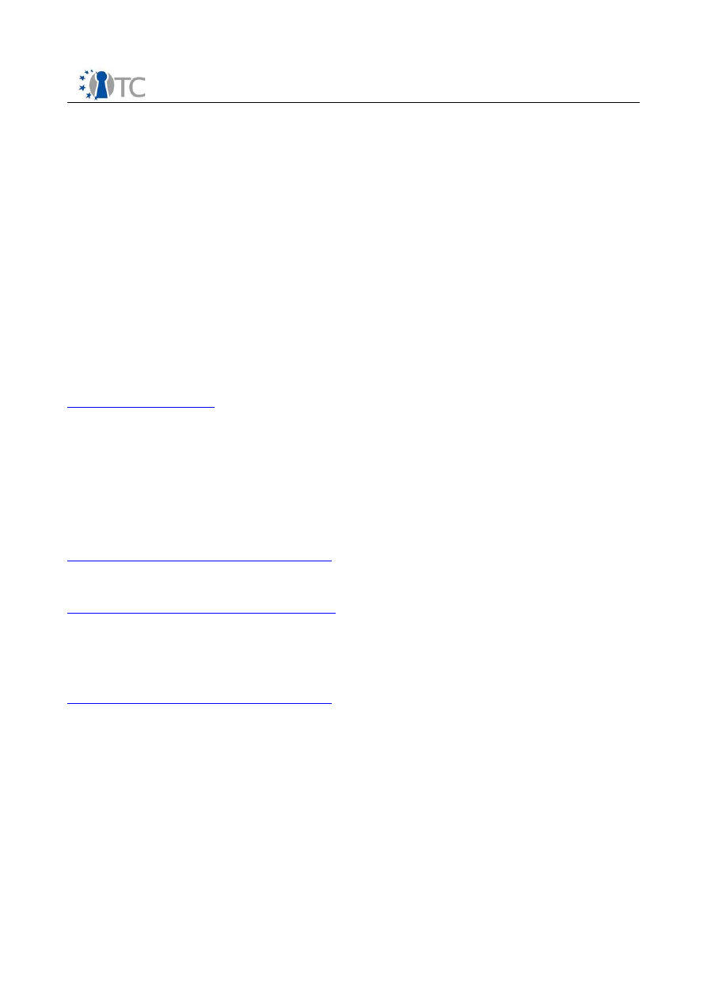

D02.3 Requirements Definition and
Specification
Project number
IST-027635
Project acronym
Open_TC
Project title
Open Trusted Computing
Deliverable type
Report
Deliverable reference number
IST-027635/D02.3/Final | 1.00
Deliverable title
Requirements Definition and Specification
WP contributing to the deliverable
WP02 (contributions from WP02-08)
Due date
Oct 2008 - M36
Actual Submission Date
Dec 15, 2008
Responsible Organisation
ITAS
Authors
Dirk Kuhlmann, Arnd Weber (eds.).
Irina Beliakova, Alexander Boettcher, Hans
Brandl, Hubert Braunwart, Anthony Bussani,
Görkem Çetin, Chris I. Dalton, Eckhard Delfs,
Kurt Dietrich, Roman Drahtmüller, Volkan
Erol, Ivan Evgeniev, Ralf Findeisen, E. M.
Gallery, Bora Güngören, Pete Herzog, Zoltan
Hornak, Kadir Imamoglu, Bernhard Jansen,
David Jennings, Bernhard Kauer, Rainer
Landfermann, Matthias Lenk, Peter Lipp,
Hans Loehr, Stephane lo Presti, David
Plaquin, Armand Puccetti, Harigovind
Ramasamy, Gianluca Ramunno, Florian
Schreiner, Matthias Schunter, Christian
Stueble, Gergely Tóth, Ventcislav Trifonov,
Alexander Warg, Dirk Weber, Carsten
Weinhold, Andreas Wespi.
Requirements Definition and Specification
Final | 1.00
Abstract
OpenTC sets out to develop trusted and
secure computing systems based on Trusted
Computing hardware and Open Source Soft-
ware. This deliverable provides a high-level
specification to guide design and future im-
plementation. Requirements were derived in
part from a media analysis, application sce-
narios and use cases definitions that are also
included in this document.
Keywords
Edit Document Properties
Dissemination level
Public
Revision
Final | 1.00
Instrument
IP
Start date of the
project
1
st
November 2005
Thematic Priority
IST
Duration
42 months
If you need further information, please visit our website
www.opentc.net
or contact
the coordinator:
Technikon Forschungs-und Planungsgesellschaft mbH
Richard-Wagner-Strasse 7, 9500 Villach, AUSTRIA
Tel.+43 4242 23355 –0
Fax. +43 4242 23355 –77
Email
coordination@opentc.net
The information in this document is provided “as is”, and no guarantee
or warranty is given that the information is fit for any particular purpose.
The user thereof uses the information at its sole risk and liability.
OpenTC Deliverable 02.3
2/147

Requirements Definition and Specification
Final | 1.00
Table of Contents
1 Summary.....................................................................................................................8
2 Introduction.................................................................................................................9
3 Results of consortium-internal Survey.......................................................................11
3.1 Survey Results......................................................................................................11
3.2 Summary and Conclusions ...................................................................................19
4 Media Analysis...........................................................................................................20
4.1 Method and Selected Media..................................................................................20
4.2 TC in General........................................................................................................20
4.2.1 Public Discussion..............................................................................................20
4.2.2 Some German Positions ..................................................................................23
4.2.3 Views on OpenTC.............................................................................................24
4.3 Suggestions..........................................................................................................24
5 OpenTC Application Scenarios...................................................................................26
5.1 Private Electronic Transactions.............................................................................26
5.1.1 Problem Scenario.............................................................................................26
5.1.2 Security Environment.......................................................................................27
5.1.3 Functional Requirements..................................................................................28
5.1.4 Description of Use Cases..................................................................................29
5.1.5 Security Objectives and Security Requirements...............................................31
5.2 Trusted Virtual Datacenter ...................................................................................32
5.2.1 Problem Scenario.............................................................................................32
5.2.2 Security Environment ......................................................................................33
5.2.3 Functional Requirements..................................................................................34
5.2.4 Description of Use Cases..................................................................................36
5.2.5 Security Objectives and Security Requirements...............................................37
5.3 Corporate Computing at Home.............................................................................38
5.3.1 Problem Scenario.............................................................................................38
5.3.2 Security Environment ......................................................................................39
5.3.3 Functional Requirements..................................................................................40
5.3.4 Description of Use Cases..................................................................................41
5.3.5 Security Objectives and Security Requirements...............................................42
6 Workpackage Structure and Relationships................................................................43
7 High Level Architecture Overview.............................................................................45
7.1 Motivation.............................................................................................................45
7.2 Trusted Virtualization Platform Architecture.........................................................46
7.2.1 Main Components.............................................................................................46
7.2.2 Trusted Computing Base..................................................................................47
7.2.3 Component and Service Layering.....................................................................49
7.2.4 Applications......................................................................................................50
7.2.5 Development Support......................................................................................50
8 Workpackage 03: Basic Interface and Trust Layers...................................................51
8.1 SWP 3a: Trusted Computing enhanced CPUs........................................................52
8.1.1 Requirements Breakdown................................................................................52
8.1.2 High-level Specification and Design.................................................................53
8.1.3 Services of this Layer.......................................................................................54
8.1.4 Dependencies: Required Services from Sub-Layers.........................................55
OpenTC Deliverable 02.3
3/147

Requirements Definition and Specification
Final | 1.00
8.2 SWP 3b: TSS-Stack according to TCG Specification .............................................55
8.2.1 Requirements Breakdown................................................................................55
8.2.2 High Level Specification and Design................................................................55
8.2.3 Services............................................................................................................56
8.3 SWP03c: basic TPM-enabled crypto services........................................................60
8.3.1 Requirements breakdown................................................................................61
8.3.2 High-level Specification/Design........................................................................62
8.3.3 Functionality: Services/APIs, Message/Key/Policy formats................................62
8.3.4 Dependencies: required services from sublayers.............................................63
8.4 SWP03d: Java Integration – High Level Overview..................................................63
8.4.1 The Role of Java................................................................................................63
8.4.2 Integration of Trusted Computing into Java......................................................64
8.4.3 Network Security and Isolation of Security-Critical Applications......................66
8.4.4 Applicability of TC-Enhanced Java....................................................................67
9 Workpackage 04: Virtual Machine Monitors...............................................................68
9.1 Specific Goals and Deliverables............................................................................68
9.2 Requirements and Architecture Discussion..........................................................69
9.2.1 Virtualization....................................................................................................69
9.2.2 Run-Time Protection and Isolation....................................................................69
9.2.3 Trusted Computing Base..................................................................................69
9.3 Goals and Deliverables.........................................................................................70
9.3.1 Trustworthy Virtualization Layer......................................................................70
9.3.2 Base TCG virtualization support.......................................................................70
9.3.3 OS instance life-cycle management.................................................................71
9.3.4 Mandatory security policy configuration..........................................................73
9.3.5 Basic TPM management...................................................................................73
9.3.6 Mandatory information flow policy enforcement mechanisms.........................73
9.4 Xen and L4 specifics.............................................................................................74
9.4.1 Xen Virtual Machine Monitor............................................................................74
9.4.2 L4 Virtual Machine Monitor...............................................................................75
10 Workpackage 05: Management of OpenTC Framework...........................................77
10.1 The OpenTC Security Services ...........................................................................79
10.1.1 Trusted User Interface....................................................................................79
10.1.2 User Identity Manager....................................................................................80
10.1.3 Compartment Security Manager....................................................................80
10.1.4 Compartment Trust Manager.........................................................................81
10.1.5 Storage Manager............................................................................................81
10.1.6 TPM Server.....................................................................................................81
10.1.7 Cryptographic Services..................................................................................82
10.1.8 Virtual Network Management.........................................................................82
10.2 OpenTC Security Management Services.............................................................82
10.3 Management of the Trusted Platform Module.....................................................83
10.3.1 Initialization of the Security Platform.............................................................83
10.3.2 TPM Configuration..........................................................................................84
10.3.3 TPM Backup and Restore Functionality..........................................................84
10.4 Key Management Services and Infrastructure....................................................85
10.4.1 Public Key Infrastructure Overview................................................................85
10.4.2 Trusted Computing enhancement of PKI........................................................85
10.4.3 Privacy-enabled Key Management.................................................................86
10.5 Implementation Architecture..............................................................................87
10.5.1 Implementation on L4....................................................................................87
OpenTC Deliverable 02.3
4/147

Requirements Definition and Specification
Final | 1.00
10.5.2 Implementation on Xen..................................................................................87
10.6 Management Applications...................................................................................87
10.6.1 Trusted Platform Agent (TPA).........................................................................87
10.6.2 Remote Management Provider (DMTF CIM)....................................................89
11 Workpackage 06: Trusted Computing Applications.................................................90
11.1 General...............................................................................................................90
11.2 SWP06a: Interoperable DRM ..............................................................................90
11.2.1 Requirements breakdown..............................................................................90
11.2.2 Planned features ...........................................................................................91
11.2.3 High level Specification and Design...............................................................92
11.3 SWP06.b: Message Exchange Infrastructure ......................................................94
11.3.1 Requirements breakdown..............................................................................94
11.3.2 High-level Specification and Design...............................................................95
11.3.3 Functionality: Services/APIs, Message/Key/Policy formats..............................97
11.3.4 Dependencies: Required services from sub layers.........................................99
11.4 SWP06.c: Trusted Platform WYSIWYS application...............................................99
11.4.1 Requirements Breakdown............................................................................100
11.4.2 High-level Specification and Design.............................................................101
11.4.3 Functionality: Services/APIs, Message/ Key / Policy formats.........................102
11.4.4 Dependencies: Required Services from Sublayers.......................................104
11.5 SWP06.d: Encrypted File Service......................................................................105
11.5.1 Requirements breakdown ...........................................................................105
11.5.2 High Level Specification...............................................................................107
11.5.3 Functionality.................................................................................................108
11.5.4 Dependencies...............................................................................................110
11.6 SWP06.e: Multifactor Authentication.................................................................110
11.6.1 Requirements breakdown............................................................................110
11.6.2 High-level Specification/Design of selected Workpackages .........................111
11.6.3 Functionality: Services/APIs, Message/Key/Policy formats............................111
11.6.4 Dependencies: Required services from sub-layers.......................................113
12 Workpackage 07: Evaluation and Assurance.........................................................114
12.1 General.............................................................................................................114
12.2 SWP07a: Manual and automated Security Testing, Risk Analysis.....................114
12.2.1 Objectives....................................................................................................114
12.2.2 Approach......................................................................................................115
12.2.3 Dependencies with other SWP......................................................................117
12.3 SWP07b: Linux Package Verification.................................................................117
12.3.1 Objectives....................................................................................................118
12.3.2 Approach......................................................................................................118
12.3.3 Functionality.................................................................................................119
12.3.4 Dependencies with other SWP......................................................................119
12.4 SWP07c: Applied Trust Verification and Integrity Methodology........................119
12.4.1 Objectives....................................................................................................119
12.4.2 Approach .....................................................................................................120
12.5 SWP07d: Towards CC EAL5 Certification...........................................................120
12.5.1 General.........................................................................................................120
12.5.2 Objectives ...................................................................................................120
12.5.3 Approach .....................................................................................................121
12.5.4 Dependencies with other SWP......................................................................121
13 Workpackage 08: TC for embedded controllers in mobile phones.........................122
OpenTC Deliverable 02.3
5/147

Requirements Definition and Specification
Final | 1.00
13.1 Overview ..........................................................................................................122
13.2 SWP08a: Market Requirements and technical Capabilities...............................123
13.2.1 Market, user and mobile network provider requirements............................124
13.2.2 Minimum set of functionalities for embedded HW/SW platforms.................125
13.2.3 Suitability and options of mobile TPM for demonstrator...............................125
13.3 SWP08b: Trusted Operating System for Mobile Platforms ...............................125
13.3.1 Overview......................................................................................................126
13.3.2 Demonstrator Applications...........................................................................126
13.3.3 Use Case: Secure Wallet...............................................................................127
13.4 SWP08c: Trust and security profiles for application structures ........................127
13.4.1 Background on use cases............................................................................127
13.4.2 Other Activities.............................................................................................129
13.4.3 Future activities............................................................................................129
13.5 Use case analysis: Secure wallet on the mobile phone.....................................130
13.5.1 Overview......................................................................................................130
13.5.2 Motivation and Problem Description.............................................................130
13.5.3 Terms and Definitions..................................................................................131
13.5.4 Security Objectives & Security Requirements..............................................131
13.5.5 Functional Requirements (Use Case Model).................................................133
14 The OpenTC Project...............................................................................................134
15 List of References..................................................................................................135
16 List of Abbreviations..............................................................................................136
17 Appendices............................................................................................................138
17.1 Consortium-internal Questionnaire...................................................................138
17.2 References identified in the media analysis......................................................141
OpenTC Deliverable 02.3
6/147

Requirements Definition and Specification
Final | 1.00
List of figures
Figure 1: Mapping Virtual Infrastructures to Physical Resources in a Data Center.......32
Figure 2: Diagram of the platform architecture............................................................39
Figure 3: Dependencies between OpenTC workpackages............................................43
Figure 4: High Level OpenTC Architecture (idealized logical view)...............................47
Figure 5: VM-hosted Security services..........................................................................48
Figure 6: VM-hosted to generic Security Service..........................................................48
Figure 7: Software Components for TCB.......................................................................54
Figure 8 : TSS Stack......................................................................................................56
Figure 9 : TCG TSS architecture – core service.............................................................57
Figure 10 : TCG TSS architecture service provider.......................................................59
Figure 11: Architecture of the cryptographic libraries/applications..............................62
Figure 12 : TSS Abstraction Layers...............................................................................64
Figure 13: TSS Access Mechanisms..............................................................................65
Figure 14: Chain of Trust..............................................................................................66
Figure 15: Xen management architecture....................................................................72
Figure 16: Xen management functionality...................................................................72
Figure 17: Layers of the OpenTC Framework................................................................78
Figure 18: Security Management Components sorted by Abstraction..........................79
Figure 19: Security Management Components.............................................................83
Figure 20: Trusted Platform Agent................................................................................88
Figure 21: Architecture of a DRM system.....................................................................92
Figure 22: Architecture of a MEITC system...................................................................96
Figure 23: communications among MEITC components...............................................97
Figure 24: WYSIWYS VM with components.................................................................101
Figure 25: EFS components........................................................................................107
Figure 26: MFA components.......................................................................................111
OpenTC Deliverable 02.3
7/147

Requirements Definition and Specification
Final | 1.00
1 Summary
OpenTC sets out to develop trusted and secure computing systems based on Trusted
Computing hardware and Open Source Software. This deliverable provides high-level
specifications to guide design and future implementation. Requirements were derived
in part from a media analysis, application scenarios and use cases definitions that are
also included in this document.
OpenTC Deliverable 02.3
8/147

Requirements Definition and Specification
Final | 1.00
2 Introduction
The goal of OpenTC is to define and implement an open Trusted Computing frame-
work. This framework builds on the cost efficient and widely deployed “Trusted Plat-
form Module” (TPM) specified by the Trusted Computing Group (TCG) and the new
generation of x86 CPUs from AMD and Intel. Main software components of OpenTC are
Open Source operating systems and software, supporting Linux in particular.
The architecture is based on security mechanisms provided by low level operating
system layers, with isolation properties interfacing the Trusted Computing hardware.
These layers make is possible to utilize enhanced trust and security properties for
operating systems, middleware, and applications. The suggested architecture is ex-
pected to be applicable to different platform types such as servers, workstations and
embedded systems.
This document gives an overview of context information, requirements, and high level
specifications guiding the direction of OpenTC. Following this introduction, we present
results of a small, consortium-internal survey on Trusted Computing. It was conducted
to document views and opinions, to share them between the various partners of this
large project, and to highlight potential issues to be taken into account during the
design phase. The survey provides a context to consider characteristics of potential
application scenarios and to discuss implications for the future dialog between the
project and the outside world.
In chapter 4, we present the results of a media analysis on the perception of Trusted
Computing by the start of the project. Drawing from a variety of sources, we outline
and comment major points of discussion that were raised during the public debate.
Where possible, we give recommendations on how to address these concerns in
OpenTC's design and implementation. Using these results and input from consortium
partners, we make suggestions for an application scenario that concerns the
protection of electronic transactions of private end-users in their role as consumers.
Application scenarios and use cases have a dual role in OpenTC. On the one hand,
they are starting points for determining necessary and desirable features of the over-
all architecture. On the other hand, they serve as the context to validate project re-
sults. Substantial effort has been spent in the first months of the project on
investigating suitable application scenarios and defining corresponding use cases. A
summarizing description of three use cases can be found in chapter 5. They address
recommendations from chapter 4. In addition, they address datacenter and server en-
vironments, and enhanced trust and security properties of remote corporate
computers connected to corporate networks via the Internet.
The remainder of this report is dedicated to requirements and high level
specifications. We outline the structure and interdependencies of OpenTC activities
and give a motivation and overview of the general architecture. The following chapters
document requirements (Workpackage 2) and high level specifications for each of the
technical Workpackages 3 to 8 (Workpackage 1 addresses management,
Workpackages 9 and 10 address distribution and dissemination of results).
Determining requirements and specification is a continuous activity. Current findings
will be extended and improved, and it is planned to update this report during the
course of the project. Public documents that aim to obtain feedback from the
interested public are expected to use updated and refined versions of this report as a
OpenTC Deliverable 02.3
9/147

Requirements Definition and Specification
Final | 1.00
starting point. This document is the final version of the high-level specification.
Detailed up-to-date specifications will be made available on the project server.
OpenTC Deliverable 02.3
10/147

Requirements Definition and Specification
Final | 1.00
3 Results of consortium-internal Survey
The consortium conducted a small internal e-mail survey
(a) for identifying areas to be addressed in the future survey work, and
(b) for identifying issues to be taken into account when specifying OpenTC.
The results of this survey are presented in an anonymized way. Answers such as
“don’t know” have been omitted, which appears justifiable as the objectives are to
collect ideas and to share knowledge. Initially, the questionnaire has been tested in
personal interviews. As of March 2006, answers have been received from ten
consortium members, seven from industry, three from academia.
The questions from the questionnaire are presented in courier font. For the complete
questionnaire, please consult the corresponding appendix.
3.1 Survey Results
Experiences with TC
Do you have any practical experiences with Trusted Computing
yourself? If yes:
What are your experiences?
Against which threats has TC been used in your case?
All but two respondents have experiences with TC. In summary, most of the ten
respondents have a TPM in their PC, but only 2 use it. On computers equipped
with TPMs, the hardware is used to secure keys and passwords, for example as
encrypting password files.
Is your institution involved in selling TPMs, computers with TPMs,
or in offering related software or services? If yes:
What sort of products and services are on offer?
Which experiences did your company make in that field?
Why are your customers interested in TC?
Are there any documents available about private or
corporate user interests and experiences?
Respondents from industry are active in the related fields, for example TCG
specification work, TPM manufacturing, related software development and
evaluation, sales of PCs with TPMs.
Software supporting TC from the following manufacturers was mentioned,
supplied either by the respondent's company, or by partner companies:
Infineon, Hewlett-Packard, Utimaco, Wave (backup-server), and Tripwire (check
of hash values against list).
TPMs are considered the cheapest way to secure critical keys and data. All large
corporations are interested in this kind of usage, in particular with regard to
portable computers. The feedback obtained from customers suggests that TPMs
are being used. Customers do not give any details on what exactly they secure
with TPMs. It was not possible to identify any publicly available documents
OpenTC Deliverable 02.3
11/147

Requirements Definition and Specification
Final | 1.00
describing user experiences with TC.
Key finding: S
ecuring corporate networks seems to be the current main market for TC,
e.g., to render hard disks on lost and stolen portable computers unusable. This is in
contrast to the beliefs expressed in many media (see next chapter) according to which
TC is essentially about DRM for increasing revenues from sales of software and
content.
Use Cases and Threats
What are the most important use cases for OpenTC which should be
taken into account during the design, in your view? Please describe
them.
The use cases mentioned by the respondents can be described and grouped as
follows:
Protection of PC-networks
Protection of PCs is the most general use case mentioned:
1. Protection against vulnerabilities (viruses, worms, exploitable security
vulnerabilities in general).
2. Managing large numbers of corporate PCs: block stolen ones, lost HDD
should be unusable, secure email, secure workflow management.
3. Access to WLAN and corporate networks
4. Trusted Network Connect: any use case including corporate users with
mandatory use of TC; Trusted Network Connect: checking the integrity of
corporate client machines, while allowing user to maintain private
execution environment in parallel, for example by means of virtualization.
5. Secure private PCs owned by employees if they are used to access
corporate networks. On private hardware, the owner should be enabled to
run the company OS configuration in parallel to his own OS.
6. Highly-sensitive corporate networks: security and locking-down of
information within a network of computers; restricted usage in specialized
facilities where sensitive information is handled.
These remarks are in line with today’s predominantly corporate use of TPMs.
Secure servers
1. Virtual data center: several operating system instances running on behalf
of different companies or applications run on the same physical server.
With support for load balancing, the number of such servers could be
reduced, resulting in cost savings for equipment, energy, and hardware
maintenance.
2. Server support services: provider installed servers at client location with
24/7 support. The provider needs to assure integrity of servers to prevent
changes, manipulations, etc. from his customer that could result in
additional support costs.
3. Network components: secure Linux servers and routers.
OpenTC Deliverable 02.3
12/147

Requirements Definition and Specification
Final | 1.00
Server-based scenarios are a promising field for applying OpenTC results, since
virtual data centres come with new challenges to isolate execution
environments of different customers.
Single services
The following single services were mentioned:
1. Home banking etc.: potential killer application, its value is easy to
communicate to the public and the media. The solution should reduce the
impacts of unauthorized modifications of application software, viruses,
malware, phishing, etc. Solution might be applicable to auctioning and
other types of e-business.
2. Secure payment: reduce risks of identity theft and phishing.
3. Improving confidence in digital signatures: “
What You Sign Is What You
See
” (WYSIWYS) applications for really secure electronic signatures, to
support the European Directive on electronic signatures.
4. Fair DRM allow executing lawful rights of digital media consumers, for
example with support for sub-licensing in accordance with mutually
agreed policies (copy to portable players, restricted sharing).
5. Shared infrastructure and storage. The traditional client-server model is
not optimal for serving media content that needs a lot of bandwidth.
Private resources could be used for serving content. In this case, it could
be advantageous if private resources can temporarily be put outside the
owner's control (by renting them out).
6. General support for users and developers that enhances the transparency
of the underlying TC mechanisms and the effective control of platform
owners.
Some respondents suggested to use Trusted Computing to secure single
applications whose subversion can result in actual financial loss for platform
owners. DRM for media content was mentioned, but was required to be
implemented with protection of user rights. It was also pointed out that users
might need applications to manage their TPM data.
Small platforms
1. OS for small platforms should support features similar to those on trusted
PC platforms (better protection against mobile viruses, DRM, etc.].
Overview of application areas and scenarios
The following table gives an overview of use cases for which detailed responses
were given.
OpenTC Deliverable 02.3
13/147
Requirements Definition and Specification
Final | 1.00
Name
Threat
Requirements
Com-
part-
ments
OS
Potential
market
Mobile
phones,
embedded
systems
Viruses,
malware,
SIMLOCK
attacks, illegal
copying
Adaptation to
embedded controller
3-6
Embed-
ded,
Micro-
kernel
Top/ middle
level mobile
phones
Home banking
etc.
Viruses,
malware, etc.
Protection against
code modification,
phishing attacks, etc.
2 or
more
Windows
10% [of
PCs], in the
EU about 10-
20 million
Secure
payment
Identity theft,
phishing
Secure storage,
communications, non-
repudiation
Any
WYSIWYS
Faking digital
signatures
Trusted path between
application, keyboard
and monitor
2
Protection
against
vulnerabilities
Viruses etc.
Identification of
executables
Any
Home office
Attacks on
corporate
data
Encryption of HDD,
sealing. Installation
under existing OS
would be convenient
2
Any
Thousands
Corporate
network
Leaking
sensitive
information
Encryption
Mutual attestation of
OS and applications
2
Linux
In
specialised
facilities
DRM
(copying)
Protect rights; allow
copying according to
rights/policies
2
Linux
Widespread
Virtual data
centre
Malicious
code, insider
attacks
Load balancing,
virtualisation of TPM,
strong isolation
20
multiple
4-10
Table 1: Use Cases.
Sorted by number of expected users, with similar use cases being grouped together.
The table shows that use for mobile phones could lead to a deployment of TC on
a very large scale. In 2005, some 800 million phones have been sold (Msmobiles
2006); a significant share of these could become candidates for embedding TC-
technology, as they become increasingly complex machines which need to be
secured.
The second largest application mentioned is home banking (or similar forms of
e-commerce). The respondent estimated that this could result in some 10 or 20
million applications in the EU.
OpenTC Deliverable 02.3
14/147

Requirements Definition and Specification
Final | 1.00
Trusted Computing and the Media
Are you aware of any benefits of Trusted Computing discussed in the
media? Which are these?
As a general observation, the media tends not to discuss potential benefits.
Are you aware of any disadvantages of Trusted Computing discussed
in the media? Which are these?
Responses can be summarized as follows:
●
The media tends to equate TC with Digital Rights Management. Most
consumers do not like DRM, and some emphasis has been put on the fact
that it will become more difficult to work around DRM-schemes.
●
There is fear that privately owned computers will be controlled by
Microsoft. The technology could be abused to reduce owner's freedom of
choice with regard to installing and using software.
●
There could be infringement of privacy if a user is required to
communicate his configuration to external parties that want to check
whether the owner's system has been set up in a defined way.
Which critiques are justified or unjustified, in your opinion?
The comments received can be summarized as follows:
●
If crucial software components and application are made to run only
with TC capabilities, this could put restrictions on the user.
●
Privacy-related critiques should be taken seriously. Representative
bodies of users should be able to check privacy-related technical
developments.
●
Much critique from the media is speculation without factual basis.
Where critique is justified (lack of a compliance program and
conformance criteria), it is often ignored by the media since the topics
are difficult to understand.
●
Trusted Computing is shrouded in secrecy: information, developer
tools and end-user tools that would help to interact with TPMs in a
straight-forward way are difficult to come by or unavailable. People
fear what they do not understand.
Do you think the public debate around Trusted Computing has somehow
changed during recent time? If so, how would you characterise the
current state of debate around TC?
The responses can be summarized as follows:
●
Over the last couple of years, the discussion has improved as it has
become more fact-based. Take [the German computer magazine] c’t,
an important computer magazine in Europe. You can see from the
OpenTC Deliverable 02.3
15/147

Requirements Definition and Specification
Final | 1.00
archives that their representation of Trusted Computing changed to
reflect the actual technical facts, notwithstanding that they remain
skeptical.
●
The IT and software manufacturers had to address the problem of
trust in end systems as an industry – the alternative was potentially
inadequate and inflexible governmental regulation. Some vendors had
preceding work that came from research on DRM which addressed
parts of the requirements, and this may have influenced some early
decisions in the specification phase. For example, years ago a
marketing person from Microsoft had said the area [for applying TC]
was „content”. This was communicated in all media. The TCG was
supposed to be more balanced than the TCPA.
●
The problem of lost and stolen portable computers has received
increasing attention from the media. The public debate has motivated
TCG standardisation people to add additional privacy and security
features into the TC specification (Direct Anonymous Attestation,
option of deleting the endorsement key). Important parties such as
governments have contributed to the discussion. They now have a
stake in the development of TC and a more balanced view on potential
advantages and disadvantages, and there is an active debate about
using TPMs for Linux.
●
Public opinion and opinions on certain websites with misinformation
are negative (3 such statements). The general public still does not
understand or even know about TC and its potential benefits, and the
broad mass of users is not interested. Presentations and news about
TC at the RSA conference 2006 did not add to the level of public
understanding, as the only relevant papers were of scientific and
research nature. The use of TPMs in Microsoft VISTA is not a point in
public discussion.
●
The last case from Sony [a DRM system based on a Windows rootkit]
seems to be unequivocally bad. [this respondent apparently assumes
that negative news about DRM are implicitly negative for TC which is
widely regarded to be related to DRM]
Are there any particularly important websites, newspapers or
journals we should take into account?
Are there any specific documents which were published during the
last few months which we should take into account?
The following recommendations were put forward:
●
Richard Stallman's and Linus Torvald's recent comments on the GPLv3
and Trusted Computing;
●
statements produced by the Electronic Privacy Information Center (EPIC);
●
work on DRM conducted by the EU-funded “Indicare” project;
●
search for TC/TCG and “discussion forum” and check German and US-
Wikipedia, there is tracking of discussion of content;
●
check the questions written by the German Federal government, and the
OpenTC Deliverable 02.3
16/147

Requirements Definition and Specification
Final | 1.00
TCG answers.
Some of these suggestions have been taken into account in the media analysis
(next chapter).
If you think of the perception of Trusted Computing by the general
public, is there any action the OpenTC-consortium should take, e.g.
regarding PR activities, or use cases to be chosen?
The responses can be summarized as follows:
●
In general, public perception could be improved by moving towards the open
software developing environment. The most effective contribution of OpenTC
would be if results can be used as yardstick for Microsoft's effort.
●
Regarding PR activities, it was suggested to involve a PR-agency to introduce
OpenTC-concepts to the media. On the other hand, it was remarked that it is
an uphill struggle to improve public perception. OpenTC is probably too small
for real PR activities, Its primary chance of producing a positive echo are the
attractiveness of its technical approach and results.
There are important publications such as the Communications of the ACM or
Business Week where technologists and executives get their opinions from.
However, one may have doubts whether Trusted Computing is a topic for
them. In any case, we need the technology first to substantiate our claims.
This issue should probably be discussed with the TCG and their media
professionals (the TCG-website includes a section on publications). From a
practical perspective, OpenTC could produce a bootable system with
practical applications which could be promoted at public and open events to
present first results to some relevant people.
●
Regarding application scenarios and use cases, OpenTC should promote
positive aspects of Trusted Computing, e.g. by showing important use cases
like protection within a company network. People will probably be interested
know that we are close enough to TCG to make an impact, and OpenTC's
relevance and specific approach should be communicated to the Trusted
Computing Group.
Simple end-user tools (under Windows or a bootable Live Linux CD with tools
to support easy interactions with TPM hardware) are likely to be well
received by the liberal media. The same could be true for solutions where
users have control over controversial aspects (DRM keys, certificate
generation etc.). Solutions should demonstrated that the Open Source
approach allows implementers to modify or replace "official" components
that are considered problematic.
Application scenarios should be chosen with regard to their relevance to the
public, choosing solutions that are considered reasonable to the average
user. In theory, OpenTC could investigate open alternative payment systems
or DRM, but the feasibility and practical impact of such efforts is somewhat
questionable.
OpenTC Deliverable 02.3
17/147

Requirements Definition and Specification
Final | 1.00
●
Regarding interviews to be conducted, suggestions were made to involve
persons with well known critical attitudes, asking them for concrete
suggestions and for feedback to OpenTC use cases. It was also suggested to
interview a named representative of the German Ministry of the Interior
about requirements.
Design Issues
Are there any open issues in the design of OpenTC? Which are these?
Any comments?
Answers to these questions can be summarized as follows:
●
In general, we need to maintain speed and momentum, as indifference
may set in and people become complacent about negative aspects of TC
implementations. This, in turn, may result in moves from commercial
organizations to abuse the technology and to stake their claims on home-
user PCs (a captive audience).
Currently it is quite tedious to use TC, since security adds complexity. We
don't have clear indications on how much additional complexity users
would accept. In OpenTC, we should try to make things as seamless as
possible.
●
Concerning single technical issues, there are real challenges to verify the
integrity of a particular system based on PCR values (Platform
Configuration Register) in a meaningful way. Using open and evolving
OpenTC OS which operates on a variety of hardware only adds to these
difficulties.
Measurement of application trustworthiness is also an issue. Multiple
steps are needed to measure applications and compare their metrics
against a huge database somewhere that is vouched for by an
organisation. This appears to be feasible for components that are rather
static, but many components may be subject to frequent change. This
can be addressed by a monitoring mechanism that does not log
everything into the TPM.
An important issue is to find policy expressions with an appropriate level
of granularity to express the configuration and information flow of virtual
machines. This is required to reason about security properties of virtual
machine compartments connecting to the outside world.
The design should make sure that “trusted” compartments cannot
assume control of the whole computer, and that compartment running on
behalf of other parties are erasable. Some scenarios may leverage pre-
existing trust (for example in data centers). OpenTC may therefore also
consider a design that do not require hardware TPMs.
OpenTC Deliverable 02.3
18/147

Requirements Definition and Specification
Final | 1.00
3.2 Summary and Conclusions
The responding partners presented their views about opportunities and risks of TC, the
likely evolution of the market, and suggestions on potential areas of work. In this
section, we summarize issues which appear to be of particular relevance to the
project.
The most attractive areas for widespread deployment of Trusted Computing
technology, in terms of numbers, are probably mobile phones and home banking. The
first scenario is addressed in an OpenTC Workpackage that investigates TC usage for
embedded and mobile controllers. Regarding home banking or similar application
scenarios, a Linux-based demonstrator using OpenTC components appears to be
feasible, and it could be beneficial to demonstrate the value of TC architectures. As
demonstrated for XEN, components used in OpenTC might eventually be capable of
hosting proprietary operating systems such as Windows (Shankland 2005).
According to the survey, the most realistic market for Trusted Computing are solutions
for securing corporate networks and data assets (Trusted Network Connect), integrity
validation for remote systems, support for data and hard disk encryption. This is in
contrast to commonly expressed opinions that TC mainly targets DRM for consumer
PCs to increase revenues for software and content providers. A demonstrator
protecting portable computers (with virtualization, migration of keys and protected
data, etc.) could therefore be useful.
Concrete suggestions put forward by the respondents concern specific application
scenarios (isolation mechanisms for data centers, security design that does not
require TPMs, consumer friendly DRM). It was highlighted that additional system
complexity caused by improved security properties may lead to acceptance problems.
Several technical challenges need to be addressed in the areas of policy,
configuration, monitoring and maintaining a trustworthy initial state.
The public perception of TC remains a potential inhibitor, not least because potential
benefits of Trusted Computing are under-represented. Public perception of Trusted
computing might be improved by
●
involving parts of the open software development communities and user groups
in the design and implementation effort.
●
providing developer and end user tools, support and information for Trusted
Computing hardware for the public,
●
providing applications that appeal to the general public
●
addressing privacy concerns in the design, e.g., by implementing solutions base
on Direct Anonymous Attestation (DAA).
The OpenTC consortium should, within its means, contribute to the public debate.
Professional PR support could be of advantage here. PR-activities could be discussed
with the TCG, and a public event could be used to present first OpenTC results. The
consortium should consider to maintain links with representatives of TC-critical groups
and interested public bodies for obtaining concrete suggestions.
OpenTC Deliverable 02.3
19/147

Requirements Definition and Specification
Final | 1.00
4 Media Analysis
The following analysis of media had the objectives
•
to assess TC and its relation to DRM systems,
•
to outline the conditions of TC and DRM acceptability,
•
to identify general requirements to be taken into account by the project, and
•
to identify areas to be discussed with stakeholders, for example in workshops
and a web-based discourse process.
The findings from this analysis are described in this chapter.
4.1 Method and Selected Media
Between January and March 2006, we conducted a systematic search for printed and
online material about Trusted Computing. For online searching, we used engines from
Google, Financial Times, New York Times, Heise Online, c’t (Magazin für
Computertechnik),
and
Golem
(the last 3 being in German). To identify articles,
statements on blogs, etc., we used the following keywords (the first two alone, and in
combination with all others):
Trusted Computing, OpenTC, digital rights management,
benefits, critique, risks, technology assessment
. We then followed links to web-based
content and literature (see the references section). This approach was followed to gain
a broad overview of how TC-systems are being assessed by those participating in the
debate (interested citizens, professionals, authors of print media, etc.). Note that links
leading to information from companies offering TC components and services have not
been evaluated. We also included explicit suggestions for media to be looked into by
consortium members.
4.2 TC in General
4.2.1 Public Discussion
In the media identified, a general skepticism towards Trusted Computing prevails. We
did not evaluate these arguments statistically (e.g. by counting arguments and
articles, as common in media analysis), since this would not provide additional insights
relevant for the OpenTC project. The reason is that it became obvious that much of
the material reiterates arguments that were put forward at early stages of the public
debate by Anderson (2003), Stallman (2002), EPIC (2002), and Schoen (2003).
The main arguments of these and subsequent authors can be summarized as follows:
1. The main motivation behind TC is to support powerful DRM-systems for
protecting content and software (see Anderson 2003 or more recently
Thompson 2005). “It is about setting up toll booths deep in your own pockets” is
one comment made on Slashdot (2006). Another one is: “The software
companies realize they have a product that never gets old, never wears out and
will perform the task it was purchased to do until hell freezes over unless they
find a way of breaking it. Software companies have been trying to find ways of
making software wear out for decades so they can rake a continuous income
from their customers the way other manufacturers do. They use product
OpenTC Deliverable 02.3
20/147

Requirements Definition and Specification
Final | 1.00
activation to tie the non-wearing software to the fragile hardware for example,
but their customers hate them for it. The customer wants to buy a tool and use
it forever…”
2. TC will take away the control of a PC from the user (Anderson 2003).
3. The computer will have keys kept secret from the user.
4. Control of TC-using computer systems will be with media companies and with
companies such as Microsoft and Intel (cf. Graff 2005).
5. Software may stop operating if one does not obey to the new rules enforced by
means of TC, e.g., with regard to using content, but also with regard to files
from word processors and email programs (Anderson 2003).
6. Exchange of files produced by Open Source software and by TC-using software
will be hindered. Customers could be locked into proprietary solutions. For
instance, Schneier (2005) criticizes that interoperability is not strongly enforced
by the TCG.
7. Existing copyright exemptions, such as those for librarians, scientists,
educators, blind people etc. are difficult to implement in a DRM system implying
that DRM should not be used at all.
8. Users might be traced using keys provided and configuration attested by the
TPMs.
9. Patents owned by TCG-companies could be used to limit competition.
These skeptical views are motivated by the following observations:
●
Since the mid-nineties, there have been plans by the US government to
implement a “Trusted Third Party” for key escrow.
●
In the late 1990s, Intel planned means of unique identification in its Pentium III
processor, a move which was abandoned after widespread criticism.
●
"This is a new focus for the security community," said David Aucsmith, security
architect for chip maker Intel "The actual user of the PC – someone who can do
anything they want – is the enemy." (quoted after Lemos 1999)
●
The U.S. Digital Millennium Copyright Act might hinder cryptanalysis and hence
progress in cryptography.
●
The subsequent proposal by US Senator Fritz Hollings to use a trusted chip in all
consumer electronics equipment (Anderson 2003). In critical comments the chip
has since been nicknamed the “Fritz” chip.
●
Bill Gates reportedly considers exploring the business opportunities of
restricting office document usability: “We came at this thinking about music,
but then we realized that e-mail and documents were far more interesting
domains" (after Thurrott 2002). Similarly, Brad Brunell of Microsoft reportedly
said that with Palladium one could send E-Mails which dissolve after one week
or can’t be printed. Palladium was said to remove any weaknesses of software-
based DRM-systems (EBI-Newsletter 2003).
OpenTC Deliverable 02.3
21/147

Requirements Definition and Specification
Final | 1.00
●
More recently, Sony modified the Windows operating systems by installing a
rootkit for DRM purposes without informing the users. The rootkit has been said
to produce vulnerabilities. Skepticism increased because the providers of anti-
virus software did not issue warnings (Schneier 2005b).
Richard Stallman even concluded that the potential threats of what he calls
“treacherous computing” makes public resistance necessary (Stallman 2002).
From the perspective of those who are actively developing Trusted Computing
specifications and technology, the public debate is characterized by a high level of
speculation, fear, uncertainty and doubt. Although the applicability of TC for DRM
might have been a driver for some companies, Trusted Computing targets long-
standing problems of IT security and trustworthiness in general.
Whether or not TC enabled systems might take away control from the user will depend
on software implementations and policies that may be required during electronic
interactions, for example, when a remote computer connects to a corporate network.
To disallow direct inspection and modifications of TPM protected keys lies at the heart
of this technology; however, no alternative solution has been put forward that could
achieve the goal of remotely attesting a platform state in a trustworthy manner.
At this stage, one can merely speculate about the level of control that might be
executed by external parties such as content or software providers. Customers may
simply insist on base levels of openness to run arbitrary software or on interoperability
with Open Source based systems, and they may just refuse systems that stop software
from working. Even if it proves possible to implement TC based constraints, their
deployment will primarily depend on market forces and user acceptance.
The problem of DRM solutions allowing privileged access for librarians, researchers
and educators is not specific to those based on Trusted Computing technology. For
this audience, the strength of DRM mechanisms is irrelevant, since their actual access
to content does not rely on circumventing or breaking these mechanisms. As far as
user traceability is concerned, TC included privacy protecting mechanism from the
outset, and this aspect has since been improved by supporting Direct Anonymous
Attestation (DAA).
Potential implications of intellectual property (IP) ownership on aspects of Trusted
Computing are unclear, and it remains to be seen whether they will become stumbling
blocks for non-proprietary implementations. However, as of April 2006, we are not
aware of a single case where IP claims have been brought against freely available
implementations.
In summary: it is currently a matter of speculation whether Trusted Computing will in
fact yield the negative consequences dreaded by its critics. First commercial
applications provide support for protecting keys and sensitive data (cf., e.g., Hewlett
Packard 2003), are mainly targeted at corporate environments. To this extent, TC has
been non-controversial.
For the OpenTC project, the following conclusions can be drawn from the analysis of
the aforementioned, mostly sceptical debate:
1. The project could show that TC can work in the user's interest. The usefulness of
reducing impacts of potential vulnerabilities on PCs and providing hardware
support for storage protection is undisputed. The same holds for checking
whether remote PCs are properly configured before connecting to corporate
networks.
OpenTC Deliverable 02.3
22/147

Requirements Definition and Specification
Final | 1.00
2. It would be attractive to demonstrate TC-protected compartments, using
virtualization to confine the impact of TC-based enforcement mechanisms to
locked-down components.
4.2.2 Some German Positions
For OpenTC, it is interesting to review opinions which are either deviating, more
neutral or referring more closely to the TCG specifications. The most detailed one we
were able to identify is the German government’s position. In 2003, it expressed 47
different requirements towards the TCG and towards Microsoft (cf. Federal
Government 2003, Sandl 2004, Schallbruch 2004; similarly: BITKOM 2004). In turn, the
TCG responded to the demands (2004). For the OpenTC project, the following issues
are of potential relevance:
●
“It must be possible to transfer the information stored in an existing security
module to a new hardware platform in such a manner that users can continue
using their software even on the new hardware platform.” (request 3.1)
Comment: Key migration is part of the TCG specifications. It could be beneficial
for the public perception of OpenTC if the consortium demonstrated key
migration, e.g., with backup or DRM applications.
●
“If DRM solutions are developed which are based on the security module (TPM),
such solutions must consider the user's right to copy data and programs for
private purposes and must be implemented accordingly.” (request 3.2)
Comment: While the TCG specifications render this possible, demonstrating this
could be beneficial.
●
“Users must have full control of their keys, and they must be able to delete
these keys when necessary and to generate new keys... It should be possible to
delete any information previously stored in the TPM and to cancel its
functionality (for example, when scrapping the PC).” (request 4.3) Comment:
The TCG responded to these demands by writing that the owner has the ability
to create, use and invalidate any key. Regarding the endorsement key, the TCG
anticipates that the TPM owners will use it as provided. The consortium could
consider to enable owners and users to view data stored in the TPM, edit such
data as appropriate, and invalidate them as appropriate, e.g., when a PC is to
be handed over to another user or to be scrapped.
●
Zero-knowledge attestation should be aimed at (request 5.7). Comment: As DAA
has become part of the TCG specifications, there is no need for OpenTC to
address this. It could be considered for demonstrators to be built later in the
course of the project.
●
The TCG should find a solution which exempts non-commercial open-source
projects from license fees (request 6.1-6.4). The manufacturers in the TCG
should disclose the relevant intellectual property. Comment: The OpenTC
consortium might consider to make related information supporting or hindering
the free use of TC available on its website.
OpenTC Deliverable 02.3
23/147

Requirements Definition and Specification
Final | 1.00
●
“The TCG's actions may not lead to the occurrence or reinforcement of market-
dominating positions in the IT sector.” (request 8.1) Similarly, interoperability of
TC-using software with other software is demanded (request 9.2) Comment: The
OpenTC project as such can be seen as an initiative aiming at reducing market-
domination. Using virtualization it will be possible to demonstrate that locked-
down software can run side-by-side with ordinary software components.
●
“If personal data is transmitted in conjunction with the use of the NGSCB, the
user must have the possibility to consent to such transmission in each and
every case.” (request 10.3). Comment: While this is a demand towards
Microsoft, the OpenTC consortium could conclude that it might be beneficial to
display to the users if relevant data are transmitted. It could be considered to
offer at least the option to see whether an attestation to a remote partner is
being conducted.
A number of authors have suggested that transparency can be supported by applying
the TC approach for securing Linux computers (cf. Kursawe, Reimer 2005; Sadeghi et
al. 2004, 2005; Kuhlmann, Gehring 2003). It has also been suggested to provide
attestation for only a small part of the computer, which would allow to leave other
parts un-attested (Bechtold 2005b, see also Weber, Weber 2006).
In summary, the German debate has become somewhat more neutral. E.g. the article
“Trusted Computing in der Diskussion” in the German wikipedia edition clarifies that
software running on TC computers does not need to be certified by a central agency
and that TC does not imply a monopoly in operating systems.
4.2.3 Views on OpenTC
In journals and on the WWW, some opinions about the OpenTC project have emerged
already. In December 2005, news emerged about OpenTC planning for a DRM
demonstrator. A commentator on the “Golem” blog (2005) accused the consortium
members of being “traitors” to the concepts of Open Source Software. When the
German computer magazine “c’t” published an article about OpenTC early in 2006, it
provided some correct information about the project. Referring to the planned MPEG-
21 demonstrator, the article concluded: “The research objectives by OpenTC will
hardly be capable of resolving the doubts which the sceptics have”. Similarly, Bottoni
(2006) said in his Italian blog that the OpenTC “project is based on the availability of
… the ‘famous/notorious’ Fritz Chip” and would essentially deal with DRM. This is just
another example of the old arguments against TC, in particular that it essentially
means DRM, show up again and again.
However, there are also more neutral voices, such as the German “PC-Magazin” which
remained neutral when reporting about OpenTC in an article available online (2005).
4.3 Suggestions
The following suggestions are based on the media analysis above, and on discussions
in the consortium. The OpenTC project could consider the following actions:
1. OpenTC could render possible TC usage for providing multilateral security, by,
e.g., not only protecting a remote party, but also the user. It could be shown
that virtualization allows to constrain the impact of TC-based enforcement
mechanisms to defined components.
OpenTC Deliverable 02.3
24/147

Requirements Definition and Specification
Final | 1.00
2. OpenTC could demonstrate tools to inspect the TPM as well as for editing and
invalidating TPM protected data as appropriate, e.g., when a PC is to be handed
to another user or to be scrapped. Options to migrate keys and protected data
could be included, for example when providing backup or DRM applications.
Demonstrating this for DRM-protected data could be beneficial.
3. OpenTC could address privacy concerns by supporting to inspect privacy-
relevant data transmitted by TC based mechanisms. The user should get a clear
indication if attestation to a remote systems is in progress. Implementing DAA
could be considered.
4. Information on Intellectual Property-issues that could support or hinder the free
use of TC could be made available on the OpenTC website.
In summary: demonstrating the benefits of TC in practical scenarios appears to be the
most promising line of action. Four types of demonstrators may be of particular
interest:
1. A demonstrator showing how to browse and manipulate TPM-data. This could be
of interest for implementers, the Linux-community, specialised media, etc.
2. A demonstrator showing the benefits for organisations such as corporations and
governments. It could show protection against theft and loss of portable
computers, etc.
3. A demonstrator targeting a DRM application that safeguards basic consumer
rights.
4. Finally, a demonstrator could focus on protecting online transactions of private
users.
Regarding the last point, consumers might be interested to better protect private
assets currently at risk. An obvious example is improved protection of browser based
home banking from password and transaction number “phishing”. Using TC based
attestation, users could convince themselves that the execution environment
dedicated to e-commerce transaction has not been tampered with.
Such a demonstrator would be easy-to-understand, and the underlying principles
could be equally applicable for protecting users in the Windows world. The idea of
securing a browser and its execution environment can be extended to other browser-
based electronic transactions such as auctioning or eGovernment. In the next chapter,
we will outline some ideas in the “Private Electronic Transactions”, or “PET”,
application scenario.
This analysis of media will be continued and refined. We intend to discuss the analysis,
conclusions, requirements and specifications in this document with stakeholders in
interviews, conferences and web-based discourse.
OpenTC Deliverable 02.3
25/147

Requirements Definition and Specification
Final | 1.00
5 OpenTC Application Scenarios
Application scenarios and use cases have a dual role in OpenTC. On the one hand,
they are starting points for determining necessary and desirable features of the
overall architecture. On the other hand, they serve as the context to validate project
results. Substantial effort has been spent during the first months of the project on
investigating suitable application scenarios and defining corresponding use cases. A
summarizing description of three use cases can be found in this chapter. They address
recommendations from chapter 4, datacenter and server environments, and enhanced
trust and security properties of remote corporate computers connected to corporate
networks via the Internet.
5.1 Private Electronic Transactions
As part of a Banking Scenario Use Case, the OpenTC project explores how its
architecture can reduce the risks currently involved in doing home banking over the
Internet. First and foremost, these efforts are targeted at enhancements of user's
security. At the same time, an increase of the protection of banks is achieved. Banks
can benefit from trusted computing e.g. through a reduction of expenses for disputed
transfers.
5.1.1 Problem Scenario
Home banking via the Internet has become a convenient and simple way to do their
financial transactions. Although commonly used, Internet home banking has several
security issues which have been reported in public media. For example, phishing is a
popular form of attack based on social engineering and deception: An eavesdropper
tries to gather the Personal Identification Numbers (PINs) and Transaction
Authentication Numbers (TANs) of a user by impersonating the website of the user's
bank. The obtained confidential information is then used to redirect funds from the
user's bank account. Other forms of threats are malicious modifications of the user's
operating system environment, for example by worms, viruses or Trojan horses. In
such a case, the correct behaviour of the system and its applications can no longer be
ensured. Such malicious code might disclose confidential information or interfere with
sensitive transactions of the user.
It is assumed that a private user will continue to use a legacy operating system for his
everyday tasks. In parallel to the legacy OS, OpenTC will provide fully isolated
compartments tailored for specific purposes. Such a compartment is the banking
compartment of this use case. Interaction with the bank is based on a web browser
which is running in this trusted compartment. For secure communication with the
bank, the user switches from the compartment running the legacy OS to the banking
compartment.
The protection offered by this use case is twofold: On the one hand, the user is
guaranteed that the banking compartment is technically protected from malicious
modification. In addition, the trusted compartment provides reasonable protection
against phishing attacks. On the other hand, the bank benefits from a trusted
computing enhanced architecture because it can anticipate reduced losses from
fraudulent transactions, less disputes and a better image in the public.
Furthermore, we assume banking components to be hosted in compartments. A
OpenTC Deliverable 02.3
26/147

Requirements Definition and Specification
Final | 1.00
compartment is characterized by services and applications it hosts, its configuration
and policies attached to it. These policies define
●
the protection level for data accessed and processed
●
the protection level of applications and services that participate in the processing
of data
●
the information flow between different compartments (both local to the hardware
platform and on remote platforms)
●
permitted interactions with the virtualization environment and management
●
events that trigger a change in the trust state of a compartment and/or its
execution environment
We focus on what can be controlled or configured on a standard computing platform.
We do not address dependencies from central network services (DHCP, DNS, ...), and
at this stage, we also ignore configuration options for the network and storage fabric
(routers, switches etc.).
5.1.2 Security Environment
Assumptions:
●
Correct hardware:
The underlying hardware (e.g. CPU, devices, TPM, ...) is
non-malicious and behaves as specified. Optionally, the correct properties of the
hardware can be attested by platform certificate.
●
Correct trusted credentials:
Assuming that we have the bank server
credentials (i.e. all certificates on the certification path for the SSL/TLS server
authentication, from the root CA to the server certificate, both included) already
installed and if we assume that we implicitly trust these credentials, no man-in-
the middle attack can occur. By saying “already installed” we mean that the
credentials are part of the bank domain image.
●
Trusted Administrator:
The standard services for compartment
administration and platform management must be trusted to act in accordance
with the wishes of users, since they have to access security-critical information.
●
No physical attacks:
Physical attacks against the underlying hardware
platform must not happen.
●
Trusted Bank.
The actual bank is a trusted party. That means that it is
assumed that the bank handles all sensitive data of users securely.
Threats:
●
Phishing:
An attacker tries to impersonate the banking website of the user's
bank. This way, confidential data such as credentials (user name, password,
PINs, TANs) might be disclosed. The attacker can then use this information to
illegally withdraw money from the user's bank account.
●
Trojan horse and Malware:
Potentially harmful software such as Trojan
horses or key loggers might get installed on a computer system without the
knowledge and approval of the user. This software might report sensitive data
of the user to an attacker.
●
Modification of the Untrusted Compartment:
Assuming that a modification
OpenTC Deliverable 02.3
27/147

Requirements Definition and Specification
Final | 1.00
of the untrusted compartment does only aim at the modification of this
compartment we can exclude a modification of the trusted compartment.
●
Network redirection to a fake web server:
Network redirection to a fake
bank server due to
pharming
, DNS cache poisoning and similar attacks.
●
Exploitation of software vulnerabilities
●
Modification of the Trusted Compartment.
An attacker (malicious software)
modifies the trusted compartment. As consequence, banking transactions must
be denied as attestation fails (by whatever attestation mechanism).
5.1.3 Functional Requirements
5.1.3.1 Goal
The goal of the demonstrator is to show how home banking transactions can be
protected against attacks such as phishing by means of trusted computing. Moreover,
the demonstrator is designed in way that it can relatively easily be modified to cover
other browser-based electronic transactions such as auctioning.
5.1.3.2 Target Groups
The target group is the software service consumer, a user that wants to do bank
transactions using his home or office PC while he/she still wants to use insecure
software installed on the same PC.
5.1.3.3 Roles and Actors
●
User:
The entity that performs the bank transaction in the trusted
compartment and various tasks in the untrusted domain. In some scenarios
[user] and [admin] may be the same person.
●
Admin
: The system administrator (client side) installs the software (i.e. bank
domain image) and performs the “take ownership” operation.
●
OpenTC-OS:
Open Trusted Computing Operating System. This is the
virtualization layer that is managing the multiple compartments of the client.
Building blocks of this component are trusted boot mechanisms, a hypervisor to
run multiple compartments as well as related management infrastructure.
●
Browser:
The browser is the interface to the banking application. It is pre-
configured with the trusted certificates from the bank and can only connect to
the [client proxy]. Both, the [browser] and the [client proxy] are started when
the trusted compartment is instantiated.
●
Untrusted Compartment / Legacy OS:
For everyday tasks such as word
processing, surfing the Internet or image processing the user is working with his
well known, general purpose operating system. This system is executed on top
of a hypervisor in parallel to trusted compartments such as the banking
compartment. Due to its size and the number and variety of applications that
are executed on this system, it is not practical to enhance such a general
purpose system with trusted computing functionality. As a consequence, this
compartment is considered untrusted.
OpenTC Deliverable 02.3
28/147

Requirements Definition and Specification
Final | 1.00
●
Bank:
The entity the user wants to do his banking transactions with. The
detailed internal setup of the bank is unknown, the external representation is
the bank proxy (see next paragraph) and the bank application. The bank builds
and issues the banking domain software image to the user. Further, the bank
defines the policy whether a connecting user machine is to be considered
“trusted” or not.
●
Bank Proxy:
This proxy or gateway is placed within the domain of the bank. It
provides access to the banking application and performs verification of
attestation values received from the client. In addition to that, it provides
signed measurements of its own state to the client. The proxy could be
operated by the bank or managed by a third party.
●
Client Proxy:
The client side proxy is responsible for forwarding the requests
from the local browser to the [bank proxy] and vice versa. Additionally, the
[client proxy] provides measurement values of the client to the bank and
verifies the attestation values received from the bank. In contrast to realizing
this functionality as a browser extension, this approach is more flexible: It can
not only be used to add attestation to
http(s)
connections, but to any kind of IP
based communication protocol.
●
Phisher:
A phisher is a person who tries to trick someone into giving away
confidential data such as access information for a bank account. A common
form of phishing is based on e-mails containing information that is seemingly
coming from a trusted entity. If the user is unable to identify the provided
information as forged and follows links contained in the mail, he typically will be
directed to a website that closely resembles the one of the trusted entity. If the
user enters sensitive data into forms of the website, this information is
disclosed to the phisher. In case of a bank website, that way the phisher can
gain access to the bank account of the user.
●
Malware:
A malicious piece of code, which is able to infiltrate and modify a
computer system without the owner's consent. Note that it is out of scope for
this document how in particular this is achieved, be it e.g. through exploitation
of bugs or design weaknesses of the system or by tricking the owner into
granting unknown software too many security privileges.
●
Credential manager:
The credential manager is responsible to manage and
store the user's credentials. The credentials actually used when authenticating
the user to the bank are derived from those credentials the user has received
from the bank. The credential manager ensure that these derived credentials
are securely stored (preferably protected by the TPM). Since the credential
manager relies on the availability of secure storage, it might not be included in
demonstrator implemented in the first phase of the project.
5.1.4 Description of Use Cases
The use cases are separated into four different subsets, namely
1. Installation of the OpenTC-OS and the banking compartment
2. Normal operation of the system
3. Use Cases showing how phishing attacks are prevented
4. Use Cases showing how (malicious) modifications of the code base are handled
OpenTC Deliverable 02.3
29/147

Requirements Definition and Specification
Final | 1.00
Installation:
●
Preparation of the Bank Domain Image.
The bank domain image is
developed by the bank. The image is then distributed to the customers.
●
Taking TPM Ownership.
If not already done previously, the “take ownership”
operation of the TPM is carried out by the system administrator.
●
Installation of Bank Domain Image.
The trusted bank domain image
provided by the bank is installed on top of the trusted core operating system.
Any number of untrusted compartments can be installed in parallel.
●
Setting Policies and Credentials for Banking Compartment.
As the final
step of the installation process, the security policies for the banking
compartment have to be set. This includes firewall rules and credentials for
compartment access.
Normal System Operation
●
Platform Boot.
The user boots his platform in order to perform arbitrary
operations
●
Instantiation and activation of banking compartment.
The user wants to
do banking transaction and starts the banking compartment.
●
Derivation and secure storing of Credentials.
The credentials which are
sent to the bank are derived from the credentials which have been provided to
the user by the bank. The derivation involves some additional secret which is
obtained via a secure connection from the bank.
●
User Authentication with Derived Credentials.
The derived credentials are
presented to the bank for authentication in an automated process that does not
involve the user.
●
Stopping the Banking Compartment:
The user disables interactions of the
compartment and the compartment is unloaded by the hypervisor.
Prevention of Phishing attacks
●
Phishing Attack without derived credentials (and without Secure
Storage)
A phishing mail tries to direct the user to a forged banking website.
When following the link contained in the mail, the browser of the untrusted
compartment looks visually different from the one in the trusted compartment.
●
Phishing Attack with Derived Credentials (and Secure Storage)
. Attack
scenario as above. The user is protected by using derived credentials. As the
original credentials he got from the bank are not transferred, no useful
authorization data is discloses to the phisher.
Handling of malicious modifications
●
Modifications of the trusted compartment.
Modification of the banking
software to be run in a trusted compartment.
●
Start of modified compartment.
A trusted compartment starts up, but no
transaction should be possible because the modified software gets noticed.
The proper detection of a modification as early as possible and thus prevention
of further harm to the end user is an absolute requirement for wide acceptance
of e-banking.
OpenTC Deliverable 02.3
30/147

Requirements Definition and Specification
Final | 1.00
●
Modifications in untrusted compartment.
This use case reflects the current
situation in personal computing: unwanted software silently taking control of his
PC.
●
Startup trusted compartment from untrusted insecure one.
Demonstrate
switch from known insecure compartment to the secure and safe banking one.
5.1.5 Security Objectives and Security Requirements
The implementation of the application scenario has to fulfil the following security
objectives and requirements. They address the identified security environment
aspects; reflect the stated intent, counter all identified threats and cover all identified
organizational security policies and assumptions.
●
No unauthorized use of compartments.
Unauthorized entities must not be
able to execute applications within protected compartments.
●
No unauthorized change of compartment properties.
Unauthorized
entities must not be able to change properties of the software, configuration,
and information flow policy of a compartment.
●
Secure connection between client platform and banking server.
Connection between client and bank must not be eavesdropped or manipulated
in any way. Furthermore, the end points of the connection i.e. the bank server
and the client must be non-ambiguous authenticated.
●
Attestation of the client.
The client (user's platform) must attest that it has
not been manipulated.
●
Identification of trusted compartment.
The user shall be able to tell the
difference between the trusted from the untrusted compartment.
●
Attestation of the bank (optional, extended version)
. The banking
gateway must attest that it has not been manipulated.
The TCB should be protected from manipulations to guarantee the enforcement of
security policies.
The following functional and assurance security requirements should be satisfied by
the product and the supporting evidence for its evaluation in order to meet the
security objectives:
●
Confidentiality and integrity of application/data.
This requirement should
hold during execution and storage.
●
Trusted path to user
. The inputs/outputs of the application a user interacts
with should be protected from unauthorized access by other applications.
●
Trusted channel between trusted compartment and external parties.
●
Non-ambiguous distinction of trusted and untrusted compartments.
A
secure, non ambiguous signalling mechanism is required that clearly identifies
the compartment the user is working with.
●
Secure compartment activation facility.
A mechanism to securely start
compartments and to switch between them is required.
OpenTC Deliverable 02.3
31/147
Requirements Definition and Specification
Final | 1.00
5.2 Trusted Virtual Datacenter
This part of the document summarizes the trusted virtual data center application
scenario; a more detailed version is available in OpenTC document IST-027635
(“Virtual Data Center”) provided by IBM and HPLB.
5.2.1 Problem Scenario
The trusted virtual data center application scenario illustrates the provisioning of
physical resources in a data center to customers' virtual infrastructures while
satisfying strong security requirements to einsuresure the level of security is
comparable to physically separate servers. The scenario is intended to demonstrate
the cross-platform security management framework for managing multiple machines.
The goal is to show that trusted virtualization in a data center can improve security
assurances for the outsourcing company while maintaining the advantages of
virtualization, namely increased utilization and more efficient allocation of resources,
improved flexibility and adaptability, and decreased expenses.
In this scenario, we are interested in the management of security policies, network
connectivity, and information flow policies for clusters of virtual machines belonging to
multiple outsourcing companies with potentially conflicting interests. The
management entity must be designed to ensure transparent migration of virtual
machines (potentially needed for dynamic load balancing, improved resource
utilization) while meeting security/flow policies. Virtual machines must be isolated
from crashes, errors, transient failures, malware, and other ''bad'' things on other
virtual machines. The management entity must be capable of dynamically rebooting,
creating, and destroying virtual machines and interconnections among them.
To provide context for the rest of the description of the trusted virtual data center
scenario, we first describe the various actors in the scenario and the roles they
perform.
OpenTC Deliverable 02.3
32/147
Figure 1: Mapping Virtual Infrastructures to Physical Re-
sources in a Data Center

Requirements Definition and Specification
Final | 1.00
5.2.2 Security Environment
5.2.2.1 Assumptions
●
Correct hardware:
The underlying hardware (e.g., CPU, devices, TPM, ...) is
non-malicious and behaves as specified. Optionally, the correct properties of the
hardware can be attested by a node or platform certificate. Network cables are
plugged into the right ports in hardware switches. More generally, the hardware
configuration of the system is assumed to be "safe".
●
No physical man-in-the-middle attack:
An attack that relays the whole
communication between users (administrators or customers) and the platform
to another device by inserting a dummy device must not happen.
●
Trusted Administrator:
The standard services for compartment
administration and platform management must be trusted to act in accordance
with the wishes of compartment owners, since they have to access security-
critical information. A certain amount of trust on the data center administrator
seems inevitable.
●
Management Entity as One Logical Unit:
The management entity is
logically a single entity, providing a unified interface to the outside world.
●
Differing Trust Levels for Administrators of Virtual Infrastructure and
Physical Infrastructure:
The service provider trusts its own administrator
(virtual infrastructure administrator) more than the data center administrator.
●
Trust on TCB:
The TCB (including the chain of components from the hardware
TPMs up to the management entity) is trusted.
5.2.2.2 Threats
●
Spoofing of authentication information:
An adversary may try to
eavesdrop the authentication information of service providers.
●
Trojan horse:
An adversary may try to eavesdrop confidential information from
a compartment by inserting a Trojan horse application that looks like a
legitimate part of the compartment's applications, services, or configuration.
●
Faked component identities and credentials:
Adversary components may
try to interact with service components hosted in customer compartments by
presenting faked identities and credentials, stating that they are part of the
customer's service.
●
TCB manipulation:
An adversary may try to violate security policies by
maliciously manipulating software-components of the TCB. Examples are
manipulations of the boot loader or the security kernel. Alternatively, the
adversary tries to bootstrap an alternative (untrusted) security kernel.
●
Malicious device drivers:
An adversary may try to manipulate device drivers
such that hardware functions (e.g., direct memory access) can be used to
violate security policies.
●
Denial of Service:
An adversary may try to prevent that authorized users can
use a protected domain by denial of service attacks against the Legacy OS. He
also may attempt to deliberately provoke changes of the trust state of the
OpenTC Deliverable 02.3
33/147

Requirements Definition and Specification
Final | 1.00
secure OS environment, thereby preventing it to operate on data protected by
access control that requires compartment integrity properties.
●
Unauthorized resource sharing:
An adversary with platform administration
privileges may try to eavesdrop data from a compartment A by allowing other
platform components to access A's memory space or persistent storage.
●
Unauthorized changes of information flow policy:
An adversary with
platform administration privileges may try to change the information flow policy
of a customer's compartment, thereby allowing interactions with defined or
arbitrary components that can reside on the same node, on another node inside
the datacenter, or outside of the datacenter.
●
Unauthorized Actions by Data Center Administrator:
The data center
administrator may replace software components (such as the management
entity) with malicious ones, change the configuration of the whole system to an
unsafe configuration, or migrate the VM to hosts that are not part of the data
center.
●
Theft of VM Image:
by data center operator or administrator, from the
network while migration (through sniffing), or by obtaining a copy of the
physical hard disk.
●
Process Impersonation:
Impersonation with respect to the platform. e.g.,
impersonating the automated software update procedure.
●
Bugs in Management Entity:
Software bugs in the management component
can be exploited as vulnerabilities, potentially leading to control of the entire
physical infrastructure by an adversary.
5.2.3 Functional Requirements
5.2.3.1 Goal
The general idea underlying our architecture is to establish various compartments on
one computing platform where each compartment can have its own security policy.
The policy defines
●
the protection level for the data accessed and processed in a compartment as
well as for the applications that run in this compartment, and
●
the information flow between individual compartments as well as between the
compartments and external parties.
The primary goal is that each compartment behaves as if it is a single platform
separated from other compartments.
A secondary, mid-term goal is to provide compartments with identities, isolation and
protection properties that can be kept 'alive': it should be possible to 'hibernate' a
compartment and its protected resources. At a later stage, it should be possible to re-
instantiate the hibernated compartment in an execution environment that has security
properties equivalent to the original one. Ultimately, this would allow to 'migrate' a
compartment before changes to the platform's trust state actually take place.
OpenTC Deliverable 02.3
34/147

Requirements Definition and Specification
Final | 1.00
5.2.3.2 Target Groups
●
Datacenter operators
●
Software service providers
●
Software service consumers
●
P2P/GRID operators and service providers
5.2.3.3 Roles and Actors
Infrastructure Owner
: also referred to as
infrastructure provider or platform owner
.
The infrastructure owner provides virtualized computing resources. This entity defines
the allowed configurations of the underlying platform and the shared network and
storage infrastructure. Note that this also includes (re-)configuration of infrastructure
elements and certain changes to the platform's configuration. The platform owner is
also owner of the TPM and thus is aware of the TPM owner authorization information.
Typical example is a data center represented by an infrastructure administrator.
Infrastructure User
: also referred to as
computing service provider
or
infrastructure
customer.
This entity uses the virtualized resources allocated to him by the
infrastructure provider. Permitted interactions between infrastructure user and
virtualized resources are defined in Service Level Agreements (SLAs). These SLAs may
include specific information flow and protection policies for user components. In
technical terms, the usage and interaction of virtualized resources is constrained by a
compartment policy and that of the underlying platform. An example is a distributed
rendering service running on top an infrastructure provided by a datacenter operator
or by a P2P network. Infrastructure Provider and Computing Service Provider might be
identical in simplified scenarios.
End User
: also referred to as
service consumer
. The end user is an entity that
consumes the service offered by the computing service provider.
Verifier
: The verifier an entity that is interested in verifying properties of a platform
or a compartment. This can be the infrastructure owner, the infrastructure user, an
end user, or another party. The verifier can be remote, local to the data center, local
to the service, or local to the node. The verifier is typically represented by a software
component implementing an automated decision process; however, interactive
verification is permitted. Platform and compartment policies may define which
properties to verify. Disclosure of properties to the verifier may be subject to policies
of the attester.
Attester
: The attester is an entity that reports about a platform or compartment in
response to a request of a verifier. More concretely, an attester may issue qualitative
or quantitative statements regarding a platform or a compartment, or he can confirm
that certain statements correspond to recorded state information. For instance a
binary attester determines/measures the configuration of a platform according to a
certain metric. An example of a
local attester
is a Trusted Platform Module (TPM), or a
combination of a TPM and a software component hosting a machine to be attested. An
example of a
distributed attester
is a software agent that gathers, evaluates and
compiles attestation information from all nodes and compartments that are required
for a composite service.
Legacy OS
: The Legacy OS is the default operating system running inside a
compartment.
OpenTC Deliverable 02.3
35/147

Requirements Definition and Specification
Final | 1.00
Configuration Database:
database operated by the Infrastructure Provider that
contains up-to-date information about node characteristics: unique identifier, MAC/IP
addresses, hardware characteristics, TPM endorsement key/certificate, platform
attestation identity certificate (AIK).
Data Center CA
: Certificated Authority operated by the Infrastructure Provider. The
DCA can certify AIKs and legacy keys for secure protocols such as SSL and ssh.
5.2.4 Description of Use Cases
The use cases are separated into three subsets, namely
1. System initialization and bootstrapping,
2. Configuration Management, and
3. User-level use cases.
5.2.4.1 System initialization and bootstrapping
●
Node bootstrapping:
The platform owner boots a management image on a
node to configure basic platform parameters.
●
System Initialization:
The platform owner sets initial platform values.
●
Take Ownership:
The platform owner (infrastructure provider) takes
ownership over the TPM.
●
Platform AIK generation:
The platform owner (infrastructure provider)
installs an AIK.
●
Build infrastructure service image:
The infrastructure provider/platform
owner builds a service image including virtualization layer, management and
driver domains, and management software.
●
Boot infrastructure service image:
The platform owner creates a service
platform ready to host customer components.
●
Create Legacy Keys:
The owner creates and certifies key pairs for secure
network protocols. Keys are bound to the platform.
5.2.4.2 Configuration Management
●
Create Service Management VM:
The infrastructure owner creates a
dedicated management compartment for a customer. Services and interfaces
hosted by this compartment concern the definition of virtual services from
collaborating components, allocation of resources and deployment of service
components to customer compartments.
●
Define Compartment:
The prospective owner of a compartment defines the
properties (software components configuration, policies).
●
Register Compartment:
The prospective owner of a compartment
instantiates a compartment image.
●
Start Compartment (Policy Enforcement):
The compartment owner enables
interactions of the compartment that are subjected to its information flow
policy.
OpenTC Deliverable 02.3
36/147

Requirements Definition and Specification
Final | 1.00
●
Stop Compartment (Policy Enforcement):
The compartment owner disables
interactions of the compartment that are subjected to its information flow policy
●
Unregister Compartment:
The compartment owner terminates the
compartment.
●
Change Compartment (Policy Enforcement):
Changes compartment
properties.
●
Report compartment state:
Quotes state of compartment, might include
information of platform (HW) TPM, virtual TPM allocated to compartment, and
audits from security monitors that are part of the platform TCB
●
Report platform state:
Quotes state of hardware TPM, might include audits
from security monitors that are part of the platform TCB
●
Create Service Management VM:
The infrastructure owner creates a
dedicated management access point for a customer running in a compartment.
Services and interfaces hosted by this compartment concern the definition of
virtual services from collaborating components, allocation of resources and
deployment of service components to customer compartments.
5.2.4.3 User-level use cases
●
Open Session:
The user wishes to use another compartment.
●
Close Session:
The user wishes to end a session with a compartment.
5.2.5 Security Objectives and Security Requirements
The implementation of the application scenario has to fulfil the following security
objectives and requirements.
5.2.5.1 Security Objectives
●
Separability:
The use of different security-critical applications based on the
OpenTC security architecture has to be at least as secure as the execution of
the same applications on physically separated computing platforms connected
via a network.
●
No unauthorized use of compartments:
Unauthorized entities must not be
able to execute applications within protected compartments.
●
No unauthorized change of compartment properties:
Unauthorized
entities must not be able to change properties of the software, configuration,
and information flow policy of a compartment.
5.2.5.2 Security Requirements
●
Integrity of the TCB:
The TCB should be protected from manipulations to
guarantee the enforcement of security policies.
●
Confidentiality and integrity of application/data:
This requirement should
hold during execution and storage.
●
Trusted path to user:
The inputs/outputs of the application a user interacts
with should be protected from unauthorized access by applications running in
OpenTC Deliverable 02.3
37/147

Requirements Definition and Specification
Final | 1.00
other compartments.
●
Trusted channel between trusted compartment and external parties:
Information flow between a trusted compartment and external parties must be
protected from unauthorized access.
●
Information flow:
The information flow policies between different
compartments (both local to the hardware platform and on remote platforms)
must be satisfied.
5.3 Corporate Computing at Home
Existing computing platforms cannot provide a secure environment to protect security
critical data/applications against attacks by malicious applications/processes. This
problem concerns many different application scenarios in private and business areas.
Here, we focus on a special case of the compartmented workstation scenario,
corporate computing at home: an employee of a company is performing corporate
tasks on her home PC. This part summarizes the scenario; a more detailed version is
available in OpenTC document “otcW05-01-Compartmented Security” provided by
RUB.
5.3.1 Problem Scenario
In the given scenario, the employee is interested in protecting her private data (taxes,
medical, financial, web browsing history etc.). She requires the assurance that her
sensitive information can only be accessed by applications she trusts. In particular,
applications of the company running on her PC must not be able to access her private
data.
The company, on the other hand, is interested in controlling access to and handling of
critical information (e.g., classified documents, contracts, content) securely, i.e.,
protecting it from non-cleared usage. The employee should not be able to circumvent
control mechanisms by using available functions for her own purpose, or by exploiting
security weaknesses of existing software components.
In general, each party desires to enforce its own security policy on the platform. The
security architecture underlying the application scenario will provide functionalities
that allow secure enforcement of both policies.
The general idea is to establish two compartments assigned to trust domains on the
platform where each compartment can have its own security policy. The policy defines
●
the protection level for the data accessed and processed in a compartment as
well as for the applications that run in this compartment, and
●
the information flow between individual compartments as well as between the
compartments and external parties.
The goal is that each trust domain behaves as if it is a single platform separated from
other trust domains.
One trust domain is assigned to the employee (for private computing usage) and one
to the company (for corporate tasks that the employee performs at home). From the
employee's perspective, her compartment is trustworthy and the company's
compartment is untrustworthy. She therefore executes all privacy-critical applications
OpenTC Deliverable 02.3
38/147
Requirements Definition and Specification
Final | 1.00
in the trustworthy domain, while company related applications, e.g., editing corporate
office documents, are done in the untrusted one. Of course, inversely, the company
does not trust the employee's compartment.
5.3.2 Security Environment
Concerning the environment of the application scenario, it has to be considered which
kinds of theoretically possible attacks are realistic and which are not. In our concrete
case, we can assume that certain attacks do not occur; therefore, we explicitly
exclude them from examination. Furthermore, we define a list of realistic threats to
the assets against which specific protection within the product or its environment is
required.
The following assumptions describe the security aspects of the environment in which
the product will be used or is intended to be used:
●
Correct hardware.
The underlying hardware (e.g., CPU, devices, TPM,...) is
non-malicious and behaves as specified.
●
No physical man-in-the-middle attack.
An attack using a dummy device
that relays the whole communication between the user and the platform to
another device must not happen.
●
Trusted Administrator.
The compartment administrator of the system must
be trusted to act according to the owner's wishes, since she will have access to
all security-critical information.
●
Physical attacks.
Physical attacks against the underlying hardware platform
must not happen.
OpenTC Deliverable 02.3
39/147
Figure 2: Diagram of the platform architecture
C o m p a n y
N e t w o r k
Private
Computing
Compartment
Corporate
Computing
Compartment
Physical Hardware
TPM
Virtualization Layer
S e c u r i t y K e r n e l
H o m e P C
Trusted channel
Trusted Software Layer

Requirements Definition and Specification
Final | 1.00
The following threats are realistic in our application scenario and have to be taken
care of by the OpenTC security architecture:
●
Spoofing of authentication information.
An adversary may try to eavesdrop
the user authentication information.
●
Trojan horse.
An adversary may try to eavesdrop confidential information by
deceiving users by a Trojan horse application that looks like a secure
application.
●
Faked identity.
An adversary may try to bypass control mechanisms by
providing a faked identity.
●
Trusted Computing Base (TCB) manipulation.
An adversary may try to
violate security policies by maliciously manipulating software-components of
the TCB. Examples are manipulations of the bootloader or the security kernel.
Alternatively, the adversary tries to bootstrap an alternative (untrusted)
security kernel.
●
Malicious device drivers.
An adversary may try to manipulate device drivers
such that hardware functions (e.g., direct memory access) can be used to
violate security policies.
●
Denial of Service.
An adversary may try to prevent that authorized users can
use a protected domain by denial of service attacks against the Legacy OS.
5.3.3 Functional Requirements
5.3.3.1 Goal
The general idea is to establish various compartments on one computing platform
where each compartment can have its own security policy. The policy defines
●
the protection level for the data accessed and processed in a compartment as
well as for the applications that run in this compartment, and
●
the information flow between individual compartments as well as between the
compartments and external parties.
The goal is that each compartment behaves as if it is a single platform separated from
other compartments.
5.3.3.2 Target Groups
Target groups are companies and their employees. By means of the OpenTC security
architecture, employees are enabled to securely perform corporate tasks on their
home PC.
5.3.3.3 Roles and Actors
In this section we define different roles and actors important for the use case model.
●
Owner
: The owner of a platform is an entity who defines the allowed
configurations of the underlying platform. Note that this also includes certain
changes to the platform's configuration. In practice, these changes are
patches/updates. The platform owner is also the owner of the TPM and thus is
OpenTC Deliverable 02.3
40/147

Requirements Definition and Specification
Final | 1.00
aware of the owner authorization information.
●
User
: The user of a computing platform is an entity interacting with the
platform under the platform's security policy. In our application scenario, user
and owner are typically both personified by the employee.
●
Verifier
: The verifier is interested in verifying a certain property of a platform.
This party can be a local user or a remote party.
●
Attestor
: The attestor is a machine that reports about a client machine in
response to the request of a verifying machine. More concretely, the attestor
may confirm a certain statement or quantity of this machine. For instance a
binary attestor determines/measures the configuration of a client machine
according to a certain metric. An attestor can be local, i.e., located on the
platform or it can be distributed. An example of an attestor is a Trusted Platform
Module (TPM), or a combination of a TPM and a software component hosting a
machine to be attested.
●
Legacy OS
: The Legacy OS is the default operating system that is used by the
user. It is executed within its own compartment.
5.3.4 Description of Use Cases
From a user's (employee's) perspective, this section gives a short and limited
description of the use cases for the “Compartmented Workstation (Corporate
Computing at Home)” application scenario. For a detailed view, refer to OpenTC
document “
otcW05-01-Compartmented Security
”.
●
Bootstrapping.
The owner boots the OpenTC security architecture from CD-
ROM. After completion, the applications of the OpenTC security architecture can
be used.
●
System Initialization.
The platform owner sets the initial platform values.
After completion, initialization values, an owner secret, and a default user have
been set.
●
Take Ownership
. The platform owner takes ownership of the TPM of the
hardware platform. After completion, the TPM has a valid owner.
●
Register Compartment.
The owner defines the properties of a new
compartment to be executed by users. After completion, the registered
compartment can be executed by authorized users as described.
●
Unregister Compartment.
The owner removes a compartment from the list of
valid compartments. After completion, the compartment cannot be used any
more.
●
Change Compartment
. The owner changes the configuration of a
compartment.
●
Private Computing.
The user (employee) executes her private applications
within an isolated compartment.
●
Corporate Computing.
The user (employee) executes tasks for her company
within another isolated compartment, which is assigned to the company.
OpenTC Deliverable 02.3
41/147

Requirements Definition and Specification
Final | 1.00
5.3.5 Security Objectives and Security Requirements
The implementation of the application scenario has to fulfil the security objectives and
requirements that are listed in the following. They are crucial for both involved parties,
company and employee.
The security objectives address the identified security environment aspects; they
reflect the stated intent and counter all identified threats and cover all identified
organizational security policies and assumptions:
●
Separability.
The use of different security-critical applications based on the
OpenTC security architecture has to be at least as secure as the execution of
the same applications on physically separated computing platforms connected
via network.
●
No unauthorized use of compartments.
Unauthorized entities must not be
able to execute applications within protected compartments.
The security requirements have to be satisfied by the product; they define the
functional and assurance security requirements that the product and the supporting
evidence for its evaluation need to satisfy in order to meet the security objectives.
●
Integrity of the TCB.
The TCB should be protected from manipulations to
guarantee the enforcement of security policies.
●
Confidentiality and integrity of application/data.
This requirement should
hold during execution and storage.
●
Trusted path to user.
The inputs/outputs of the application a user interacts
with should be protected from unauthorized access by other applications.
●
Trusted channel between trusted compartment and external parties.
The communication channel between the company and its trusted compartment
on the employee's home PC should provide confidentiality, authenticity and
integrity.
OpenTC Deliverable 02.3
42/147
Requirements Definition and Specification
Final | 1.00
6 Workpackage Structure and Relationships
In line with the Technical Annex, this specification covers workpackages 3-8. The
relationships between these work packages are depicted in Figure 3
Workpackage 3 (Basic Interfaces and Trust Layer)
leverages TC hardware
mechanisms for boot loader and operating system. It includes the development of a
basic driver and software stack for Linux, L4 and Xen, the provision of TC functionality
via PKCS#11, and its integration in standard cryptographic protocols. Furthermore, it
addresses isolation and bootstrapping features of new CPU types with trusted
operating system layers.
Workpackage 4 (Trusted OS development)
designs and implements trusted OS
layers on the basis of L4 and Xen. It provides a common set of basic Trusted
Computing mechanisms in a OS-independent way through a common management
interface.
Workpackage 5 (Security Management and Infrastructure)
designs and
implements security services on top of trusted OS layers. This concerns services for
local platform configuration as well as for managing collections of trusted platforms.
Workpackage 6 (Test/Prototype Applications for Proof-of-Concept and Use
OpenTC Deliverable 02.3
43/147
Figure 3: Dependencies between OpenTC workpackages
WP03c:
Crypto Services:
•
SSH
•
SSL
•
PKCS#11
•
IPSEC
•
OpenSC
WP03d:
Java
VM
WP03a: Virtualization
layer and interfacing
WP03b: TSS-Stack
Trusted Platform
Module
AMD Security
CPU
Intel Security
CPU
TSS-
Native
Security
Inter-
Face
WP03: Basic Interface
SWP04a: Basic management interface
WP4c:
L4-
Kernel
WP4b:
TPM
Virtuali-
zation
Linux
OS
WP4d:
XEN-
Kernel
Linux-
Kernel
WP04: Trusted OS kernels
WP05: Security Management
WP5b:
Trusted
Platform
services
WP5a:
Security
Services
for TC
WP5c:
Security
management
framework
WP5d:
Key
Management
infrastructure
WP06: Applications
WP6a:
DRM
solution
With
MPEG-21
WP6d:
TC based
Encrypted
File Service
WP6c:
Proof-of-
Concept
TP
WYSIWYS
WP6b:
Message
Exchange
for TC
(MEITC)
WP6e:
TP features
for authenti-
cation to
computers
WP08:TC for embedded controllers
Analyzing
application
WP8a.4:
TSS-Stack
for embedded
controller
WP8b:
Trusted
OS for
embedded
controllers
Proof-of-Concept
Mobile Phone Embedded Controller
WP8a.3:
TPM Firmware
for embedded
controller
Transferring Technology
and Experience
WP09:
Distribution of results
via SUSE Linux
WP10:
Standardisation,
Dissemination,
Training
Open Trusted Computing: Functional Diagram
WP03c:
Crypto Services:
•
SSH
•
SSL
•
PKCS#11
•
IPSEC
•
OpenSC
WP03d:
Java
VM
WP03a: Virtualization
layer and interfacing
WP03b: TSS-Stack
Trusted Platform
Module
AMD Security
CPU
Intel Security
CPU
TSS-
Native
Security
Inter-
Face
WP03: Basic Interface
SWP04a: Basic management interface
WP4c:
L4-
Kernel
WP4b:
TPM
Virtuali-
zation
Linux
OS
WP4d:
XEN-
Kernel
Linux-
Kernel
WP04: Trusted OS kernels
WP05: Security Management
WP5b:
Trusted
Platform
services
WP5a:
Security
Services
for TC
WP5c:
Security
management
framework
WP5d:
Key
Management
infrastructure
WP06: Applications
WP6a:
DRM
solution
With
MPEG-21
WP6d:
TC based
Encrypted
File Service
WP6c:
Proof-of-
Concept
TP
WYSIWYS
WP6b:
Message
Exchange
for TC
(MEITC)
WP6e:
TP features
for authenti-
cation to
computers
WP08:TC for embedded controllers
Analyzing
application
WP8a.4:
TSS-Stack
for embedded
controller
WP8b:
Trusted
OS for
embedded
controllers
Proof-of-Concept
Mobile Phone Embedded Controller
WP8a.3:
TPM Firmware
for embedded
controller
Transferring Technology
and Experience
WP09:
Distribution of results
via SUSE Linux
WP10:
Standardisation,
Dissemination,
Training
Open Trusted Computing: Functional Diagram
WP07:
SW
Development
Support
WP07a:
Security
testing,
risk analysis
WP07d:
Towards
CC EAL5
certification
WP07b:
Linux
package
verification

Requirements Definition and Specification
Final | 1.00
Examples)
designs and implements a set of applications that exploit mechanisms
provided by the TC hardware and the trusted OS layer for application scenarios.
Workpackage 7 (Software development support, quality evaluation and
certification)
investigates the question of how to ensure trustworthiness of trusted
platforms from the angles of testing, formal analysis and methodology.
Workpackage 8 (Trusted Computing for embedded controllers and mobile
phones)
will provide a proof-of-concept for porting one of the trusted OS layers (L4)
to a mobile phone base controller, exploiting results from all Workpackages mentioned
above.
The next chapter gives a high-level overview of the OpenTC architecture. This is
followed by describing the specific goals and approach for each Workpackage in
dedicated chapters.
OpenTC Deliverable 02.3
44/147
WP07c:
Trust
verification
and integrity
methodology

Requirements Definition and Specification
Final | 1.00
7 High Level Architecture Overview
OpenTC provides secure virtualization and Trusted Computing (TC) technologies in
order to increasing the security of operating systems and applications.
Our central goal is an architecture that combines Trusted Computing hardware and
platforms on the one hand and Operating System virtualization technology on the
other, allowing to isolate and secure execution environments for applications. In
addition to this, an application can can make use of TC features in the traditional way,
that is, directly through device or library interfaces to the Trusted Computing Module
(TPM) or Trusted Software Stack (TSS).
This chapter gives an overview of the architecture. We will first outline the central
characteristics of virtualization and motivate how to complement them with Trusted
Computing mechanisms. This is followed by a description of the architecture, its main
software components and its trusted computing base, and a summary overview of
important components and services.
7.1 Motivation
In virtualized architectures, operating systems are hosted by a
Virtual Machine
Monitor
(
VMM
) or
hypervisor, a
thin software layer that allows
to run multiple
independent instances of (potentially different) Operating Systems in parallel. These
OS instances – typically referred to as
Virtual Machines (VMs)
– are isolated against
each other: the VMM guarantees that VMs can only act within the boundaries of their
defined execution environment (
compartment
).
The main hypervisor task is to share and schedule resources of the underlying
hardware platform between multiple hosted VMs. From a trust and security
perspective, it is of importance that access of VMs to resources can be subjected to
access control mechanisms built into the hypervisor. These mechanisms can
effectively be employed to control how a VM interacts with the 'outside world' – that is,
with resources and other VMs on the platform as well as with physically remote
entities.
The VMM features mentioned above – compartmentalization, access controlled
resource sharing and information flow policing – offer core functionality that can be
exploited for computer security architectures. From a risk management perspective,
virtualization constrains the potential damage that can be caused by attacks on any
hosted VM. A successful attack on a VM does not lead to the subversion of the whole
platform (which would be the case if the OS would run directly on the hardware), nor
are other hosted OS instances affected. Security critical platform management
functions can be separated out to run in compartments with locked-down OS versions,
thereby minimizing their exposure to attacks.
With
mandatory control mechanisms
supported at the hypervisor layer, VMs and
software executed by them can be turned into appliance-like entities that operate in
execution environments with defined security properties. This makes it possible to
treat VMs as sandboxes or
compartments
with individual access control and
information flow policies attached to them. For example, the environment may inhibit
modification or inspection of executed code or processed data during runtime. In this
case, assurances may be required that the hypervisor provides no (or only strictly
controlled and audited) mechanisms to override a compartment policy.
OpenTC Deliverable 02.3
45/147

Requirements Definition and Specification
Final | 1.00
This is where Trusted Computing technology as defined by Trusted Computing Group
(TCG) comes into play. TCG technology makes it possible to audit startup and
configuration and to attest to the auditing log, in a trustworthy and verifiable manner.
Furthermore, TCG hardware can protect cryptographic secrets from being accessed in
an untrusted environment. The OpenTC architecture for Open Trusted Virtualization
exploits these mechanisms amongst others.
7.2 Trusted Virtualization Platform Architecture
This section gives an overview of the architecture that is present on a single platform
(physical machine). Minimum platform prerequisite is an X86 architecture with an
integrated Trusted Platform module (TPM) and BIOS support for TPM-assisted trusted
boot. An optional prerequisite are next generation CPU and chipset support for
virtualization as provided e.g. by AMD's
Pacifica
architecture.
7.2.1 Main Components
A trusted virtualization platform includes the following software components
●
Support for Trusted Platform Boot.
During Bootup, integrity metrics of the platform's Trusted Computing Base are
generated and logged into the Trusted Computing Module. They can be
retrieved for attestation purposes.
●
Platform Security Kernel
. The platform's Trusted Computing base includes
●
the virtualization layer (hypervisor, VMM),
●
its configuration and policies,
●
management components and platform-wide security services.
During platform initialization, integrity metrics of these components are
generated and logged into the Trusted Platform Module. They can be retrieved
for attestation purposes.
●
Virtual Machines.
These OS instances that have been booted and initialized
by the platform security kernel and are hosted by the virtualization layer.
Prior to their execution, these virtual machines might be checked for their
integrity in a process that is similar to the platform's trusted boot process. In
this case, Security Kernel component generates integrity metrics for the hosted
OS instances and logs them into the hardware TPM or a dedicated and properly
protected virtual TPM. The metrics can be retrieved for attestation purposes.
Virtual machines are stored on and launched from disk images that include the OS and
all applications that can run under its control. VM access to platform resources and
interactions with other VMs are controlled by elements of the security kernel. The
architecture may employ one or more dedicated VMs for direct support of the Platform
Security Kernel. This is discussed later in this chapter with regard to hosting hardware
drivers and security services.
The current OpenTC architecture is based on
paravirtualization
. This approach
requires active co-operation of the hosted OS, which makes it necessary to modify the
original OS accordingly. In future, hardware support for virtualization provided by next
generation X86 CPUs and chipsets will allow to run unmodified OS versions. User
OpenTC Deliverable 02.3
46/147
Requirements Definition and Specification
Final | 1.00
applications, on the other hand, do not have to be modified. Irrespective of the
approach to virtualization they can be executed in their original form.
An idealized, layered view of the OpenTC platform architecture is depicted in Figure 4.
7.2.2 Trusted Computing Base
Virtualization introduces an additional level of control and isolation at the level of
hosted VMs. Operating system instances can be subjected to information flow policies
enforced by the underlying layer. In conjunction with the platform hardware, this layer
constitutes the Trusted Computing Base (TCB). As a general rule, it is desirable to
minimize the TCB.
To this end, the virtualization mechanism, its management components and platform-
wide trusted services should preferably be self-contained without relying on support of
a full-fledged host OS. It is possible to design the architecture to honour this principle:
in addition to hosting OS instances, both virtualization layers used in OpenTC (L4 and
XEN) allow to run generic tasks directly on top. In particular, the design of L4 would
allow a very close approximation of the idealized architecture in Figure 4.
Nevertheless, there are strong arguments in favour of hosting OpenTC security
components inside an OS. Firstly, this concerns the availability of hardware drivers.
Both L4 and XEN can interface drivers that are integral parts of a hosted Linux VM.
This approach requires only minimal modifications to the original Linux drivers to
make them usable for the hypervisor – a much preferred alternative to developing
generic drivers for the hypervisor layer from scratch. Second, it makes it possible to
employ helper applications (in particular, scripting tools) for booting and configuring
VMs. In the absence of such tools, generic applications have to be written for the
hypervisor layer; each minor modification requires re-compilation. This complicates
the development process and makes system administration more difficult.
OpenTC Deliverable 02.3
47/147
Figure 4: High Level OpenTC Architecture (idealized logical view)
Physical Hardware
(CPU, e.g. AMD Pacifica)
TPM
Virtualization Layer
S e c u r i t y K e r n e l
P l a t f o r m I n t e r f a c e
Trusted Software Layer
Trust
Manager
TPM
Server
Storage
Mgmt
(...)
(...)
Virtual Machine
vDrivers
Linux
OS
Virtual Machine
vDrivers
Linux
OS
Operating System
Procs
Procs
Applications
Drivers, TSS
Requirements Definition and Specification
Final | 1.00
Figure 5 shows how the idealized architecture could be mapped if security
components and drivers are to be hosted by a VM that is part of the security kernel.
While advantages for development and configuration suggest this alternative for the
first phase of OpenTC, an evolutionary approach will be investigated to strike a
balance between a security centric view emphasizing the reduction of the Trusted
Computing Base and practical considerations about system development and
administration.
OpenTC Deliverable 02.3
48/147
Figure 6: VM-hosted to generic Security Service
Physical Hardware
(CPU, e.g. AMD Pacifica)
TPM
Virtualization Layer
S e c u r i t y K e r n e l
Network
Security Services
Operating System
Applications
Drivers, TSS
Trusted
Management
VM(s)
Trust
Manager
TPM
Server
Storage
Mgmt
(...)
Linux OS
HW Drivers
Virtual Machine
vDrivers
Linux
OS
Procs
Figure 5: VM-hosted Security services
Physical Hardware
(CPU, e.g. AMD Pacifica)
TPM
Virtualization Layer
S e c u r i t y K e r n e l
Network
Security
Services
Operating System
Virtual Machine
vDrivers
Linux
OS
Procs
Applications
Drivers, TSS
Trusted
Management
VM(s)
Trust
Manager
TPM
Server
Storage
Mgmt
(...)
Linux OS
HW Drivers
(...)
Requirements Definition and Specification
Final | 1.00
Abstract interface definitions may allow us to rebuild Linux hosted components as
tasks running generically on the virtualization layer. TCB minimization could thereby
be achieved in a stepwise fashion. This approach is depicted in Figure 6.
7.2.3 Component and Service Layering
This section outlines where the components produced by Workpackages 3, 4 and 5
reside in the OpenTC architecture. For a detailed discussion of these components, the
reader should consult the corresponding chapters on these Workpackages.
7.2.3.1 Hardware and Virtualization Layer
Secure Boot/Secure Initialization.
For traditional X86 CPUs, this functionality can
be provided by a boot loader that supports Trusted Computing hardware. With next
generation X86 CPUs, it will be possible to invoke secure initialization from an ordinary
boot loader or as integral step of starting the virtualization layer (see description of
SWP3a).
Hardware Virtualization Abstraction Interface.
This component supports to run
paravirtualized or unmodified guest operation systems hosted by the virtualization
layer. The implementation will be adapted for the XEN and L4 hypervisors (SWP3a).
Virtual Machine Monitors / Hypervisors.
OpenTC explores two different hypervisor
architectures (L4 and XEN) for hosting instances of the Linux operating system. (SWP
4c/d).
7.2.3.2 Trusted Software Layer
The components in this section will typically be hosted by a management domain
(provided by a dedicated Linux VM). As discussed in the previous chapter, we will
explore an evolutionary path of migrating such components to generic hypervisor
tasks where appropriate.
Platform Support and Management Components
Trusted Platform Driver.
This driver provides the interface to the Trusted Platform
Module hardware. Access to the TPM-driver is intermediated by a security service of
the trusted software stack.
TSS Services:
This component implements a service interface between the Trusted
Platform Driver and higher level services and application (SWP3b).
Basic Management Interface.
This component offers a unified view on basic
management operations for both hypervisors (XEN / L4). Its first instance provides a
common set of user commands. Later instances will extend this to lower system levels
(library API or kernel interface).
TPM Virtualization.
In a virtualized environment, each hosted operating system may
require a dedicated Trusted Platform Module (TPM). This can be achieved by providing
virtual instances for TPMs – effectively the functionality of hardware TPMs simulated
by software (SWP4b).
TPM enabled cryptographic protocols and services.
Existing security protocols
and components (ssh, SSL and IPSec, PKCS#11) extended to use the TPM as
cryptographic and key storage device. (SWP3c)
OpenTC Deliverable 02.3
49/147
Requirements Definition and Specification
Final | 1.00
TPM enabled JAVA VM.
A JAVA environment that allows easy integration of TCG
features into JAVA-based applications (SWP3d).
Trusted Platform Services.
As part of the trusted software layer, these services use
the functionality offered by the hardware and virtualization layer to implement
security requirements of the secure computing platform. It also includes functions for
local platform management (SWP5a).
Infrastructure Support and Management Components
Security Management Services.
As part of the trusted software layer, these
services support platform and compartment management on behalf of a local or
remote management entity (SWP5c).
Key Management Support.
User side key management, key and certificate
exchange protocols aware of additional trusted computing features, services for
identity creation, revocation and verification of credentials, Trusted Computing
enabled PKI (SWP5d).
7.2.4 Applications
At this stage, we do not envisage any of the applications to become part of the core
architecture. They serve the threefold purpose of i) demonstrating the benefits of
Trusted Computing hardware at the application layer, ii) producing requirements for
services in the Trusted Software Layer, and iii) serve as a prototypic environment to
validate concepts and services of the OpenTC architecture. For a more detailed
overview, the reader should refer to the chapter describing WP6.
7.2.5 Development Support
Potential implications of development support, quality assurance and evaluation are
under investigation. Activities and approaches can be found in the chapter describing
WP7.
OpenTC Deliverable 02.3
50/147

Requirements Definition and Specification
Final | 1.00
8 Workpackage 03: Basic Interface and Trust Layers
This Workpackage provides the interfaces to the trusted computing hardware
according to the requirements of unified SW APIs. It separates functions of the
platform’s enhanced main processor, the platform security module (TPM) and relevant
peripherals from those of the required abstract SW layer. It comprises four main tasks
listed below.
TC enhanced CPUs
Next generation x86 CPUs such as AMD's
Pacifica
and INTEL's
Vanderpool
processors
have been designed to leverage concepts of Trusted Computing. In addition, they
include functionality for hardware-supported virtualization. This allows for substantial
improvements when implementing security and protection features required for
Trusted Computing architectures in general and TC hardware support in particular.
The implementation of the corresponding software components will become easier
with virtualization support built into the CPUs, and it allows to migrate resource
management into user space and to encapsulate runtime environments.
OpenTC aims at producing a vendors-neutral solution that allows for broad and
universal access to TC on all standard platforms. Cambridge University Computer
Laboratory (CUCL) maintains an open research cooperation with INTEL and will adopt
their virtualization layer XEN to support the new CPU architecture. This work is
performed outside of OpenTC's project activities. In the past, however, all results have
been made publicly accessible under Open Source licenses. We expect this to be the
case in future, too. The solutions built by OpenTC can be expected to reflect the
specifics of both CPU architectures
TCG Software Stack (TSS)
The TCG Software Stack (the TSS) includes driver and interface software on TPM-
equipped platforms. Its specification was produced by the Trusted Computing Group
and is publicly available (TCG 2005a). The project we will adapt the TSS for Linux as
well as for the trusted OS layer based on L4 and XEN.
TPM-enabling widely available crypto interfaces and basic crypto services
Trusted Computing hardware offers key protection mechanisms, cryptographic
functions, and authentication features that can strengthen the implementation of
standard security protocols such as SSL and SSH. We will extend the widely deployed,
full-strength open source implementations of these protocols (OpenSSH and OpenSSL)
and their cryptographic libraries. A PKCS#11 module and IPsec tools for Linux will be
adapted to use the TPM for key storage protection and as hardware crypto device. We
will define and implement a privacy enhancement of the SSL/TLS protocols and
perform a study about privacy enhancement of the IKE/ISAKMP protocols.
JAVA Integration
Given the importance of JAVA for management components, web services or mobile
applications, it is essential to interface and support TCG / TPM technology under Java.
OpenTC Deliverable 02.3
51/147

Requirements Definition and Specification
Final | 1.00
8.1 SWP 3a: Trusted Computing enhanced CPUs
AMD will provide support to adapt the trusted OS layers to the AMD
Pacifica
processor
virtualization extensions and
Presidio
platform-level security extensions according to
the evolving requirements. In particular, this concerns the development of a CPU
hardware interface layer and a low level virtualization with security package, allowing
for easy use and development of this new technology to support TC issues.
Virtualization refers to the creation of one or more execution environments on the
same machine each of which mirrors the original platform in order to make the
respective operating system believe it was exclusively running on a real platform. This
approach has several advantages over the traditional way to share the resources of a
platform and enables a variety of valuable applications such as the simultaneous
execution of multiple operating systems or server sharing.
Together with hardware security features such as secure initialization this can address
the vast challenge of computer security present in today's computer platforms.
Potentially untrusted software or operating systems can run in a sandbox like
environment with complete separation from the rest of the system.
The traditional approach to implement virtualization are based on a complicated
virtual machine monitor running on top of the operating system. In contrast to that,
more modern para-virtualization introduces a very thin hypervisor layer which
manages the virtual machines and provides most basic operating system
functionalities and an interface for the guest operating systems running inside the
virtual machine. Here, the operating systems are modified for the virtual machine to
reuse infrastructure of the management software called virtual machine monitor
(VMM) or hypervisor. This para-virtualization leads to a significant performance
improvement but incorporates the disadvantage of needing to modify the requested
operating system. This is especially a problem for proprietary operating systems.
Hardware virtualization features can extend the hypervisor based solution by
supporting unmodified operating systems and further improving performance. Thus
the disadvantages of traditional and hypervisor based software virtualization can be
overcome with special hardware features of the processor.
8.1.1 Requirements Breakdown
AMDs secure virtual machine (SVM) technology consists of hardware extensions for
virtual machine monitors (VMM) and security enhancements of the overall x86
platform.
For support of unmodified operating systems inside a virtual machine SVM provides a
new guest execution environment that enforces strong isolation between the virtual
machines and the VMM and hence enables protected compartments on the system. All
actions of the guest OS that might comprise this isolation cause the control of the
machine to be transfered back to the VMM.
In order to ensure the trustworthiness of the VMM the SVM extension provides means
to establish a Trusted Computing Base (TCB) with a new instruction called SKINIT
(secure kernel initialization). This instruction protects, measures using a TPM and
executes a so called secure loader (SL).
We will provide secure initialization software which will verify platform validity and
establish a TCB. Furthermore low-level interfacing to hardware virtualization is
specified.
OpenTC Deliverable 02.3
52/147

Requirements Definition and Specification
Final | 1.00
8.1.2 High-level Specification and Design
8.1.2.1 Hardware Virtualization Abstraction Interface
The SVM technology by AMD comprises several hardware mechanisms for virtual
machine monitors or hypervisors to be able to run unmodified guest operating
systems. In order to reduce the effort to adapt the VMM to the new technology an
abstraction layer is required which hides the complexity of new CPU instructions and
structures from the VMM code.
On the other hand existing code for virtualizing components of an x86 CPU and
platform should be leveraged as much as possible if they are not explicitly replaced by
hardware support.
Therefore this new software entity called Hardware Virtual Machine (HVM) not only
provides several C functions and structures but also requires a number of C functions
and structures to be exported by the VMM. The functionality is hidden behind a
function pointer table and is directly accessed by the VMM.
The HVM shall be responsible for running a guest inside a virtual machine, save and
restore its state, handle intercepts and interrupt injection whereas the VMM remains
accountable for initializing and managing guests in terms of interrupt and exception
handling, shadow page table maintenance and other system services.
8.1.2.2 Secure Initialization Architecture
Additional to virtualization functions the SVM technology also provides security
enhancements which can be used to establish a trusted computing base (TCB). The
following elements comprise the SVMs support for a TCB:
●
Hardware enforced privilege levels
●
Strong domain separation
●
I/O protection
●
Device protection
●
Attestable initialization of the TCB software elements
●
TPM support
The first four of these elements are directly provided by the SVM guest execution
environment. For I/O port and MSR (Machine Specific Register) protection special
bitmaps specify the privileges of each guest. Furthermore bus-master peripheral
devices are prevented from accessing arbitrary memory by a mechanism called multi-
domain device exclusion vector (DEV).
Secure initialization requires immutable hardware components in order to prevent
software based attacks. The new SKINIT instruction provides this immutability while
retaining the ability to use traditional platform boot mechanisms. This can be achieved
since uncontrolled software triggers the secure initialization process which comprises
of loading a secure loader (SL) and TCB code into memory and executing the SKINIT
instruction.
This instruction will then securely measure and start the secure loader. This
measurement is extended to the TPM. It is made sure that no external hardware event
OpenTC Deliverable 02.3
53/147
Requirements Definition and Specification
Final | 1.00
can tamper with or interrupt the secure initialization process.
The software components involved in establishing a TCB are the following and
depicted in figure Figure 7.
●
SL1, the 64 KB part of the secure loader executed by SKINIT
●
SL2, the rest of the secure loader, measured and executed by SL1
●
Configuration verification (CV) makes sure the platform configuration is in a
known state by using tables which contain platform information and platform
specific code
The SL1/2, CV and the secure kernel have
to be loaded in the untrusted portion of
the boot process. After all I/O operations
have been stopped SKINIT instruction is
executed which then measures the SL1
using the TPM and executes it. SL1 itself
only measures and executes SL2.
SL2 then measures and verifies the
configuration verification core and the
associated tables and executes the CV
core. After the configuration has been
verified the secure kernel is measured,
verified and initialized.
All measurements are extended to TPM
PCRs.
8.1.3 Services of this Layer
8.1.3.1 Hardware Virtualization Abstraction Interface
The HVM will provide the following functions to the VMM or hypervisor:
●
Execute a guest using VMRUN instruction
●
Handle low-level intercepts
●
Inject interrupts/exceptions
●
Save state of host and guest
●
Provide a soft interrupt mechanism for VMM in order to execute arbitrary VMM
code
The VMM on the other hand has to provide the following functions as a fixed API
exported to the HVM component:
●
Shadow page table management
●
Memory and I/O handlers
●
IRQ handler
●
virtual (A)PIC
●
Scheduler
OpenTC Deliverable 02.3
54/147

Requirements Definition and Specification
Final | 1.00
A common structure is defined which holds all information required for a virtual CPU.
8.1.3.2 Secure Initialization
The AMD secure initialization software will provide a dynamic root of trust for
measurement (DRTM) and platform validity verification. It is intended to be OS
independent and requires a multi-boot secure kernel image.
8.1.4 Dependencies: Required Services from Sub-Layers
The software provided in this Sub Workpackage requires an AMD Athlon™ 64, AMD
Turion™ 64 or AMD Opteron™ processor revision F or later. Furthermore a TPM version
1.2 is required.
8.2 SWP 3b: TSS-Stack according to TCG Specification
The TCG main specification defines a subsystem with protected storage and protected
capabilities: This subsystem is the Trusted Platform Module (TPM). Since the TPM is
both a subsystem intended to provide trust and an inexpensive component, its
internal resources have been kept to a minimum. While these limitations reduce
production costs and make it easier to verify security properties, it also make it
cumbersome to directly interact with the TPM hardware.
The TCG architecture addresses this issue by treating functions that require protected
storage capabilities differently from those that don't. Functions that do not directly
require hardware protected storage are not implemented in the TPM hardware. They
are implemented as software modules that use the abundant resources of the
platform’s main CPU and memory. These software components provide comprise the
TSS.
8.2.1 Requirements Breakdown
Well defined interfaces are a prerequisite for a thorough understanding of TSS
structure and allow to easily adapt to future changes of the specification. This is of
some importance since the extensions of the original specification are under active
development by various TCG working groups. We therefore favour a distributed,
modular design where each module implements a functionality that is explicitly
defined in the TCG specification. This requires to take the structure specification as a
template for the architecture.
8.2.2 High Level Specification and Design
The TSS specification distinguishes TCG Device Driver (TDDL), TSS Core Services (TCS)
and TSS Service Provider (TSP) components. The TDDL provides the transition
between user and kernel mode and offers a standard library interface to the TPM. The
TCS resides in user mode interfacing the TDDL. It is a single instance system service
offering access to all TPM primitives and additional functions to efficiently manage the
TPM resources. Its main function is to provide a simple interface to functions of the
hardware TPM. It must provide single threaded access to the TPM and can support to
multiplex the hardware between parallel threads.
OpenTC Deliverable 02.3
55/147
Requirements Definition and Specification
Final | 1.00
The TSP is the topmost layer that will typically be interfaced by applications. The TSP
also includes a small number of auxiliary functions. It is intended, although not
mandatory, that the TSP obtains TCG services through the TCS. In environments that
provide layered protection (for example, by memory rings) or process separation for
applications, this module is intended to reside within the same ring and process as the
application. Typically, multiple TSP instances will exist on multi-process systems.
8.2.3 Services
Trusted Device Driver Library and Interface
The TCG Device Driver Library (TDDL) is an intermediate module between the TCS and
the kernel mode TPM Device Driver (TDD). The TDDL will offer a user mode interface.
In contrast to a kernel level interface, this approach permits to abstract from OS
specifics, ensures the different TSS implementations can communicate with any TPM,
and allows TPM vendors to provide a software TPM simulator as a user mode
component.
The TDDL is implemented as single-instance, single threaded module. The TDDL
expects TPM commands to be serialized, which is typically performed by the TCS. The
TPM vendor is responsible for defining the interface between the TDDL and the TCG
device driver. The vendor is free in his choice of communication and resource
allocation mechanisms between this library on the one hand and a kernel mode TPM
device driver or software TPM simulator on the other.
TSS Core Services (TCS)
The following figure gives an overview of the functions to be implemented as part of
the TCS. They are explained in more detail in the list below.
OpenTC Deliverable 02.3
56/147
Figure 8 : TSS Stack
TPM
TSS Device Driver Library
TSS Core Service
TSS Service Provider
TCPA Crypto
Service Providers
TCPA Application
Section 6
Section 5
Section 4
Section 3
Appendix?
TPM
Interface
TPM Device
Driver Library
Interface
TSS Core Service
Interface
TSS Service
Provider Interface
Crypto Service
Provider
Interfaces
TPM
TSS Device Driver Library
TSS Core Service
TSS Service Provider
TCPA Crypto
Service Providers
TCPA Application
Section 6
Section 5
Section 4
Section 3
Appendix?
TPM
Interface
TPM Device
Driver Library
Interface
TSS Core Service
Interface
TSS Service
Provider Interface
Crypto Service
Provider
Interfaces
TPM
TSS Device Driver Library
TSS Core Service
TSS Service Provider
TCPA Crypto
Service Providers
TCPA Application
Section 6
Section 5
Section 4
Section 3
Appendix?
TPM
Interface
TPM Device
Driver Library
Interface
TSS Core Service
Interface
TSS Service
Provider Interface
Crypto Service
Provider
Interfaces
TSS modules covered by
specif ication
Requirements Definition and Specification
Final | 1.00
1.
TCS-Interface-Layer (SOAP-Interface).
The interface to the TCS is the TCS
Interface (TCSI). This is a simple ‘C’ style interface but should be realized in
SOAP (Simple Object Access Protocol). While it may allow multithreaded access
to the TCS, each operation is intended to be atomic. It resides as a system
process, separate from the application and service provider processes. If the
environment provides for the TCS to reside in a system process, communication
between the service providers and the TCS would be via an RPC.
2.
Persistent-Storage-Access-Component (System).
Component covers the
physical access and representation of the TCS persistent storage
representation. The TSS specification separates the storage context into a per
user boundary and in a system linked one. This functionality and the data
representation reflect a TSS (i.e. TSP and TCG) common code component.
3.
Facade-Abstraction-Component.
Component contains a facade factory to
generate separate facade objects per calling context. This layer performs the
parameter checking for the TCS-Interface.
4.
Synchronization-Helper-Module.
Collection of some small helper classes;
encapsulate the native system calls for synchronization object handling.
5.
Logical cache content handling.
Characterize a logical TPM device per
connection context and organize logical resource cache management.
6.
Logical TPM Resource handling.
Contain a management class and resource
OpenTC Deliverable 02.3
57/147
TCG-TSS-Service-Provider
(local)
Basic architectural building blocks for TCG-TSS-Core-Service
Physical-TPM-
Command-Module
Persistent-Storage-
Access-Component
TCG-Core-Service-
TPM-Access
TCS-Persistent-
Storage (system)
TCG-TSS-TDDL
TCS-Interface-Layer (SOAP-Interface)
1
Logical cache
content handling
TCSI-Level
TPM connection
management
Setting and Policy
Access
Streaming-Helper-
Classes
Error-Handling-Class
Synchronization-Helper-
Module
TCS-Module-
Management
Facade-Abstraction-
Component
Logical TPM Resource
handling
TPM Device organize
management
Extended TPM Resource
and access handling
Common-Module-
Service
4
2
3
5
6
7
8
9
12
13
14
15
16
17
18
19
TCS
TCG-TSS-Service-Provider
(remote)
…
TPM
TPM-Driver
Physical cache strategy
and organization
10
11
Figure 9 : TCG TSS architecture – core service

Requirements Definition and Specification
Final | 1.00
classes for the two major handled resource types key and authorization
sessions. The task is divided into a resource map management and into a
resource representation unit.
7.
Setting and Policy access.
Function and class pool to summarize operations
used to access and validate setting information.
8.
Extended TPM Resource and access handling.
Characterize a physical TPM
device designed as singleton and organize physical resource cache
management. Due to the character as single entry point for all TPM operations
this layer is responsible for TPM access synchronization.
9.
Error-Handling-Class.
Helper class(es) used in the exception handling process
of the TSS components (i.e. TSP and TCS). The structured exception concept will
be used for error handling inside of the TSS modules.
10.
Streaming-Helper-Classes.
Helper classes transform TCG structures into
BYTE-Stream-Representation and verse versa.
11.
Physical cache strategy and organization.
Contain physical management
classes and resource classes for the two major handled resource types key and
authorization sessions. The task is divided into a resource map management
and into a resource representation unit. In addition this component
automatically detects the underlying TPM device version and selects the
corresponding physical caching strategy and function set.
12.
Physical-TPM-Command-Module.
Module is responsible for the TPM
command stream generation (byte-stream-generator) receiving the response
and extracting the response parameter elements.
13.
TPM-Device organize management.
Component includes classes and
functionality to handle TPM device specific startup and shutdown procedures. In
addition it controls the consistence of the resource management of the TCS.
14.
TPM connection management.
Contain the management classes and
functionality to establish the connection to the TPM device. A further task is to
setup the power management control handling between Infineon-TPM-Driver
and TCS.
15.
Common-Module-Service.
Common functions used for TCS module
management (e.g. registration, start and stop).
16.
TCS-Module-Management.
General operations used to administrate and
arrange TCS module wide services (e.g. memory handling).
17.
TCG-Core-Service-TPM-Access.
Component covers the physical access and
representation of the TDDL communication. Abstraction layer offer the functions
to establish, operate and close the TPM communication in a local situation.
18.
TCS-Persistent-Storage (System).
Contain the physical data representation
for TCS persistent storage (on per system and access able for all users). The
preferred mechanism would be XML based.
TSS Service Provider (TSP)
The following diagram and list gives an overview of the functions that are to be
implemented as part of the TSP.
OpenTC Deliverable 02.3
58/147
Requirements Definition and Specification
Final | 1.00
1.
TSP-Interface-Layer (C-Interface).
Represents the TSPI of the TSS-Service-
Provider and uses the C-Interface notation. Includes the first object access
abstraction layer; accomplishing the object oriented nature of the TSP interface.
Contains functionality to create and release interface layer objects which are
linked to the working layer.
2.
TSP-Working-Objects.
Collection of all TSP related productive objects (e.g.
Key, EncData…). Act as a kind of business workflow control for all TCG related
transformations and calculations. These operations are performed with
assistance of the different specialized support components and classes.
3.
Synchronization-Helper-Module.
Collection of some small helper classes;
encapsulate the native system calls for synchronization object handling.
4.
Setting and Policy Access.
Function and class pool to summarize operations
used to access and validate setting information.
5.
Authorization-Handling-Component.
Component contains the knowledge
and TPM command parameter data for the authorization data stream
construction. This unit interacts with the TSP-Policy-Class from the TSP-Working-
Object and the Auth-Session-Handling module to calculate the authorization
(e.g. HMAC) data package. It interacts as a kind of instrumentation factor for the
TCG authorization flow.
6.
Streaming-Helper-Classes.
Helper classes transform TCG structures into
BYTE-Stream-Representation and verse versa.
OpenTC Deliverable 02.3
59/147
TCG-Aware-Application
Basic architectural building blocks for TCG-TSS-Service-Provider
User
Crypto-Service-
Module
Persistent-Storage-
Access-Component
TCG-Core-Service-Access
TSP-Persistent-
Storage (user)
TCG-TSS-Core-Service
TSP-Interface-Layer (C-Interface)
1
Transport-Protection-
Helper
TSPI-Level
Crypto-Algorithm-
Support Module (e.g.
OpenSSL)
Secret-Memory-
Helper
Setting and Policy
Access
Streaming-Helper-
Classes
Error-Handling-Class
Synchronization-Helper-
Module
TSP-Module-
Management
TSP-Working-
Objects
Authorization-
Handling-Component
Auth-Session-
Handling
TSP-Context-
Organization
Common-Module-
Service
4
2
3
5
6
7
8
9
10
11
12
13
14
15
16
17
18
19
Local or remote
calling context.
TSP
Figure 10 : TCG TSS architecture service provider

Requirements Definition and Specification
Final | 1.00
7.
Persistent-Storage-Access-Component.
Component covers the physical
access and representation of the TSP persistent storage representation. The TSS
specification separates the storage context into a per user boundary and in a
system linked one. This functionality and the data representation reflect a TSS
(i.e. TSP and TCG) common code component.
8.
Crypto-Service-Module.
Abstraction layer to offer a set of cryptographic
functions needed for the TCG related data transformations (e.g. HMAC, SHA1…)
in the TSP. The native algorithm suite is not part of the TSP module.
9.
Error-Handling-Class.
Helper class(es) used in the exception handling process
of the TSS components (i.e. TSP and TCS). The structured exception concept will
be used for error handling inside of the TSS modules.
10.
TSP-Context-Organization.
Cover the lifetime control for all TSP context
object elements. Represent a kind of garbage collection for open context
resources.
11.
Auth-Session-Handling.
Envelop the lifetime control for all TSP authorization
sessions for a context object element. Contain functionality to validate the
status of the sessions.
12.
Secret-Memory-Helper.
Offer functionality for limited permission memory
area access used to store e.g. secret data.
13.
Transport-Protection-Helper.
Set of helper function to support the
construction (e.g. encrypt, decrypt…) of the transport protection related data
streams. In addition export the central execution method for transport
protected communication.
14.
TSP-Module-Management.
General operations used to administrate and
arrange TSP module wide services (e.g. memory handling).
15.
Common-Module-Service.
Common functions used for TSP module
management (e.g. registration, load and unload).
16.
TCG-Core-Service-Access.
Component covers the physical access and
representation of the TCS communication. Abstraction layer offer the functions
to establish, operate and close the TCS communication in a local and a remote
situation.
17.
TSP-Persistent-Storage (User).
Contain the physical data representation for
TSP persistent storage. The preferred mechanism would be XML based.
18.
Crypto-Algorithm-Support-Module.
Extern crypto module or library (e.g.
OpenSSL) which offers all basic algorithms (e.g. hashing) required to derive the
TSP crypto function set (e.g. HMAC).
19.
TCG-TSS-Core-Service.
System service reflects the TSS-Core-Service.
8.3 SWP03c: basic TPM-enabled crypto services
This Sub Workpackage is mainly related to the use of the TPM as a “classic”
cryptographic device that provides a limited set of cryptographic primitives and a
protected storage for keys and certificates. In order to use the TPM that way with
existing applications, these must be modified to access the TSS. A complementary
approach suitable for existing applications (like Firefox) already enabled to use
OpenTC Deliverable 02.3
60/147

Requirements Definition and Specification
Final | 1.00
standard crypto API is to develop an instance of such APIs (e.g. PKCS#11) on top of
the TSS stack. Both approaches can also include the exploitation of the sealing
feature, a unique TPM capability to bind the keys’ protection also to a well specified
platform status. Another task is related to the design and the development of an
enhancement to the SSL/TLS protocols to support the Direct Anonymous Attestation
protocol as an additional authentication protocol, for both the user platform and the
user itself.
8.3.1 Requirements breakdown
There are several widely used application that can use the TPM as crypto device. If
these are applications that implement the crypto operations internally, the proper
approach to TPM-enable them is to modify their source code to use the TSS functions
for the crypto primitives and the protected storage.
Each application has its own information model for data, keys and certificates, but
such information models share some aspects:
●
the keys/certificates have some attributes associated or can be considered as
attributes of other objects (like an IPsec security association)
●
the keys are identified by means of textual labels
●
the keys and all other information data are stored in files
On the other side the TSS/TPM provides a protected storage for keys and other data
that can be stored within the TPM or outside the TPM, with the same security level,
through a chain of encrypted keys up to the Root of Trust for Storage (RTS) keys,
stored only within the TPM. These features allow the creation of an arbitrary
information tree that may contain asymmetric keys used directly within the TPM and
other keys and data to be used by the application. All data stored within the TSS
protected storage are identified by UUIDs.
In order to minimize the work to be done for the adaptation of the existing applications
to the TSS, a new component called Key Management Adaptation (KMA) module will
be developed.
A component to setup and manage the KMA with different applications will be also
developed.
Furthermore, to TPM-enable existing applications that support standard cryptographic
interfaces (like Firefox), a PKCS#11 interface module will be developed on top of KMA.
This Sub Workpackage includes also activities related to the privacy and trust
enhancement of security network protocols. It includes the definition of the
enhancement of the SSL/TLS protocols for using the DAA protocol and its
implementation by modifying the OpenSSL toolkit and a study about the enhancement
of the IKE/ISAKMP protocols with DAA.
This activity will provide a first look at the needs of privacy/trust enabling the network
security protocols and at the complexity of this task. Therefore the results of this study
will be useful to evaluate the opportunity to start further activities or projects more
specifically focused on the standardization of the privacy/trust enhancement of
network security protocols and on the implementation of the related prototypes.
OpenTC Deliverable 02.3
61/147
Requirements Definition and Specification
Final | 1.00
8.3.2 High-level Specification/Design
The overall architecture from the cryptographic libraries/applications perspective is
represented in Figure 11. Several components will be developed or modified and they
are represented respectively with the uniform gray boxes and the faded gray boxes.
Instead, components already existing or developed in other Sub Workpackages are
represented with the white boxes. The components are:
●
Key Management Adaptation module (new module)
●
modules on top of KMA
●
OpenSSH client and server (adaptation)
●
OpenSSL engine (new module)
●
IPsec configuration tools like setkey (adaptation)
●
IKE demon Racoon (adaptation)
●
PKCS#11 module interface (new module)
●
DAA enhancement of the libssl library of the OpenSSL toolkit (adaptation)
8.3.3 Functionality: Services/APIs, Message/Key/Policy formats
The component that serves as the basis for most of the other is the KMA module that
is an API logically positioned on top of the TSS and provides the following services
facilitation services:
●
database built on top of the TSS protected storage for storing keys, certificates
and related attributes or data for more complex information models;
●
referencing keys, certificates and other data by using textual labels or
searching for them by using the values of associated attributes;
●
binding the keys and other data to the status of the system through the TPM's
sealing features or other ways supported by the OpenTC architecture;
OpenTC Deliverable 02.3
62/147
Figure 11: Architecture of the cryptographic libraries/applications

Requirements Definition and Specification
Final | 1.00
●
support for keys/data access control built on top of the TSS/TPM authorization
mechanisms;
●
optional support for configuration by policy;
●
optional support for returning keys and other data as pseudo-files.
The KMA configuration tool serves to set up the KMA database to build the information
model for each specific application and to set the properties for each key (like sealing,
etc.) that cannot be set directly by the modified application.
The adaptation of OpenSSH, Ipsec tools, and Racoon (IKE) will consist in the use of the
TPM as protected storage (and optionally also as cryptographic device for RSA
encryption, only if this feature will be evaluated as necessary for the OpenTC
architecture); the new OpenSSL engine and the PKCS#11 interface module, instead,
will use the TPM for both purposes.
The adaptation of the libssl library will be done on top of the DAA wrapper component
that is built in turn on top of the DAA functions provided by TSS v.1.2.
8.3.4 Dependencies: required services from sublayers
The components designed and developed in this Sub Workpackage are built on top of
the TSS, developed in SWP03b and on top of the DAA wrapper component, developed
in SWP05d.
8.4 SWP03d: Java Integration – High Level Overview
This Workpackage focuses on the integration of Trusted Computing (TC) technology
into the Java programming language. This section outlines the importance of this work
and presents an overview of the individual aspects addressed as part of this
Workpackage.
8.4.1 The Role of Java
The Java programming language and related technologies have undergone a broad
adoption ranging from large-scale business applications hosted in dedicated data
centers to resource constrained environments as found in mobile phones or Personal
Digital Assistants (PDAs). Java programs are not compiled to native machine code but
to a special form of intermediate code, called byte code. This byte code is then
executed by a virtual machine (VM) called the Java VM. This characteristic makes Java
an excellent choice for development aiming at heterogenous environments as for
example grid computing provides.
In contrast to other programming languages such as C or C++, Java is equipped with
inherent security features supporting the development of more secure software.
Among those features are automatic array-bounds checking and garbage collection.
These features help to avoid common problems such as buffer overflows or memory
leaks. Additional aspects that distinguish Java from other environments are code-
signing mechanisms and the verification of code when it is loaded.
8.4.2 Integration of Trusted Computing into Java
With the advent of Trusted Computing (TC) as envisioned by the Trusted Computing
OpenTC Deliverable 02.3
63/147
Requirements Definition and Specification
Final | 1.00
Group (TCG), it becomes possible to further enhance Java in terms of security. As a
first step, it is required to provide simple mechanisms for Java developers to access
the functionality provided by the Trusted Platform Module (TPM) and the TCG Software
Stack (TSS).
Note that the TSS not only exposes a software interface to access the functionality of
the TPM, but also features more complex operations, which are typically combining
several basic functions. Amongst others, the TSS provides functions to generate
cryptographic keys and signatures. Furthermore, it provides functions to measure and
attest the state of a platform and to cryptographically protect data via sealing and
binding functions.
The TSS itself is designed to be implemented using the C programming language and
thus offers a very straightforward way to call each function. In the Java environment a
programming interface is expected to be an object oriented Application Programming
Interface (API). To enable the use of the TSS functionality from Java, additional layers
have to be introduced. Figure 12 depicts a possible implementation, giving an
overview of the stacked layers from highest abstraction (Java) down to the hardware.
Each layer transforms and adapts calls to the next layer, offering functionality as
possible by the specific environment constraints.
In order to allow access not only to the local TSS but also to trusted environments
located on remote machines, the Java TSS API has to implement a remote procedure
call mechanism. Conforming to the TSS 1.2 specification, this facility will be based on
the Simple Object Access Protocol (SOAP) ensuring interoperability with TSS
implementations from different vendors running on a variety of platforms. The two
ways to access the TSS from Java (local API calls and SOAP) are presented in Figure
13.
OpenTC Deliverable 02.3
64/147
Figure 12 : TSS Abstraction Layers
Requirements Definition and Specification
Final | 1.00
Java integration, as planned for the OpenTC project, will go beyond simply allowing
Java developers to access TPM and TSS functionality. The features of the TC
architecture will be used to extend the trust and security provided by the underlying
operating systems to the Java VM and its applications.
A fundamental part of the TCG specification is the creation of a chain of trust that is
rooted in the TPM and its surrounding trusted building blocks. These building blocks
include the core root of trust for measurement which measures the BIOS before it
hands over control to it. The measurements, which actually are cryptographic hashes
of the code, are securely stored in the TPM.
The chain of trust is continued up to the operating system and application level. In
fact, a Java VM is nothing else but an application that is executed by the operating
system. After control has been passed to the Java VM, it is up to the VM to enforce TC
features. Java allows to dynamically load additional code in the form of classes at
runtime. Consequently, the class loading mechanisms have to be extended in such a
way that all loaded classes get measured and the hash values are stored in the
platform configuration registers of the TPM. This measuring however is not limited to
classes loaded from local storage.
Other variations of dynamically loaded code such as Java Applets have to be taken
into account. Additionally, the behavior and trustworthiness of applications can
considerably be influenced by configuration files or external scripts processed by the
application. Therefore, these aspects have to be considered as well as native code.
With the Java Native Interface (JNI), developers are able to write native libraries which
can be loaded by the Java VM. Not all these goals can be achieved by modifications
and extensions of the Java class library. Additionally, enhancements of the VM itself
are required. Figure 14 shows the chain of trust, beginning by the root of trust and
ending in the dynamically loaded classes.
OpenTC Deliverable 02.3
65/147
Figure 13: TSS Access Mechanisms
Requirements Definition and Specification
Final | 1.00
8.4.3 Network Security and Isolation of Security-Critical Applications
Remote attestation - which means that a remote party is able to verify that a platform
is in a specific state regarding the applications it is executing - is one of the core
issues of Trusted Computing. It allows a remote party, such as an Internet-merchant,
to verify that it is communicating with a valid customer and that the machine of the
customer is in a proper state – e.g. not infected with viruses or worms that could
illegally interfere with a business transaction. At the same time, the customer
significantly benefits from trusted computing because it enables him to undoubtedly
verify that the merchant is the one he claims to be. Additionally, the customer can
ensure that the server of the merchant was not manipulated by a third party in order
to reveal sensitive information.
Remote attestation as well as verification mechanisms have to be made available to
Java. Aside from verifying the state of the connection partners, the protection of
network connections is an important topic. This topic is addressed by the Trusted
Network Connect (TNC) working group of the TCG.
As part of this effort, Transport Layer Security (TLS) Attestation is specified providing
an extension to the currently deployed TLS protocol.
The secure network communication facilities already present in Java will be enhanced
to take advantage of TLS attestation.
Securing an entire general purpose operating system might not always be practical or
feasible. With the availability of virtualization technologies, it becomes possible to
OpenTC Deliverable 02.3
66/147
Figure 14: Chain of Trust

Requirements Definition and Specification
Final | 1.00
establish secure and isolated compartments within one physical machine. While a
legacy operating system is running in an untrusted compartment, a secure application
for doing sensitive transactions over the network can be executed in another, secure
compartment. Java could significantly benefit from that approach by running the Java
VM in such a compartment. This allows to keep the underlying hardware abstraction
and operating system layer as small as possible. By minimizing the secure code base,
the complexity of measurement and remote attestation is greatly reduced.
Notwithstanding, the TC enhanced Java environment will be able to run in a stripped-
down, special-purpose compartment as well as on full featured operating systems.
8.4.4 Applicability of TC-Enhanced Java
As mentioned before, Java is used for network oriented applications such as grid
computing or any kind of web service. This type of application will especially benefit
from the integration of TC capabilities into Java environments. For the first time, it
becomes possible to establish trust in properties of communication partners that is not
only based on software but rooted in a trusted piece of hardware.
Other kinds of application that are gaining more and more momentum across Europe
are e-Government and e-Commerce applications. They cover various areas such as
civil services like financial management, health services, netbanking or e-voting which
require a very high level of trust and security.
In order to demonstrate the benefits of TC in combination with Java a proof-of-concept
prototype will be developed. A reasonable demonstrator could be for example an
adaption of the Austrian Security-Layer framework to the features of TC. Other
prototypes could show for example the use of trusted computing in the areas of grid
computing, peer-to-peer applications or any kind of distributed computing.
OpenTC Deliverable 02.3
67/147

Requirements Definition and Specification
Final | 1.00
9 Workpackage 04: Virtual Machine Monitors
The overall aim of WP4 is to provide a thin trustworthy software layer designed to
simultaneously host multiple service and operating system instances of differing trust
levels on the same physical platform in a secure and safe manner. As a foundation for
the trust and security services / applications of WP5, WP4 will support the enforcement
of mandatory information flow security policies governing the behaviour of instances
running on top of the virtualization layer as well offering an interface to basic TPM
management functionality as also required by WP5.
To achieve this, the thin software layer, referred to as Trusted Virtualization Layer, will
combine traditional virtualization technology such as Xen and L4 with trusted
computing technology (TCG).
The Trusted Virtualization Layer (TVL) provides an homogeneous, reliable and secure
software layer needed to support the applications described in the chapter on WP6
and meet their security requirements. Both Xen and L4 will provide an implementation
of a common architecture for this TVL, ensuring both interoperability and consistency
regarding the security of the whole system.
WP4 focuses on defining the basis for the interoperability and the security features of
the TVL. Those elements will first be derived from the various use cases (see
corresponding chapter), and then will be implemented under Xen and L4.
(Terminology note: in the following discussion we refer to
instances –
these are tasks
running on top of the virtualization layer and may be whole operating systems or
individual applications).
9.1 Specific Goals and Deliverables
1. A virtualization layer and associated management components for the
safe
hosting of multiple operating system instances with differing trust levels
concurrently. The architecture and design will seek to minimize the TCB of the
system whilst still allowing for effective management of the system as required
by the scenarios of WP5. Prototypes will be provided based on both Xen and L4.
2. Base mechanisms layered on top of the platform HW security technology
1
interface of WP3 that will allow for secure and verifiable boot of both the
virtualization layer and individual instances running on top of the virtualization
layer in order to satisfy the needs of WP5. Prototypes will be provided based on
both L4 and Xen.
3. A common management API for the configuration and management of the
functionality provided by the virtualization layer. This will include basic tasks
such as starting and stopping an instance running, the configuration of
mandatory security policies for instances running above the virtualization layer
and sufficient TPM management capability to satisfy the higher level needs of
WP5. Prototypes will be provided based on both L4 and Xen.
4. Mechanisms for the enforcement of mandatory information flow security
policies governing the behaviour of OS instances running on top of the
virtualization layer. Prototypes will be provided based on both L4 and Xen.
1 TCG and the hardware virtualization/security extensions available on the AMD SVM platform.
OpenTC Deliverable 02.3
68/147

Requirements Definition and Specification
Final | 1.00
9.2 Requirements and Architecture Discussion
9.2.1 Virtualization
The primary function of the TVL is to provide an homogeneous executing environment
for a set of components being executed concurrently on the same physical platform.
The type of components that are supported to be hosted by the TVL includes
unmodified standard operating systems, operating systems modified to take
advantage of the functionality of the TVL, and simple monolithic tasks dedicated to
perform specific operations using the functionality of the TVL. In order to host
unmodified operating systems, the TVL will require the assistance of hardware specific
mechanisms provided by the platform, as described in the previous chapter on WP3.
Like any virtualization technology, the TVL is responsible for providing resources to
each of the hosted components, scheduling their execution over time and managing
their lifecycle. It also provides an I/O communication mechanism between the hosted
components and their associated resources.
The project will define a Common Management Interface for the TVL, which will allow
management components to allocate and configure resources of a physical machine.
The Common Management Interface will also provide functionality for managing the
hosted components life cycle and configure their I/O channels with their resources and
other devices.
Last, the development of the TVL will also involve the implementation of several
virtual resources (such as virtual network, virtual TPMs, virtual hard drives, etc.) to
support the OSes needs for the applications described in the chapter on WP6.
9.2.2 Run-Time Protection and Isolation
The TVL is the first layer of software which provides active protection of the system
following the boot of the platform. It uses hardware mechanisms provided by the CPU
and/or chipset to protect its memory from other running components (see WP3). It
also uses the same hardware mechanisms to provide memory isolation between
running components themselves. Because the hardware resources will be shared
between potentially malicious hosted components, the TVL also needs to use these
hardware mechanisms to provide robust I/O isolation between the hosted components.
As a result, the TVL must be able to isolate each component and contain it inside its
own virtual network and its own virtual hardware, independently of the actual physical
hardware resources being shared. This approach supports application scenarios
described in WP6 where the entity controlling the software environment is different
from the (potentially malicious) users of the software.
The project will first define the protection and isolation needed for the components
and the hardware, and will then define the programming interface for managing the
security and protection mechanisms of the TVL, thus ensuring the interoperability of
the management solutions.
9.2.3 Trusted Computing Base
Because the complexity of the TVL is limited, configuration of the virtualized resources
and of the security mechanisms will be driven by some other privileged components
running on the physical platform. Together with the TVL, those components form the
OpenTC Deliverable 02.3
69/147

Requirements Definition and Specification
Final | 1.00
Trusted Computing Base (TCB).
In order to protect long term secrets associated to the TCB (such as identities), the
TVL together with other TCB components will integrate TCG technology and integrity
measurement. The TPM will be used to allow for the protection of the long term secret
even when the active protection provided by the TVL is unavailable (for example,
when the platform is switched off or booted in an uncontrolled environment).
The TVL will implement the chain of trust as described by the TCG specifications and
will provide some extended functions to capture and verify the integrity of the TCB
and other critical hosted components. Those functions will be available through a
programming interface provided by the TVL allowing the definition of access control
policies based on the integrity of the TCB.
The integration of those functions together with the security and protection
mechanisms will allow the management components to configure the system-
including its physical and virtual resources and various required I/O channels - in a
secure and verifiable manner.
9.3 Goals and Deliverables
As outlined in the introduction WP4 has 4 main goals and deliverables. In this section
we go through each of the 4 main goals in more depth and describe further detail of
the deliverables intended to meet the goals.
9.3.1 Trustworthy Virtualization Layer
Both Xen and L4/L4env are already capable of running multiple isolated OS instances
simultaneously on a single physical platform. WP4 will explore how a balance can be
achieved between the small TCB of L4 versus the manageability of the current Xen
platform. Under Xen, a single OS instance running in domain 0 (as it is known)
provides all the platform configuration, management and security services. Domain 0
typically runs a full Linux OS distribution, thus making the TVL TCB significantly large
when implemented under Xen.
WP4 will provide Xen with the capability of splitting the main security services away
from the large body of domain 0 code. The security services will run in their own
isolated domain without needing to be hosted by a full operating system with the aim
of reducing the size of the TVL trusted computing base.
L4 on the other hand supports the notion of an application or service in its own right
running as a task on top of the virtualization layer. Unlike on Xen, the service does not
need hosting by an operating system. However, under L4 it is difficult to get a system
wide view of the platform making the managements requirements of WP5 hard to
satisfy. WP4 will provide sufficient management capability for L4 to satisfy the
requirements of WP5 whilst constraining the size of the TVL TCB.
9.3.2 Base TCG virtualization support
The TVL is part of the chain of trust as defined by TCG and therefore needs to be
measured. The TVL guards access to the platform hardware (including the TPM), it
must also provide support for reporting measurements that were logged into the
module. WP4 will assume an implementation of the Root of Trust (RTM) for
measurement and of the chain of trust available to boot the TVL. In order to integrate
OpenTC Deliverable 02.3
70/147

Requirements Definition and Specification
Final | 1.00
the TVL with the TCG trusted boot chain, WP4 will Implement :
●
A Trusted Boot Process.
This process can be provided by combining the TCG
boot chain in the platform firmware with a Trusted Boot Loader. This loader is
the first software executed by the firmware during the boot sequence. It will be
measured by the firmware and its measurement stored in the the TPM. The
Trusted Boot Loader will then measure the TVL image as well as any parameters
passed to the TVL at boot time. The TVL measurement will be stored into the
appropriate PCRs of the TPM. The Trusted Boot Process will then execute the
provided TVL image.
An alternative trusted boot process can exploit new CPU initialization
mechanisms provided by AMD's
Pacifica
and Intel's
LaGrande
technology (see
last chapter). This approach does not rely on firmware based RTMs and trusted
launching components with asserted integrity.
●
Integrity Measurement functionalities and interface in TVL.
Once the
TVL is loaded, the Trusted Boot Process (potentially with the help of the TVL
depending on the implementation) will ensure the chain of measurements is
carried on until all the software parts of the Trusted Computing Base are loaded.
The measurements will be reported to the appropriate PCRs of the TPM (NB: The
exact measured components will vary depending on the implementation of the
TVL, namely Xen and L4). Once each component part of the TCB has been
loaded and measured, the TVL can pass on execution to the appropriate booting
instance.
In addition to the implementation of the chain of trust described above, the TCB will
implement a specific measurement mechanism for the various instances it hosts. The
implementation of the measurement mechanisms will vary depending on the
underlying implementation (Xen or L4) but both the executed image and the
configuration of the instances will be measured. The result of the measurement will be
accessible to the instances through an interface provided by the TCB. This interface
will allow an instance to verify the integrity of the whole boot chain as well as the
integrity of any instance. Integrity measurements can be used to ensure enforcement
of mandatory security policies, which can be configured through the provided
interface.
Common management API
The aim of the common management API is to allow higher level management
components drive the configuration and management of the virtualization layer
functionality in the same way regardless of whether L4 or Xen is being used as the
basis for the virtualization layer. The common API can be viewed down into 3 areas.
Firstly the basic life-cycle management of an OS or service instance running on top of
the virtualization layer. Secondly, configuration and management of the mandatory
information security policies associated with the OS / service instances (see section
2.4). Finally, to support the needs of WP5, some basic TPM management functionality
must be provided in the virtualized environment.
9.3.3 OS instance life-cycle management
Currently Xen provides a fairly rich and usable interface to the life-cycle management
of OS instances running on top of its virtualization layer. Figure 15 shows the current
architecture. Typically, management of the OS instance life cycle is through use of the
OpenTC Deliverable 02.3
71/147
Requirements Definition and Specification
Final | 1.00
XM command, as shown in the figure this interacts with the
xend
management
daemon, which itself is layered on sub-management services such as the console
daemon.
Figure 16 shows the functionality of the Xen management services available via the
XM command. A C based API is also available for accessing the management
functionality. It is proposed that the Xen management interface forms the basis of the
common API for OS/service instance life-cycle management for WP4.
OpenTC Deliverable 02.3
72/147
Figure 16: Xen management functionality
[root@localhost
~]# xm
Usage: xm
<subcommand> [args]
Control, list, and manipulate Xen guest instances
xm
common subcommands:
console <DomId> Attach to domain DomId's
console.
create [-c] <ConfigFile>
[Name=Value].. Create a domain based on Config
File
destroy <DomId> Terminate a domain immediately
help Display this message
list [--long] [DomId, ...] List information about domains
mem-set <DomId> <Mem> Adjust the current memory usage for a domain
migrate <DomId> <Host> Migrate a domain to another machine
pause <DomId> Pause execution of a domain
reboot <DomId> [-w][-a] Reboot a domain
restore <File> Create a domain from a saved
state file
save <DomId> <File> Save domain state (and config) to file
shutdown <DomId> [-w][-a][-R|-H] Shutdown a domain
top Monitor system and domains in real-time
unpause
<DomId> Unpause
a paused domain
vcpu-set <DomId> <VCPUs> Set the number of VCPUs
for a domain
<DomName> can be substituted for <DomId> in xm
subcommands.
For a complete list of subcommands run 'xm
help --long'
For more help on xm
see the xm(1) man page
For more help on xm
create, see the xmdomain.cfg(5) man page
Figure 15: Xen management architecture
Physical Host
Dom0
DomU
xenbus
netfront
blkfront
netback
blkback
xenbus
console
daemon
ctrl
daemon
xenbus
daemon
libxc / lib xen
Xend (daemon)
xm (cmd line tool)

Requirements Definition and Specification
Final | 1.00
9.3.4 Mandatory security policy configuration
It should be possible to configure the mandatory secure policy controls over OS /
service instances on the virtualized platform in a unified fashion for both the L4 and
Xen virtualization layers. The policy configuration API should be at the same level as
the abstractions used in defining policy control requirements in WP5. See section 9.3.6
for more detail on the proposed mandatory policy controls.
9.3.5 Basic TPM management
The Common Management API will also provide support for the initialization and
management of the TPM. Especially, it will allow configuration of access control to the
hardware TPM for various instances. The configuration will be captured as part of the
integrity measurement, either into the TPM itself if the configuration of the access
control relates to the instances part of the TCB, or as part of the integrity and
measurement interface if the configuration relates to the hosted instances. The
measured integrity of the platform combined with the TPM Management interface will
allow management instances to lock specific secrets to the integrity of the Platform,
its TVL+TCB and its configuration, and thus ensure enforcement of security policies of
the management instances.
A specific implementation might chose to either provide a direct access to the
hardware TPM with hardware enforcement of the access control, or provide TPM
functionalities through some proxy. Regardless of the implementation, the interface
should allow an instance specialized in the management of the platform, to perform
standard TPM management functions such as Ownership management and Identity
creation for instance. Should the TPM access be provided through a proxy, the
interface will ensure an authentication and confidentiality at least as good as the one
obtained through standard TCG protocols. This should ensure the TPM Management
Interface to be usable securely by both local and remote management entities. Note
however, that the TPM Management interface should only be accessible locally, and
any remote entity wishing to use this interface will have to rely on a local agent
relaying its actions.
9.3.6 Mandatory information flow policy enforcement mechanisms
An important aspect of WP4 is the ability to place mandatory information flow policy
controls over OS / service instances running on the virtualization layer. The underlying
virtualization layers (L4 and Xen) should provide sufficient functionality to strongly
enforce the policy controls required by WP5. Initially, WP4 intends to support network
based information flow controls over instances running on top of the virtualization
layer.
As a simple example, take an an operating system running on top of the virtualization
layer that is hosting a web server. In this case, it may be desirable to restrict incoming
network traffic to TCP port 80 (the HTTP port). Likewise, outgoing traffic from that
operating system may be restricted to TCP connections already established.
An important point about these controls is that they should be mandatory – even if the
operating system hosting the web server is fully compromised it should not be
possible to subvert the network policy controls associated with that instance. An other
important point is that these controls should be easy to associate with a particular
instance. This ties in with section 9.3.2 above. The controls should be specifiable using
the level of abstraction required by WP5 as far as possible, with the aim of being able
OpenTC Deliverable 02.3
73/147
Requirements Definition and Specification
Final | 1.00
to directly map user security requirements into system configurations. With this in
mind, the underlying access control primitives of the virtualization layers of Xen and
L4 should not be exposed unnecessarily. The underlying virtualization layers may
require additional access controls primitives / mechanisms to be implemented in order
to enforce the required policies.
WP4 will explore with WP5 what the most useful abstractions are for the specification
of policy controls, again with the aim of being able to directly map as far as possible
user security requirements to particular system configurations. WP4 will also explore
the value of system wide and distributed group based policy controls over multiple
instances as well as the initial case of controls that apply to an individual instance
only.
9.4 Xen and L4 specifics
9.4.1 Xen Virtual Machine Monitor
9.4.1.1 High-level Design
The Xen Virtual Machine Monitor is a thin layer of software which multiplexes physical
resources between a number of
domains,
each of which typically hosts an guest
operating system. A domain receives a certain portion of CPU time and physical
memory which it further subdivides between user-space processes running on top of
the guest operating system. Xen enforces the invariant that a given domain may only
access its own physical memory
2
, thus providing isolation and safety. A domain also
has a set of
ports
which can be “connected” to other domains to form a primitive 1-bit
communication mechanism called an
event channel
. Xen must be invoked to connect
a pair of ports between two different domains, and thus can easily check if such
communication should be allowed.
Primitive event channels are analogous to hardware interrupts: they are useful for
notification, but not in general for data transfer. Xen provides one more important
primitive to enable inter-domain communication when required:
grants.
A grant is
effectively an access token for a page of physical memory, conferring read-only, read-
write or “map” permissions to a particular domain. Only the owner of a physical page
may issue a grant. This is done by invoking Xen which can check the page ownership
as well as the target and mode of the grant – only if this is permissible under the
current access control policy will the grant issuance proceed.
By using these various primitives, Xen can securely multiplex a set of guest operating
systems on a single physical machine. However to more fully support the TVL, support
for
security services
running in isolated tasks is required. This involves creating a
simple single address space “operating system” with cooperative multi-threading
along with support libraries and functions to effectively use event channels and
grants. In addition, support must be added to enable the use of 1.2 TPMs for integrity
measurement and attested boot. Finally Xen needs to be enhanced with support for
IOMMU and related I/O protection hardware as and when it becomes available (e.g.
Intel's VT-d).
2 An exception, explicitly using shared memory communication via
grants
, is described below.
OpenTC Deliverable 02.3
74/147

Requirements Definition and Specification
Final | 1.00
9.4.2 L4 Virtual Machine Monitor
9.4.2.1 High-level Design
The L4 microkernel is a minimal software layer, which multiplexes basic physical
resources such as memory pages, CPU time, and I/O ports among various servers.
Multiplexing of higher-level resources such as network packets or hard disk devices is
done by
L4Env
servers. This multi-server approach results in a small Trusted
Computing Base TCB, clean interfaces between the various components, and strong
isolation. As a consequence, a compromised server cannot affect the whole system.
This basic platform supports running multiple instances of paravirtualized guest
operating systems, such as L4Linux.
The current L4 microkernel provides isolation and a message transfer mechanism.
However, it cannot restrict the communication and sharing of memory among various
servers. We will extend the microkernel with a simple mechanism to enforce
communication restrictions and we will explore capability-based solutions. Mandatory
access control on higher levels either can be mapped to communication control or
must be implemented in servers.
To support authenticated booting of
trusted services,
we will provide the Open Secure
LOader OSLO, which uses the
skinit
instruction on AMD SVM platforms to generate a
Dynamic Root of Trust for Measurement (DRTM). OSLO is responsible for measuring
the microkernel and the basic servers using a TPM. Additional servers or guest
operating systems started on top of this microkernel-based platform are measured by
a server providing minimal virtual TPM functionality. Using such a TPM abstraction
allows to create a tree of independent authentication chains as well as to minimize the
complexity of the virtual TPM server.
9.4.2.2 Management interface
The three areas of the common management interface will be implemented as follows.
Firstly, the interface for basic life-cycle management of an OS instance running on top
of L4 will provide a subset of the functionality offered through the Xen command line
interface. Configuring, starting and stopping of VMs will be supported. Migration of
L4Linux instances should be possible as well. Fine grained accounting of resources is
out of the scope of the first 18 months. Secondly, configuration and management of
the mandatory information security policies associated with the OS instances will be
implemented based on a common policy language developed by HP, CUCL, and TUD.
Finally, for the basic TPM management functionality the input of WP5 is needed. The
interface should be as small as possible.
9.4.2.3 Offered Services
On the lowest level, we will provide the
O
pen
S
ecure
LO
ader OSLO and the L4/Fiasco
microkernel. The microkernel will be supported by a set of
L4Env
core servers such as
memory pagers and an application loader. We will also provide the
ORe
network
multiplexer, which allows to share a physical network interface card among multiple
VMs. Furthermore, we will implement a server for Virtual TPM support.
Multiple instances of L4Linux 2.6 will be used to provide isolated VMs.
OpenTC Deliverable 02.3
75/147

Requirements Definition and Specification
Final | 1.00
Full virtualization of the L4-based platform is not a goal for the first 18 months of the
project. For the time being, we will use the paravirtualization approach implemented in
L4Linux. We will not offer a trusted graphical user interface (GUI).
OpenTC Deliverable 02.3
76/147

Requirements Definition and Specification
Final | 1.00
10 Workpackage 05: Management of OpenTC Framework
WP 5 delivers the infrastructure that configures and manages the Virtualization Layer
of WP4 in order to provide the rich security services required by the OpenTC
applications (WP6, WP8).
The Virtualization Layer built by WP04 constitutes the foundation of the OpenTC
framework. It is capable of running multiple compartments (applications, agents, or
virtualized operating systems) on the same hardware platform while guaranteeing
strong isolation as well as enforcing given security policies.
In order to enable the Virtualization Layer core to work and to provide the functionality
required by the security-critical applications, a variety of infrastructure components
are needed. Workpackage 05 specifies and builds the following layers (see Figure 18):
●
The
security services
provide high-level security services that are essential
for the Virtualization Layer to function. In addition, they provide security
assurances and rich functionalities that applications of WP06 and WP08 require.
By leveraging the OpenTC platform, these security assurances will go beyond
the security provided by today’s security services in software or on smart cards.
●
The
security management services
provide services to manage the OpenTC
platform. This includes keys as well as security and networking policies. Security
policies define how the kernel and the compartments are configured in order to
implement the higher-level security requirements of applications. Networking
policies define the connectivity of the virtual networks as well as flow policies
among them. A particular focus in this area is the privacy-enablement of all
components. It also includes certificate and key management as well as life-
cycle management for the trusted components (e.g., Trusted Platform Module
(TPM) in the the case of TCG) that plays a crucial role for security functionalities.
●
Management applications
are components to allow users to configure and
manage the OpenTC platform. There are two management applications that we
will build. A trusted platform agent provides a GUI to individuals using a
machine, whereas a DMTF-CIM provider provides an XML management interface
that enables automated management of OpenTC machines.
These goals are achieved by implementing a number of security services on both
hypervisors. These security services provide the functionality needed by the operating
system to satisfy these goals.
OpenTC Deliverable 02.3
77/147
Requirements Definition and Specification
Final | 1.00
Workpackage 5 is the first overall approach to building an integrated infrastructure for
multilaterally-secure trusted computing. As a consequence, we face various research
and integration challenges. Some of the key challenges are:
Policy management
: This concerns the establishment of a security policy management
for both local hosts and large clusters of machines. The goal is to provide a unified
interface for managing the security-relevant configurations and security policies
of the underlying Virtualisation Layer such that the machines can meet overall
security requirements. One example is to define overall security requirements
(such as corporate security guidelines in an intranet) and then automatically
break them down into per-platform policies that assure that the cluster achieves
the overall security objectives.
Multilateral security
: This concerns the capability of the trusted infrastructure to
satisfy the (security) requirements of different parties with different (and possibly
conflicting) interests. One example of such seemingly conflicting interests is that
citizens demand full privacy including secrecy of the software used whereas
enterprises and governments want to verify that their security requirements are
met. One approach towards resolving this paradox is to enhance the new
paradigms
Property-based Attestation
and
Direct Anonymous Attestation
that
OpenTC Deliverable 02.3
78/147
Figure 17: Layers of the OpenTC Framework
Virtualisation
Layer (WP04)
Trusted
Platform
Agent
CIM
Provider
Security
Services
OpenTC
Applications
(WP6+8)
Virtualisation
Layer
Security Services
Layer
Operating
Systems
Application
Layer
Operating Systems Layer
Management
Services
Security
Management
Layer

Requirements Definition and Specification
Final | 1.00
allow anonymous proofs of platform capabilities towards arbitrary credentials and
security assurances. We expect to resolve this aspect by using mechanisms that
allow verification of the properties and capabilities of the components in the sense
of multilateral security, i.e., without violating the defined privacy policies.
Trust management
: In order to enable a remote party to evaluate the trust in a
component or platform, it is essential to develop a well-defined concept of
identities, roles, and assurances. On the technical side, this requires resolving key
management challenges that are posed in a equalized environment. One example
of such a challenge is seamless migration: As we aim at enabling seamless
migration of virtual machines between physical machines, the key management
needs to enable the consistent migration of the hardware-protected keys that
belong to this virtual machine.
10.1 The OpenTC Security Services
This section provides an overview of the security services. The OpenTC security
services are based on the Virtualisation Layer and provide security services to the
applications layer. In addition, they provide management interfaces to the
management layer.
In this section we describe general services that are implemented on most platforms.
In the next section we describe services that are platform-specific.
10.1.1 Trusted User Interface
The trusted user interface service provides a secure path between the platform and
the user. This trusted user interface is separate from the user interfaces of the hosted
platforms. The main goal of the trusted user interface is to authenticate users and
communicate the trustworthiness of the different compartments to the user. Another
important goal is to communicate security-relevant information such as warnings to
the user reliably.
For devices used by individual end-users (as opposed to servers), the Trusted User
Interface may be implemented as a Graphical User Interface that controls the graphic
adapter and the input devices, i.e., mouse and keyboard, to establish a trusted path
OpenTC Deliverable 02.3
79/147
Figure 18: Security Management Components sorted by Abstraction
Trusted User Interface
Cryptographic
Services
Key Management
Policy Enforcement
TPM Services
Compartment
Security Manager
Compartment
Trust Manager
User Identity Manager

Requirements Definition and Specification
Final | 1.00
between the user and a compartment. It realizes compartment authentication by
secure compartment window labels containing user-readable information about the
compartment’s configuration such as a unique compartment name provided by the
Compartment Security Manager. The Trusted GUI strictly enforces a strong isolation
between compartments to prevent information leakage on the GUI level. Unauthorized
compartments cannot, for instance, access the graphical output of other
compartments.
In a secure banking scenario, for example, the user would easily be able to note, from
the label or the color of the banking compartment window border provided by the
Trusted GUI, that the integrity and confidentiality of his security-critical input is indeed
protected.
Hosts in data centers do not need a graphical user interface to an administrator. The
trusted user interface can therefore be implemented by one of the following options:
●
Secure console: One option to implement the trusted user interface is by means
of a secure remote shell such as SSH that enables an administrator to issue
administration commands.
●
Management Interface: By means of a standardized management interface such
as SNMP and DMTF-CIM, management software can manage a platform. This
includes the management of security functions.
For data centers, the second approach will be our focus. More details can therefore be
found in Section 10.2.
10.1.2 User Identity Manager
The User Identity Manager administers users (each defined by a name, a state (e.g.,
user is logged in) and a secret (to be used for authentication purposes)), roles and
groups. It is a high-level abstraction of identities and attributes that are associated
with a user.
10.1.3 Compartment Security Manager
In a secure system that should be capable of executing potentially malicious
compartments without violation of the mandatory security policy, the installation and
update of compartments and security-critical services have to be controlled by a
trustworthy service. One task of the Compartment Security Manager therefore is to
help users to derive the minimal set of privileges for a desired compartment, and to
translate and provide the results. As the Compartment Security Manager enforces a
security policy defined by the platform owner, it is, for instance, possible to ensure
that the entire system or only a compartment behaves like a closed system that can
only be manipulated by authorized entities.
The Compartment Security Manager also defines the compartments that are allowed
to be executed. Before a new compartment is started, the Compartment Security
Manager measures the integrity of the compartment’s binary. After having verified
that the compartment conforms to the security policy, the compartment is started.
Moreover, the Compartment Security Manager offers a mapping from local process
identifiers to global unique compartment identifiers. The compartment identifiers can
be used by other compartments to derive the compartment’s configuration in order to
enforce their own compartment-related policies.
OpenTC Deliverable 02.3
80/147

Requirements Definition and Specification
Final | 1.00
10.1.4 Compartment Trust Manager
The Compartment Trust Manager reports compartment identifiers (and thus implicitly
the compartment's configuration) provided by the Compartment Security Manager to
remote compartments. Moreover, it offers an interface to create and certify
cryptographic keys that are bound to compartments. By means of the Trust Manager,
a remote trusted channel can be established between different entities (platforms).
An example use case is that of secure content distribution. The content and a
corresponding license are encrypted with a key provided by the Trust Manager and
sent to the user via a trusted channel. The Trust Manager certifies that the
cryptographic key used to encrypt the content and the license is bound to a specific
compartment (or a compartment with a specific property); the identity and attributes
of which are reported by the Compartment Security Manager. Through this means it
can be ensured that the license is respected by the compartment. In addition, the
certificate issued by the Trust Manager implies that the compartment runs in a secure
environment.
10.1.5 Storage Manager
The Storage Manager enables other compartments to persistently store their local
states. Optionally, it preserves the integrity, confidentiality, and freshness of the
managed data and/or binds compartment data to certain properties, e.g., a user, a
role, the Trusted Computing Base (TCB), or the compartment’s configuration. The
latter ensures strong isolation of persistently stored compartment states, because it
prevents compartments from accessing the state of another compartment.
In a typical use case, the Storage Manger interacts with the Compartment Security
Manager, the User Identity Manager and the TPM Server: A user might want to save a
text document that no one else should be allowed to read; the document should be
bound to the user. To achieve that, the text editor sends the document to the Storage
Manager.
The Storage Manager contacts the Compartment Security Manager to get an
affirmation that the document indeed originates from the assumed compartment, and
then checks whether the compartment is actually allowed to bind documents to the
user (for, e.g., privacy-related reasons, it is reasonable not to generally allow
compartments to bind data to users). Given that the answer is positive, the Storage
Manager now connects to the User Identity Manager, which verifies whether the given
user indeed exists, is logged in and is allowed to bind data to herself. In case all is
cleared, the Storage Manager contacts the TPM Server in order to be provided with the
TPM functions needed to finally bind and save the data.
10.1.6 TPM Server
The TPM Server provides compartments with an abstract and simple interface to the
functions of the Trusted Platform Module (TPM), independent of varying TPM
implementations of different vendors. One interface that can be used to expose these
services is the TPM 1.2 interface, which has been standardized by the TCG. As a
consequence, the TPM service may comprise the ritualized TPM that has been
described in the OpenTC proposal.
OpenTC Deliverable 02.3
81/147
Requirements Definition and Specification
Final | 1.00
10.1.7 Cryptographic Services
The security services discussed above are based on different cryptographic schemes
and protocols which are logically summarized in this service. The cryptographic
services require platform keys and TPM services. Furthermore, they provide access to
the key management infrastructure that is detailed in Section 10.4 and provide
security protocols such as SSL/TLS that leverage the platform's security capabilities.
They also offer a user-level interface to selected cryptographic services of
Workpackage 03
.
10.1.8 Virtual Network Management
In data centers it is essential to manage different virtual networks and the association
of hosts to networks efficiently. For managing this association we have developed a
model called “trusted virtual domains”. Trusted virtual domains are comparable to
today's security domains except that they provide well-defined assurances that are
automatically enforced as well as automated membership management. The goal is to
only admit hosts to a domain that satisfies the security policy of the domain.
10.2 OpenTC Security Management Services
We aim at managing a set of multiple trusted platforms with embedded TPMs and
implementation for Trusted boot. The set of platforms is under the control of a single
Management Entity
. From a logical point of view, this entity is centralized; from a
physical point of view, however, it can be implemented as a central controller or as
decentralized, co-operating agents.
Each trusted platform runs a Virtualization Layer hosting a set of virtual machines and
services. The responsibility for managing the virtualized environment of a specific
platform lies with the platform's
Management Layer
, which in turn requires support
from the following security services:
●
Hardware Management
This service provides functionality to allow both local
and remote management software to securely perform critical hardware
management operations. One important piece of hardware that needs special
management functions is the Trusted Platform Module. Management tasks
include taking and revoking ownership of the TPM, creating platform identities,
and migrating owner-specific keys. This service must honor and enforce policies
defined by the Management Entity when performing these and similar actions.
●
Identity Management.
On a given physical machine, this service allows the
VM Management Component
to securely and provably create and receive
credentials for platforms and users. During interactions with the centralized
Management Entity
, these credentials are used to identify the local
Management Component
and to establish its trustworthiness. Access to these
credentials is subject to policies defined by the Management Entity. This
services provides the security context for the compartment trust and security
managers as well as the storage managers. It uses the public key infrastructure
outlined in Section 10.4.
●
Compartment Security Management.
This service supports the creation and
management of Virtual Machines on behalf of the
Management Entity
in a
secure manner. In particular, the
Management Entity
uses this service to ensure
that no other entities can access the data contained in the image of the VM that
OpenTC Deliverable 02.3
82/147
Requirements Definition and Specification
Final | 1.00
is instantiated.
●
Compartment Trust Management.
This service is used by the platform's
VM
management component
to prove the platform integrity to the
Management
Entity
. In particular, it supports the deployment of policies and configurations
provided by the
Management Entity
.
●
Key Management Services:
Services to manage keys for platforms and other
services. As key management is a complex service that requires various
infrastructure services, we provide a detailed description in Chapter 10.4.
●
Trusted Platform Module (TPM) Management
According to the TCG
specification, a TPM should be able to work in a number of different roles,
handle key and data material in diverse operational conditions while supporting
various user roles. A special SW package, the TPM manager, will control the TPM
and allow the user to configure the TPM as required.
We now describe the latter two management services in more detail.
10.3 Management of the Trusted Platform Module
We now outline the services that are needed to manage the TPM and enable the
services that depend on the TPM.
10.3.1 Initialization of the Security Platform
An administrator shall be allowed to start the Security Platform Initialization process.
During this initialization phase, the following capabilities are required:
•
Take ownership
of the Security Platform by the Security Platform Owner
(mandatory)
•
Initialization of the
emergency recovery
feature, which is required for a restore
process (creation or assignment of Emergency Recovery Token / Public Key).
This is a non-mandatory function recommended by the TCG. For reasons of
operational continuity, it is advisable to implement this functionality.
OpenTC Deliverable 02.3
83/147

Requirements Definition and Specification
Final | 1.00
•
Initialization of
password reset
feature (creation or assignment of Password
Reset Token / Public Key) (optional).
•
If the TPM Chip has already been initialized with a Security Platform Owner and
Storage Root Key (SRK) but the configuration data of the Security Platform
Solution does not match this state (for instance, because a new OS was
installed or another partition was created on the same platform), the
authentication of the Security Platform Owner is performed as the first step.
•
The Security Platform Initialization process must be able to handle loss of
electrical power during platform initialization.
10.3.2 TPM Configuration
A local administrator has the ability to process the emergency recovery initialization
and perform the password reset initialization steps at any time after a successful
platform initialization has been performed.
●
Enable and Disabling the TPM: the procedure indicates the current TPM state
(enabled or disabled) and allows the Security Platform Owner to change it.
●
Defining TPM Usage Policies: A user may choose not to use all TPM functionality.
This requires that a user can enforce a policy on the TPM. Examples are to use
the TPM for key management but not for attestation. Another example is to
temporarily disable the TPM. The procedure indicates the current TPM state
(enabled or disabled) and allows a user to temporarily disable the TPM Chip.
This step is non-reversible for a boot cycle. The system must be rebooted to re-
enable the TPM. The platform administrator (TPM owner) can disable this
feature via a policy setting.
10.3.3 TPM Backup and Restore Functionality
The Backup and Restore feature safeguards for situations of data loss in case of a
hardware or storage medium failure or destruction of the system. With this feature,
keys and certificates, the configuration and feature data of a user are saved. It also
covers accidental erasure or overwriting of data.
The backup storage medium can be a hard drive, a server share or a separate storage
device such as a removable medium. The TPM management procedure handles
archive locations in the Back-up and Restore feature extensively as it does not require
the user to provide multiple locations.
10.3.3.1 Emergency Recovery
This feature is used to support emergency recovery in the event of a damaged
Security Platform, damaged Platform Security Chip or when the Storage Root Key is
lost. Therefore, the basic user keys are transferred to another medium that is not
bound to any specific PC. This software release allows the use of other storage media
for the Emergency Recovery Token such as a floppy disk or a network share with
restricted access. In a future version of the software, a smart card or secure USB-
token will also be allowed to store this token.
OpenTC Deliverable 02.3
84/147

Requirements Definition and Specification
Final | 1.00
10.3.3.2 User-Initialized Key Migration
In contrast to the Emergency Recovery feature, key migration addresses the user's
ability to utilize keys (including credentials) on another platform. This process allows
the transfer of keys to another platform. This action requires another Trusted Platform
to successfully complete the migration by the Security Platform Owner. The keys are
not allowed to leave the protected environment of a TPM-secured system.
The user can transfer (migrate) his or her keys and the related credentials (USK, CSP
keys, PKCS#11 keys and Certificates) from one TPM system to another. User-initialized
Key Migration utilizes the rewrap mode as specified by TCG.
The Security Platform is designed to address the situation in which a user has
forgotten their Basic User Password. Also, a user does not have to remember any
secret data to process a successful password reset. However, it is expected that the
user will have a removable medium to store a secret that is required for the successful
completion of the password reset process.
10.4 Key Management Services and Infrastructure
The goal is to build a trusted computing (TC) enabled PKI and to resolve the challenges
arising during its implementation. This includes flexible management software on the
user side, key and certificate exchange protocols aware of additional trusted
computing features, and servers offering identity creation, revocation and verification
services of credentials. The infrastructure building block requirements, possible
adaptations and enhancements of (existing) public key infrastructure services are
researched in Workpackage 05d.
10.4.1 Public Key Infrastructure Overview
One approach to address the “trust problem” of a client/server connection is the use
of a public key infrastructure. By using specialized cryptographic methods and their
application in certificates, an assessment of trustworthiness of a communication
partner can be realized. Although a server can show its identity to a client with a
credential, the client is still forced to prove this credential and decide its
trustworthiness. Only after this step can the client connect to a service and can all
communication be handled over a cryptographically secured channel. From the server
point of view, it has to be verified that the connecting client is really the one he or she
claims to be (think e.g. of e-banking applications).
There are inherent administrative needs of a security infrastructure. One cannot
simply claim some information to be true: a third party has to attest the information
(e.g. ones identity or the identity of a web server) by issuing credentials. The collected
evidence must be distributed and made available on-line in order to be (re)checkable
at later times by anyone. The management of the security tokens throughout their
entire life-cycle in the PKI must be considered from the beginning until their phase-out
and appropriate processes must be specified.
10.4.2 Trusted Computing enhancement of PKI
The perspective of having a TPM hardware module in every PC in the near future – or
even other types of connected equipment such as mobile phones – provides both an
improvement and new challenges for a PKI. The TPM itself provides a unique and
OpenTC Deliverable 02.3
85/147

Requirements Definition and Specification
Final | 1.00
tamper-resistant cryptographic key pair which can be used for securing endpoint to
endpoint connections. The association of these key with identities, the creation of
person bound as well as anonymous certificates, however, require new management
practices because of the unchangeable TPM. The collision of the concept of a unique
identifier and the importance of preserving a level of anonymity while being part of a
security infrastructure will have to be evaluated in different application scenarios. This
Workpackage works on the design and implementation of a PKI capable of supporting
as many usage scenarios as possible, while e.g. the extent of key backup and policy
migration of hardware-bound keys is still to be determined.
10.4.3 Privacy-enabled Key Management
In Trusted Computing the TPM module itself is a part of the demonstrated trust level.
Being part of a network and utilizing a well-known secure TPM obviously increases this
trust level and enable one to securely execute transactions. A “Privacy CA” server
embodies a trusted third party and thus the PKI component turning TPM-specific
information into certificates called Attestation Identity Keys (AIKs), which prove the
backing of a TPM module but do not reveal the specific user. These AIKs can be used
further in cooperation with traditional certification authorities to derive common X.509
style certificates. A PKI must provide defined interfaces and processes to allow the
status of the credentials in the system to be queried. On revocation of a TPM and its
derived certificates all affected parties must be reachable immediately or be informed
of the change in status on their next related PKI operation.
As an alternative implementation to the Privacy CA, the new TPM standard (1.2) has
defined a protocol called “Direct Anonymous Attestation” (DAA). The goal of DAA is to
enable users to create unlinkable pseudonyms without interacting with a third party
such as the Privacy CA. Once a platform has obtained its DAA keys, it can visit any site
and establish a new attestation identity key (AIK) while proving that the key is stored
in a valid and certified TPM platform. Besides providing open implementations of DAA
as a stand-alone protocol, a focus of OpenTC is the integration of DAA into existing
protocols such as SSL/TLS for both platform and user authentication (see SWP03c).
This enables users to anonymously browse web-sites while securely establishing
unlinkable pseudonyms for secure transactions in the background.
The following services will be implemented:
●
Privacy CA server (optionally TPM-enabled)
●
Classic CA server (optionally TPM-enabled), enabled to issue X.509 certificates
including the SKAE extension
●
DAA roles as stand-alone servers: issuer, verifier and anonymity revocation
authority (optionally TPM-enabled)
The services and the authorities will communicate through network protocols. For
communicating with the CA and PCA, the XKMS and CMC protocols will be developed.
For communicating between the various DAA roles, a dedicated network protocol will
be defined as well as standard formats for DAA data and messages: these aspects will
be implemented by an overall DAA wrapper built on top of the DAA functions provided
by TSS.
OpenTC Deliverable 02.3
86/147

Requirements Definition and Specification
Final | 1.00
10.5 Implementation Architecture
We now outline how the core security and management services are implemented on
the different implementations of the Virtualisation Layer.
10.5.1 Implementation on L4
On L4, the OpenTC security and management services are compartments that run
directly on top of the L4 micro kernel. Each service provides a well-defined interface
for inter-process communication (IPC). Interaction between services or between
instances of L4Linux and services is performed by using these interfaces. An IPC call
that is issued by a process first goes to the L4 micro kernel, which then transfers it to
the callee. The IPC mechanism is implemented similarly to the IPC architecture of
CORBA.
10.5.2 Implementation on Xen
The Implementation of the security and management services on the Xen Hypervisor
is split into two parts. The low-level part is implemented directly in the Xen Kernel
running with full privileges. This part contains the security enforcement of the security
services. The lower-level part controls the basic access, communication and
enforcement and provides a well-defined interface to the higher layers. The higher
level includes non-enforcement parts of the security services as well as the
management components. Both run in a privileged service VM (usually called Dom0 in
Xen) or in a special security service VM as normal user processes.
The Compartment Security Manager, the Compartment Trust Manager and the Storage
Manager directly interface Xen by using the provided low-level interface. The TPM
Server component is also split into a low-level hardware-interfacing part for device
abstraction, which is implemented in the service VM Linux Kernel, and the TPM Server
that uses this abstract interface to multiplex the Hardware TPM in many virtual TPMs
and provide these to Xen via the low-level interface. For communication between
these services in the service VM IPC is used.
10.6 Management Applications
We now describe the applications that enable owners to manage their machines. We
distinguish two types of applications:
●
The Trusted Platform Agent (TPA) allows individual end-users to manage their
own machine.
●
A management agent based on the DMTF-CIM standard allows remote
automated management of machines in enterprises.
10.6.1 Trusted Platform Agent (TPA)
A local management software, the Trusted Platform Agent (TPA), will offer full control
over all issues of the system to the user. This starts with the operation to be done to
use the capabilities of a Trusted Platform, the so-called “take ownership” operation
during which a root system identity is built within the TPM. Further operations are the
creation and handling of extra keys needed for various applications and different users
– there may be distinct secure storage areas, dedicated keys used for backup and
migration, etc. The option of full activation/deactivation at will of a TPM is a necessity
OpenTC Deliverable 02.3
87/147
Requirements Definition and Specification
Final | 1.00
to keep user trust in the TC concept.
The local TPA is also capable to interface with a PKI and its authorities (servers) to
enable the use of TC features in a networking context. For endpoint to endpoint
communication this requires a common standardized PKI protocol capable of carrying
“traditional” PKI exchanges as well as TC-specific ones. A good choice of a specific
protocol base or the support and extension of multiple ones will hopefully be revealed
during the runtime of this Workpackage while implementing demo applications.
The architecture of the local TPA is shown in Figure 20. The TPA modules that will be
developed in Workpackage 05d are represented as gray boxes.
The Trusted Platform Agent is based on the following components:
●
A standard user interface to the services implemented by the underlying
modules:
●
Interface to Privacy CAs for requesting the certification of AIKs
●
Interface to Classic CAs with support for SKAE X.509 extension
●
Local repository for certificates
●
'DAA platform' role running on top of the DAA wrapper
●
Management of the Trusted Platform Module
●
DAA wrapper (built on top of the DAA functions provided by TSS) that will
provide the implementation of
●
standard formats for the exchanged DAA data for using DAA as a
stand-alone protocol or integrated within other protocols,
●
a network protocol for using the DAA as a stand-alone protocol.
●
A set of console commands running on top of the TPA API
The architecture of the TPA will be designed to support additional services through the
development of the related plug-ins.
OpenTC Deliverable 02.3
88/147
Figure 20: Trusted Platform Agent
TSS
Hardware TPM
TSS/TPM vDriver
TPM device driver
DAA functions
DAA functions
TPA (Trusted Platform Agent)
DAA wrapper
'DAA platform'
role
Trusted Platform Agent API
SKAE parser
TPM
identities
and keys
mgmt
Console commands
Interfaces to Privacy CA / Classic CA
Std PKI prots
CMC/XKMS
repository

Requirements Definition and Specification
Final | 1.00
The local TPA will be designed to run on both a single box with a conventional OS and
within a Virtual Machine provided by the OpenTC framework.
In the context of the OpenTC framework, one instance of the local TPA will run within
the Management VM for managing platform-wide tasks such as the management of
the TPM and requesting the certificates for the trusted services: this instance of the
TPA will run itself as trusted service and will therefore be part of the TCB.
Other instances, in contrast, might run within generic VMs for VM-specific tasks such
as requesting the certificates for services and applications running within the VM itself.
These instances will not be trusted because they run outside the TCB, but they will
rely on a virtual TPM that will be part of the TCB.
For managing a TPM, it is essential that the user interface be context-aware. The
overall Security Platform state depends on the individual state of the TPM Chip, the
BIOS settings for the Platform Security Chip, the Security Platform initialization status
and the Security Platform User status. Because of this complexity, users will need
guidance on actions that are reasonable to perform at a given state. The guidance has
to provide status-sensitive alerts, dynamic menus and tips. The current status of the
Security Platform must be visible to the current user.
10.6.2 Remote Management Provider (DMTF CIM)
To allow remote management of servers, we will implement a so-called DMTF-CIM
provider. This agent runs on each server and provides an XML-based interface based
on the DMTF-CIM standard for managing the machine.
This management interface will wrap all functions that are needed to manage a server
remotely . Examples include managing the life-cycle of virtual machines, provisioning
keys and security policies, and configuring the hardware.
OpenTC Deliverable 02.3
89/147

Requirements Definition and Specification
Final | 1.00
11 Workpackage 06: Trusted Computing Applications
11.1 General
This Workpackage includes the development of test and prototype applications that
show how to use the TPM and the trusted services provided by OpenTC-OS and which
are advantages of such technologies. These use examples and proofs of concept span
Digital Rights Management, messaging system, electronic signatures, encrypted file
service and multi-factor authentication.
11.2 SWP06a: Interoperable DRM
The Workpackage will provide a preliminary DRM system specification
which will be
followed by a concept prototype. The concept prototype will demonstrate (at least
basic) DRM functionality supported by the OpenTC platform, but will be limited in
terms of real-time capability and media type support. Integration of specifications
from WP3 and WP4 will lead to a final system specification which will include platform-
dependent details and adaptation for the L4- and XEN-based trusted computing
systems. The final deliverable will be a complete system prototype supporting a
multitude of media types and a complete DRM capability spectrum.
11.2.1 Requirements breakdown
The Interoperable DRM system application scenario describes a DRM system that is
based on Trusted Computing and MPEG-21 for protecting multimedia content. The
system mainly consists of 2 components: the
DRM core
and the
secure media player
.
The DRM core is a secure service that handles content licenses and encryption keys,
exposing its functionality through an application programming interface (DRM core-
API) to applications. The media player is a secured application that uses the DRM core-
API to render protected content. After the integrity of the image of the VM has been
checked, the application runs in a secure environment of a separate VM
The DRM system expects the presence of an underlying trusted system and requires
the following services from it:
●
Secure Environment:
The DRM core and the media player application may
only execute when a secured environment is present. Thus, the underlying
system must provide:
●
Memory isolation and protection of processes running in the secure
environment.
●
Secure audio and video output paths to certified (signed) hardware drivers
and/or hardware No unauthorized application or service should be able to
read from this output path. Optionally cryptographic protection between the
driver and the hardware can also be applied when supported by the
hardware.
●
A means to measure the integrity of the DRM system and associated
applications. This implies the existence of a method for measuring
applications before they are loaded and executed.
●
Cryptographic services.
The DRM core requires several cryptographic
services which have to be provided by the underlying system:
OpenTC Deliverable 02.3
90/147

Requirements Definition and Specification
Final | 1.00
●
A Trusted Software Stack (TSS)
, supporting AIK generation and sealing.
AIKs are required for authentication/remote attestation purposes, while
sealing is used to lock cryptographic keys to specific system configurations.
The core can thus ensure that content encryption keys are only accessible
when the systems integrity is ensured.
●
Trusted Storage. The
DRM core will use trusted storage for its license and
key databases.
●
A system-wide
database of certificates
of root certification authorities, along
with services to verify certificates.
●
Central policy management:
Operation of the DRM core and the media
player application will be subject to an operation policy of whatever kind. It
would be beneficial if the underlying system can provide a system-wide policy
management facility, so that DRM-related configuration can be seamlessly
integrated into the management tool.
11.2.2 Planned features
One main feature of the system will be the interoperability to other DRM systems. The
OpenTC system will be based on the MPEG-21 standard, which is an international
standard developed by ISO. The standard is a joint development by a number of
companies from the multimedia sector and it is a good basis for a wider support.
Furthermore the system will contain a component that provides support of other
existing DRM systems.
The principal scope of the OpenTC DRM system will be the protection of multimedia
content. Generally the system can also be used to protect other contents, e.g.
personal or secret information. There exists the need for a secure DRM system in the
medical sector, which governs the access to the medical records of the patients.
Another feature of the research in this area will be the conception of a “fair” DRM
system. That means that the resulting systems will be beneficial not only for the
content provider, but also the consumer of a content. It is planned that all participants
in the system will be treated equally, so that every participant can either act as a
consumer or as a content provider. A content provider can use the system to protect
his own creation against any misuse.
Nevertheless the content provider can still decide to restrict the usage of the content
in an “unfair” way. This decision isn't based on a technical problem, it's more of a
consequence of the business model. In order to have a fair usage of DRM, each
participant has to consider carefully its business model. The business model should
provide different added-value to the user, by granting additional rights to the user. We
foresee the following rights, which would support a “fairer” usage of DRM:
•
copy
•
burn
•
sell
With the right to “copy” the consumer can create a limited amount of private copies.
By transferring these copies, the content can be shared with a small number of
OpenTC devices, which belong to the domain of the user. This domain has to be
defined beforehand by the user and has to be limited to a maximum number of
devices. In the same way, the right “burn” grants the user to save the content on a
OpenTC Deliverable 02.3
91/147
Requirements Definition and Specification
Final | 1.00
disc. “Sell” means, that a consumer can sell the content to another user. With these
technical possibilities, the DRM works in a way transparent to the consumer.
11.2.3 High level Specification and Design
The main components of the system are the DRM core and the media player
application. The DRM core is an operating system component that handles tasks
related to interpretation and management of licenses and content encryption keys,
while the media player is a secure application that uses the functionality exposed by
the DRM core to access and render protected content. By placing all key and license-
related functionality in an operating system component as a secure service, we enable
a higher level of trust from all involved parties toward the DRM system. The system's
overall architecture is shown in Figure 21: the components developed for this Sub
Workpackage are represented as grey boxes.
11.2.3.1 DRM core
The DRM core handles the following tasks:
●
License parsing services.
The DRM core contains an implementation of the
MPEG-21 Rights Expression Language (REL) and is thus able to parse MPEG REL
license files. In case a foreign license is introduced to the system, the core
invokes the license translation services described below to convert it to MPEG
REL. Whenever the media player application requests an action on a media file,
the core parses the corresponding license to decide if access shall be granted or
not. The respective content decryption key can then be handed out to the
secure player. This implies that the DRM core is sure about the integrity of the
media player application.
●
License translation services.
The DRM core supports translation of licenses
OpenTC Deliverable 02.3
92/147
Figure 21: Architecture of a DRM system
Legacy Player
VM
I/O Socket
interface
to DRM API
OpenTC-Player
VM
Player App
to DRM API
Legacy Player
App
Linux
OS minimal
vDrivers
Physical Hardware
(CPU, e.g. AMD Pacifica)
Virtualization Layer
S e c u r i t y K e r n e l
Trusted
Management
VM(s)
Linux OS
HW Drivers
Linux
OS minimal
vDrivers
Trust
Mgr
TPM
Server
DRM-Core
Secure
storage
TPM
DRM API
License
Trans.
file access

Requirements Definition and Specification
Final | 1.00
to other formats (e.g. OMA REL) and creation of sub-licenses, i.e. licenses with
modified policies that replace existing ones. This enables the system to import
and export from different DRM systems and devices (e.g. portable devices,
network devices), as well as enable sub-licensing for third parties. Translation
and sub-licensing are only possible when the peer's integrity is ensured.
●
Secure storage.
The content encryption keys, licenses and other important
information regarding media items are stored in protected databases under the
control of the DRM core. The core seals the master keys for the databases using
the underlying TSS services. This ensures that the databases can only be
accessed when the system is verified to be running in a secure state.
●
General management services.
Key and license databases are maintained
by the core. The core's general management services can be used to perform
various maintenance operations on the databases, e.g. listing of licenses,
license terms, decryption key management etc.
●
Legacy player application support.
The DRM core provides an interface to
legacy media player applications, that may be preferred by users. The interface
maps a file access of the legacy player to a complete DRM procedure under the
core's control. Thus, the legacy player application will be provided with
decrypted content only if this is allowed by the license, even though the player
is not aware of the existence of the license. Such functionality can be enabled
at the legacy player side with a plug-in mechanism and must be supported by
the legacy player.
11.2.3.2 Media player application
The media player application is able to recognize and playback a variety of media
formats. If protected content is to be accessed, the DRM core is invoked to parse the
corresponding license and provide the content decryption key. Protected content is
only rendered through secure output paths to video and audio drivers. Decryption of
content is handled by the player application in real time.
11.2.3.3 DRM core-API
The complete functionality of the DRM core is exposed through the DRM core-API,
which provides sets of function calls that enable applications to use the core's
services. The function sets map directly to the service classes given above:
●
License parsing.
Applications can reference existing licenses through unique
identifiers and request the core to check if particular rights are applicable.
Applications receive the respective content decryption keys if the requested
right is granted.
●
Content key and license management.
Applications can request insertion or
deletion of licenses and respective keys in the core's databases. If foreign
licenses are introduced, the core's translation services are invoked to translate
the license into MPEG REL. Sub-licenses can be requested from the core, for
portable or other external parties. License management functions also take care
of license download for newly acquired content.
●
DRM system identification services.
The core-API includes services that
request the core to create AIKs and/or identifiers for attestation and
OpenTC Deliverable 02.3
93/147
Requirements Definition and Specification
Final | 1.00
authentication purposes. There are also functions that describe the core's
capabilities to applications.
●
Legacy interface.
This is the part of the API that enables plug-ins of legacy
players to access protected content as described above, without them being
aware of the DRM process.
11.3 SWP06.b: Message Exchange Infrastructure
Message Exchange Infrastructure for Trusted Computing (MEITC) provides security
services for message exchange;the confidentiality of exchanged messages,
authentication of the message source, non-repudiation of sent messages by the
sender and integrity of the messages will be provided the capabilities of the OpenTC
framework and by using the security features of TPM.
11.3.1 Requirements breakdown
In this Sub Workpackage, the following main components will be implemented
●
MEITC Database Server
●
MEITC Mail Server
●
MEITC Web Server
●
MEITC Trusted Log
●
MEITC Certificate Service Provider (CSP)
MEITC expects the presence of an underlying trusted system and requires the
following services from it:
●
Secure environment.
All components may only execute when a secured
environment is present. Thus, the underlying system must provide:
●
Memory isolation and protection of processes running in the secure
environment.
●
A mean to measure the integrity of the components: this implies the
existence of a method for measuring services before they are loaded and
executed. These measures will be also provided during the remote
attestation procedures executed among the components before starting the
communication between them
●
Cryptographic services.
MEITC components require several cryptographic
services which have to be provided by the underlying system:
●
A Trusted Software Stack (TSS)
, supporting AIK generation and sealing. AIKs
are required for authentication/remote attestation purposes of each
component while sealing is used to lock cryptographic keys to a specific
system status. This way the keys are only accessible when the systems
integrity is ensured. Also the TPM asymmetric encryption is needed.
●
Implementation of SSL/TLS protocols enabled with the platform
authentication (i.e. the remote attestation)
●
Classic and Privacy CAs for getting the digital certificates and for the
revocation services
OpenTC Deliverable 02.3
94/147

Requirements Definition and Specification
Final | 1.00
11.3.2 High-level Specification and Design
The components that will be developed in this Sub Workpackage are:
●
MEITC Database Server
.
A database server will host user-mailboxes. All e-
mail headers and official tracking information will be kept in this database. E-
mail content can optionally be stored in the database or in the file system
●
MEITC Mail Server.
This component e-mail transfer server will handle all the
e-mail traffic and it will use the Trusted Log and the CSP to implement the
security services for the messages, namely, integrity checking and non-
repudiation.
●
MEITC Web Server.
This component will be the front-end for users and the
and the system administrators. Users will connect to this web server via their
browsers to compose or read e-mail messages.
●
MEITC Trusted Log Server.
This component guarantees the integrity
checking of e-mails and also the non-repudiation: it holds a record for each e-
mail that includes data about the message (i.e. the sender and the recipient
addresses, etc.), the digest calculated over the message and optionally the
details of the remote attestation of the various components.
●
MEITC Certificate Service Provider.
This component will hold the required
users' digital certificates and keys for signing and encrypting e-mails. It can use
the TPM as crypto device for asymmetric operations and also other hardware
signing devices for high-volume operations; symmetric encryption will be done
by using the cryptographic trusted services developed within WP5. The user and
the CSP keys will be sealed to the state of the CSP in order to be released only if
the system integrity is effective.
The integrity of the components must be checked before starting any communication
among them. When all components run on a single box on top of the OpenTC
framework, the checking will be done by the TCB before loading and starting each
module. The architecture for this scenario is represented in Figure 22: the components
developed for this Sub Workpackage are represented as grey boxes.
For the scalability of the message infrastructure, the various components can also run
on different physical servers. In this case MEITC servers will communicate with each
other through trusted channel, implemented by using SSL/TLS with the service and
also the platform authentication (i.e. the remote attestation). Each server will store its
certificate for the authentication and the corresponding private key within the local
protected storage provided by the TPM through the TSS. In this case the web server
and the database component can run on top of the OpenTC framework or on a single
box with Linux and both TSS and TPM while the other components should run only on
top of the OpenTC framework.
The infrastructure will be designed to be used in a closed environment; therefore the
messages will be managed by a single instance of the mail server; therefore the
integrity and the non-repudiation of the messages can be guaranteed through the
trusted log server while the confidentiality and encryption by using the CSP keys.
OpenTC Deliverable 02.3
95/147
Requirements Definition and Specification
Final | 1.00
However the infrastructure will be designed to implement some features that are
specific for system running in open environments where the messages are exchanged
among different mail servers, per-user message security services must be used;
therefore the digital signature and encryption of e-mail must be performed by using
the users' keys and certificates, handled by MEITC CSP.
The access to the web server will be done through a web browser: in order to
guarantee the trustworthiness of the whole system, the browser and the web server
will communicate on a trusted channel by using HTTP on top of the conventional
TLS/SSL protocols enabled for the mutual platform authentication. The communication
between the components is represented in Figure 23.
OpenTC Deliverable 02.3
96/147
Figure 22: Architecture of a MEITC system
Physical Hardware
(CPU, e.g. AMD Pacifica)
Virtualization Layer
S e c u r i t y K e r n e l
Trusted
Management
VM(s)
Linux OS
HW Drivers
Trust
Mgr
TPM
Server
TPM
CSP
MEITC Mail
server VM
MEITC
Mail server
Linux OS
minimal
vDrivers
MEITC Web
server VM
MEITC
Web server
Linux OS
minimal
vDrivers
MEITC DB
server VM
MEITC
DB server
Linux OS
minimal
vDrivers
Trusted
log
Encr Services
Requirements Definition and Specification
Final | 1.00
11.3.3 Functionality: Services/APIs, Message/Key/Policy formats
11.3.3.1 Main functions
The definitions used for the actors that interact with the MEITC system can be made as
follows:
●
User:
This includes the end-user of the system who will connect to MEITC by a
web user interface. The policies of the user can be restricted by using
definitions committed by system administrator.
●
System Administrator:
Manages the whole system with predefined
administrative privileges. These are creating user accounts, resetting
passwords, changing user rights etc.
An end-user can do the following actions after being authenticated to the MEITC
system: access to her e-mail inbox, send an e-mail to another user whose mailbox is
defined in the system and deleting an existing email.
Administrator can do the following actions after the authentication step: create a new
user account, reset a user's password, delete existing user accounts.
As example some basic functions for the user will be described, when the system is
configured for scalability (i.e. MEITC components running on different servers) by
using the additional features specific for open environments (i.e. with the per-user
message security services enabled):
User authentication
●
[user] opens web browser
●
[web browser] establishes a trusted channel with the MEITC web server: a
mutual remote attestation will be executed
●
[user] enters her username and password
OpenTC Deliverable 02.3
97/147
Requirements Definition and Specification
Final | 1.00
●
[web browser] sends username and password to the web server.
●
[web server] establishes a trusted channel with the MEITC mail server: a mutual
remote attestation will be executed
●
[web server] sends username and password to the mail server.
●
[mail server] establishes a trusted channel with the database server: a mutual
remote attestation will be executed
●
[mail server] asks the database server for the username and password
●
[database server] returns username and password
●
[mail server] checks username and password with the database server
●
[mail server] establishes a trusted channel with the CSP: this channel is
controlled by the TCB of the OpenTC framework
●
[mail server] asks the CSP for the presence of valid certificate and key for the
user
●
[CSP] returns the result of the checking about the user's certificate
●
[mail server]: if the authentication process fails the operation stops.
Accessing the inbox
●
all communications between the MEITC components will occur through trusted
channels as described above
●
[web server] connects to the MEITC e-mail server for accessing the e-mail inbox
data of this user
●
[mail server] demands these data from MEITC database server
●
[database server] gives this user's mails data to e-mail server
●
[mail server] sends these data to web server
●
[web server] forwards these data to the web browser
●
[user] chooses the next operation.
Sending a signed and encrypted e-mail
●
all communications between the MEITC components will occur through trusted
channels as described above
●
[user] composes the e-mail and select the signature and encryption options
●
[web browser] sends the e-mail data to the web server
●
[web server] sends the e-mail data to the mail server
●
[mail server] sends the e-mail data to the CSP for signing and encrypting the e-
mail
●
[CSP] generates the signature for the e-mail by using the sender's private key
and encrypts it by using the public keys of the recipients;
●
[CSP] sends the signed and encrypted e-mail back to the mail server
●
[mail server] sends the e-mail data to the trusted log server
●
[trusted log server] stores a record that contains details of the e-mail and the
OpenTC Deliverable 02.3
98/147

Requirements Definition and Specification
Final | 1.00
digest calculated over the message bytes; this secure record is held for non-
repudiation purposes
●
[mail server] sends the e-mail data to the database server
●
[database server] stores the signed an encrypted e-mail to the sender's and the
recipients' mailboxes in the proper folders
●
[mail server] sends the acknowledge of the operation and the update of the
mailbox to web server
●
[web server] forwards the acknowledge to the web browser
●
[user] chooses the next operation.
11.3.3.2 Policies
The administrator will be able to define policies that can be used to set the system
configuration:
●
general MEITC operations
●
setting the system for normal or high workload: MEITC components
running respectively on a single box or on multiple server
●
setting the data to be stored within of the trusted log
●
enabling the per-user services for the messages (digital signature and
encryption)
●
selecting crypto device to be used for signing/encrypting e-mails
●
policies about e-mails and users (e.g. creation of groups of recipients, etc.)
11.3.4 Dependencies: Required services from sub layers
MEITC needs basic security properties, such as memory isolation, to run the different
components on the same platform and SSL/TLS protocol enabled platform
authentication for some trusted services. Other required services are Classic and
Privacy CAs, the TSS and a centralized policy management infrastructure.
11.4 SWP06.c: Trusted Platform WYSIWYS application
“What You See Is What You Sign” (WYSIWYS) is a functional requirement for electronic
signatures, especially when used in legal contexts (e.g. the European Directive
1999/93/EC on electronic signatures). To guarantee the trustworthiness of the
displayed content being signed, there is the need to guarantee a trusted path from the
signing (or verifying) application to the user. Many past and present solutions that
claim to be WYSIWYS compliant, in reality they are not. In fact they do not protect
against the Trojan software or „malware“ of either the document image displayed to
the user or the user’s input to activate the smart-card signing operations. This is
caused by the insecure architecture of the I/O subsystems integrated within the actual
Operating Systems. This can be guaranteed only if the electronic signature application
is build upon a trusted platform.
The objective of this Sub Workpackage is to design a reference architecture and
implement a proof-of-concept to show that by using a TPM, its integrity measurements
OpenTC Deliverable 02.3
99/147

Requirements Definition and Specification
Final | 1.00
and sealing capabilities and a proper Trusted Software Layer it is possible to create a
trusted path to the user when generating or verifying the electronic signatures and
guarantee the true satisfaction of WYSIWYS. This work is based on the output of WP4,
namely the Trusted OS.
11.4.1 Requirements Breakdown
The WYSIWYS application scenario describes an application that is based on a Trusted
Computing architecture and shows the benefits of the Trusted Computing for digitally
signing the electronic documents. The application can perform the following actions:
displaying the document being signed or verified, digitally signing the document,
verifying the digital signature.
The application should be able to access documents stored onto other VM machines
on external network servers, but during the signature generation and verification
operations the WYSIWYS VM should be disconnected from the network while the other
services and VMs running on top of the OpenTC framework can continue to work
connected.
The application will be designed to support different formats for the electronic
documents; therefore an interface to helper applications able to parse and display
specific document formats will be developed.
The WYSIWYS application is built upon the OpenTC architecture on expects the
presence of an underlying trusted system and requires the following services from it:
●
Secure Environment and basic services.
The WYSIWYS application may
only execute when a secured environment is present. Thus, the underlying
system must provide:
●
memory isolation and protection of processes running in the secure
environment.
●
secure video output paths
●
secure input channels (keyboard, mouse)
●
other secure I/O channels (serial, PCMCIA, etc.) with a temporary exclusive
access
●
measurement of the integrity of the WYSIWYS system and associated
applications before they are loaded and executed
●
network isolation during the critical applications
●
application setup managed by policy (policies stored within a system-wide
repository)
●
Cryptographic services
. The WYSIWYS requires several cryptographic
services which have to be provided by the underlying system:
●
(hardware and software) crypto devices and standard interfaces (e.g.
PKCS#11)
●
a Trusted Software Stack (TSS), supporting AIK generation and sealing for
the signing keys. AIKs are required for platform authentication/attestation
purposes (that can be included within the digital signature), while sealing is
used to lock the signing keys to specific system configurations (when a TPM
OpenTC Deliverable 02.3
100/147
Requirements Definition and Specification
Final | 1.00
is used as crypto device).
●
trusted storage SWORM (Software Write Once Read Many) for storing the
document to be presented and signed or verified
●
trusted storage RW (Read/Write) for storing temporary files
●
a system-wide database of certificates of root certification authorities, along
with services to verify certificates.
11.4.2 High-level Specification and Design
The architecture of the WYSIWYS application is represented in Figure 24. Four main
components will be developed: a control module, a user interface module, a helper
application interface module and a policy module. These modules developed for this
Sub Workpackage are represented as gray boxes inside the WYSIWYS VM component..
These modules will run in a single Virtual Machine devoted to the WYSIWYS application
and will access the trusted storage service running outside the VM.
●
Control module:
This module controls all operations done by the application
and accesses services (TWR and TSWORM storage), APIs (PKCS#11, TSS) and
other WYSIWYS modules. This module exposes a simple API to access the main
functions of the application. This way it is possible to develop a user interface as
a console command or a GUI.
●
User interface module:
This module, built on top of the control module,
serves for the interaction with the user.
●
Helper application interface module:
This module exposes a common
interface to control the helper application used to present the document to be
signed or verified. This makes the WYSIWYS application capable to support any
document format: a helper layer must be implemented for each helper
application to be supported. This module is accessed by the control module.
OpenTC Deliverable 02.3
101/147
Figure 24: WYSIWYS VM with components
Physical Hardware
(CPU, e.g. AMD Pacifica)
TPM
Virtualization Layer
S e c u r i t y K e r n e l
Trusted
Management
VM(s)
Trust
Manager
TPM
Server
Trusted Storage
SWORM / RW
Linux OS
HW Drivers
(...)
WYSIWYS VM
vDrivers
Linux
OS minimal
PKCS#11 HLP
Control Monitor
Policy
Enforcer
UI

Requirements Definition and Specification
Final | 1.00
●
Policy module:
This module is responsible for enforcing the policies specific for
this Virtual Machine.
11.4.3 Functionality: Services/APIs, Message/ Key / Policy formats
11.4.3.1 Main functions
The WYSIWYS application will provide three main functions. The breakdown of these
function into elementary steps is the following:
Setting the WYSIWYS compartment
●
[operator or user] starting point: trusted status of the platform and OS (how to
guarantee this condition is out of the scope of this use case)
●
[operator or user] definition of the WYSIWYS compartment (manually by trusted
console or by policy - locally or remotely enforced)
●
resource assignment: trusted I/O channels – which ones among them can
be used exclusively – and trusted basic services that can be used within
this compartment
●
static registration of the integrity measurement of each software module
that is allowed to run within the WYSIWYS compartment
●
installation of the software modules (device drivers, application
components, helper applications, etc.) for the WYSIWYS application
Signing operation
●
[user] (if not yet started) starting the WYSIWYS application within the WYSIWYS
compartment previously set
●
[user] displaying the document
●
[machine] taking the exclusive control of the video device in full screen
(the user must unequivocally recognize that the content is displayed by
the WYSIWYS application)
●
[machine] document check-in: loading the document file from the
untrusted local or network file system
●
[machine] storing the document file onto the TSWORM storage
●
[machine] parsing the document file and presenting it (loading file from
TSWORM, using TRW for temporary files)
●
[user] signing the document
●
[user] selecting the signing device (among those allowed by the policy)
●
[user] selecting the signing key (among those allowed by the policy)
●
[machine] digest calculation in software (loading file from TSWORM)
●
[machine] taking the exclusive control of the channel to the crypto-device
●
[machine] user authentication for using the private key stored within the
crypto-device
●
[machine] sending digest to the crypto-device for signature generation
OpenTC Deliverable 02.3
102/147
Requirements Definition and Specification
Final | 1.00
●
[signing device] performing the signature generation
●
[machine] receiving the digital signature from crypto-device
●
[machine] releasing the exclusive control of the channel to the crypto-
device
●
[machine] creating the digital signature envelope (e.g. CMS or XML
signature) with the optional inclusion of the document file, if requested by
the user and other additional operations (like requesting a time stamp,
etc.)
●
[machine] storing the digital signature envelope onto TSWORM
●
[machine] optionally verifying the digital signature (by loading envelope
file from TSWORM)
●
[machine] optionally logging all operations to a trusted log
●
[machine] check-out: storing the digital signature envelope on the
untrusted local or network file system
●
[machine] cleaning TSWORM and TRW
●
[machine] releasing the exclusive control of the video device
Note: it is possible to design the application to support a single user authentication to
crypto-device for a session of multiple signatures
Verifying operation
●
(under the hypothesis of signature and document stored in the same
“envelope”, i.e. the same file)
●
[user] (if not yet started) starting the WYSIWYS application within the WYSIWYS
compartment previously set
●
[user] verifying the document
●
[machine] taking the exclusive control of the video device in full screen
(the user must unequivocally recognize that the content is displayed by
the WYSIWYS application)
●
[machine] document check-in: loading the digital signature
envelope (including the document) file from the untrusted local or
network file system
●
[machine] storing the document file onto the TSWORM storage
●
[machine] digest calculation in software of the document (loading
“envelope” file from TSWORM and extracting the document)
●
[machine] selecting the proper subset of trusted CA certificates according
to the policies
●
[machine] sending the calculated digest and the digital signature to
verification procedure and displaying the result
●
[machine] optionally logging all operations to a trusted log
●
[user] displaying the document
●
[machine] parsing the document file and presenting it (loading file from
OpenTC Deliverable 02.3
103/147

Requirements Definition and Specification
Final | 1.00
TSWORM, using TRW for temporary files)
●
[machine] cleaning TSWORM and TRW
●
[machine] releasing the exclusive control of the video device
11.4.3.2 Policies
The following classes of policies will be supported and enforced:
●
Compartment-oriented: setting up the trusted compartment for the WYSIWYS
application (managed by the Trusted Computing Base)
●
Application-oriented:
●
crypto-services options (they can come directly from the crypto-services,
if supported – capability defined in WP3 - or they can be defined within
the WYSIWYS context)
●
Selection of the allowed crypto devices according to the
environment/user/whatever
●
Selection of the allowed signing certificates/keys according to the
environment/user/whatever (different levels of assurance/quality
keys/certificates bring to different profiles)
●
Selection of the allowed verifying certificates according to the
environment/user/whatever (different levels of assurance/quality
keys/certificates bring to different profiles) => different sets of
trusted CA
●
(optional)
Selection of the allowed cipher suites
●
digital signature options
●
allowed document formats
●
detached/enveloped/enveloping signatures
●
(optional)
advanced options/services (e.g. time-stamping)
●
remote attestation (full measurement) of the TSA
●
light remote attestation: verifying that the status is the same
as a previous state, considered as trusted (either self-
certified or certified by a TTP through a full remote
attestation) OCSP server, CRL repository
●
setting for accessing local (but external to the compartment) and network
file systems: only outgoing connections must be allowed
11.4.4 Dependencies: Required Services from Sublayers
The WYSIWYS application needs basic security properties, such as memory isolation,
secure input and output paths and Trusted Storage (SWORM and RW) for some trusted
services. Other required services are the TSS, a PKCS#11 interface to crypto devices
and a centralized policy management infrastructure.
OpenTC Deliverable 02.3
104/147

Requirements Definition and Specification
Final | 1.00
11.5 SWP06.d: Encrypted File Service
The Encrypted File Service (EFS) targets use cases not covered by conventional disk
and partition encryption, but require finer-grained protection mechanisms on a per-file
basis. Example scenarios are:
1. Providing users with portability of encrypted data, while keeping support of
Trusted Computing (TC). For instance, users might want to protect just a few
files but might wish to move them frequently between different machines
(within the same domain of the EFS) or keep backup copies of the files.
2. Providing a decryption policy which can be applied to individual files. This adds
management features to file protection and provides the possibility to grant
decryption rights to a particular user or group of users (optionally, within a
certain defined period of time). This can be combined with a corresponding key
recovery mechanism.
The EFS is transparent to applications, allowing legacy software to utilize the EFS
without modifications. The OpenTC architecture provides the following benefits to the
implementation of the EFS:
1. The decryption keys can be kept in a separate decryption compartment.
Virtualization in OpenTC provides isolation of the key and memory area of the
enc/decryption compartment from the client compartment where the
application is executed.
2. The OpenTC framework provides trusted communication channels. This allows
for the inclusion of remote server side components, including a central point of
management for all computers within a controlled network.
3. The storage of decryption keys on the hard disk is encrypted and bound to the
integrity of the platform using the TPM measurements.
The EFS is geared towards providing basic data security functions through an
architecture based on web services, trusted computing and virtualization. This
architecture has potential applications in stand alone installations for individuals as
well as for corporations making use of remote laptops, virtualized desktops, or thin
clients. Compared to volume encryption as standard protection mechanism, EFS
specifically targets aspects of manageability, portability, and recoverability,
maintaining a balance between security and usability.
Our current approach assumes EFS to be provided by a set of Java based web services
running in a single JVM. Alternatively, EFS web services can be configured to run
separately on different virtual machines or servlet containers such as Jetty or Apache
Tomcat. Since running separate JVM and container instances will increase the memory
consumption of EFS services, this design is advisable only if load balanced EFS
services are serving many clients at the same time. The services could also be
deployed on a J2EE compliant application server and even contribute to an enterprise
service bus (ESB) and act as a generic encryption service for a service oriented
architecture (SOA).
11.5.1 Requirements breakdown
The basic requirements of EFS are based on a client-server scenario.
●
Trust in the client operating system should be minimal. This suggests to run
OpenTC Deliverable 02.3
105/147

Requirements Definition and Specification
Final | 1.00
most of the critical operations on the server side (EFS core and EFS encryption-
decryption server). The server side is verified by a trusted boot sequence at
virtualization layer, and is implicitly trusted. The decryption keys are sealed to
the attestation measurements of the server-side VMs, thus ensuring that the
keys can only be used when the server-side VMs are integral.
●
The server operating system instance has access to a TPM, possibly through a
virtual TPM (vTPM). Correct configuration and functioning of the vTPM on both
sides of vTPM architecture is assumed in order to carry out TPM sealing
operations.
●
The server OS instance has an installed Java platform including all libraries and
the virtual machine. OpenTC-partner IAIK's jTSS wrapper wrapper provides Java
applications with access to the TPM functionality. The Java side of EFS is
configured as a set of Java web services, supporting XML-RPC. The web services
can be started using a service starter Java class.
●
No key should be stored on the client side, and no password is kept in memory
on the client side. Sessions between client and server should be limited in
lifetime and in the number of interactions performed.
●
The design should prevent replay attacks, e.g. by utilizing an (implicitly trusted)
time base provided by the server. Session hijacking should be prevented, e.g.
by cryptographically verified initial handshakes. In a stand-alone installation of
EFS for an individual's home PC, virtualization based isolation is assumed to be
sufficient. For networked cases, the use of a cryptographic protocol is
mandatory.
We further assume that the following requirements that are at least partially supplied
by the OpenTC demonstrator prototype configuration:
●
Memory isolation and protection of memory among virtualized operating system
instances
●
Integrity of OS instances is measured at booting (optionally it would be
beneficial to periodically check the integrity of selected static portions of OS
instances during run time)
●
A TSS should be working with trusted connection to a TPM device. The TSS may
interface a virtual TPM, provided that the integrity of the vTPM instance residing
in the controller domain on the server side is maintained.
●
The functionality of a vTPM based TSS must support a subset of the TPM
functions for sealing. The vTPM must retain the information required for
unsealing objects when being stopped and restarted.
●
The networking support between OS instances, possibly provided by a TVD
virtual switch OS instance, should provide protection against subverting the
SSL/TLS protocols by attacks at lower level network protocols.
●
A certificate authority (CA) and a privacy CA should be available.
●
Sensitive information, such as user names and passwords should be entered
through a secure channel, e.g. the vmGUI application.
OpenTC Deliverable 02.3
106/147
Requirements Definition and Specification
Final | 1.00
11.5.2 High Level Specification
The EFS is composed of a client side and a set of server side components. The client
side is composed of the following components:
●
A component that provides a Linux C/C++ API extension through LD_PRELOAD
mechanism (C++) (see section on Functionality)
●
A component that initiates and continues communication with the EFS servers
(C++)
The server side includes the following components:
●
EFS Core Server functions as a common broker for all EFS services (Java).
●
EFS Authentication Server (AS) to initiate an authentication request through the
UI server and returns the result for authentication. The AS also accesses the EFS
user database, which is by default an LDAP server (Java).
●
EFS Policy Server checks if a policy is consistent or broken (Java).
●
EFS Encryption Decryption Server (EDS) manages sessions, checks policies for
user requests and upon acceptance, runs encryption/decryption commands.
EDS also accesses the EFS key database, which is by default a relational
database (Java).
●
EFS Recovery Server is used to back-up and recover key databases (Java).
●
EFS User Interface Server (UI) manages connection to vmGUI, acting as an easy
to use façade, and optionally provides an SSL/TLS based connection (C++).
On the basis of OpenTC demonstrator 2007 configuration, which has a vmGUI already
installed, this would appear as in the following figure (rounded corners denote EFS
components).
For scalability, these components could be distributed to multiple JVM's or different
virtualized OS instances. On a large scale scenario with many physical machines, it is
OpenTC Deliverable 02.3
107/147
F
i
gur
e
:
EFS
components
domUI
dom0
Xen Hypervisor
domCore
domClient
Any app.
LD_PRELOAD
fopen()
EFS fopen()
STDC fopen()
EFS Core
EFS PS
EFS EDS
VTPM (1)
vmGUI
UI Server
VTPM (2)
EFS AS
EFS RS

Requirements Definition and Specification
Final | 1.00
advisable that EDS remain on the same physical machine to reduce network traffic
and improve security.
All communication between client and Core, and between EDS and other services have
very small chunk size. On the other hand, the traffic between client and EDS involve
sending back and forward files. This is best handled in memory, which is isolated and
secured by virtualization infrastructure.
EDS would have its local encrypted key database, whose key is is sealed using the
local TPM. Only for backup purposes and using trusted communication channels (like
remote attestation enabled SSL, trusted virtual domains) encrypted keys would be
sent towards recovery server.
11.5.3 Functionality
For demonstrative purposes, the basic functionality of decrypting a file is explained
step by step.
domClient:
●
A user wants to open an encrypted file and it initiates an
fopen()
C library call.
●
The
fopen()
call is trapped by the EFS modified
fopen()
function, which first
checks if the file is encrypted.
●
After having seen an encrypted file, the EFS function initiates contact with the
Core Server.
domCore:
●
In order to update the anonymous session to one with a designated user,
CoreServer initiates Authentication Server.
●
The Authentication Server connects with the UI Server and asks for a username
and a password.
domUI
●
The UI server makes use of the local interface of vmGUI which appears on the
user's screen.
●
The user enters user name and password. The keyboard can not be logged by
the domClient virtual machine.
●
The UI server securely sends back user name and password.
domCore
●
EFS Authentication Server completes the authentication process and notifies
Core Server.
●
EFS Core notifies a designated EFS Encryption Decryption Server instance about
the client and shares its session with EDS.
●
EFS Core sends back the location (network address) of the designated EDS
along with session information to the client.
domClient
●
Client send an EFS command (decrypt file) with the file attached.
domCore
OpenTC Deliverable 02.3
108/147

Requirements Definition and Specification
Final | 1.00
●
EDS server first checks the policies embedded in the file header. The policies
are signed using the Policy Server, so their validity can be secured.
●
EDS then sends the policies with the user name and context variables (IP
address, time, etc) to the Policy Server.
●
The Policy Server checks the policies for current context and user name as well
as global policies not stored int the file but only on itself. If the file can be
accessed it is granted a one time access.
●
EDS now accesses the encrypted part of the header. This part is encrypted
using an RSA key that resides on EDS key database. Within this part is the
symmetric key that has been used to encrypt the file itself.
●
EDS then starts decrypting the file on the fly. As each network chunk arrives it is
decrypted immediately not using any disk space or scratch disk.
domClient
●
The client receives the decrypted file. It checks the integrity of the decrypted
file using the file hash that was in the header's signed part.
●
The client side then accesses the file as usual.
Note: Upon closure of the file using
fclose()
, a reverse action is carried on for
encrypting back the file. Also note that enforced policies play a crucial role in granting
access to a user for a specific file.
The policies are developed by a rule language that is commonly used in business
applications and they are executed using ReTe algorithm.
●
Policies exist for time and location as well as for user roles and groups as
defined in LDAP.
●
Combined effect of a set of policies can be like this: “users of group personnel
can only access this file in weekdays and in business hours and in local network,
but users of group managers can access this file at any time, and any where”.
●
Additional global policies that reside in the server can exist. This can be used for
many purposes. For instance a legal inspection on files could start with adding a
global policy that denies access to everyone so that files could not be changed
at all.
EFS supports several PKI based actions.
A common problem is that keys should be reset from time to time. In this case, users
normally need to decrypt and encrypt all their files, while both old and new keys are
valid.
●
On the other hand, one could need a previously encrypted file on a back-up set,
but the key would be no longer valid. In order to access the file a point-in-time
recovery should be initiated. EFS Recover Server can do this by storing all
previous keys with their respective validity periods (start of period, planned
expiration, actual expiration).
●
The server will just identify and supply the correct RSA key.
●
As the correct key for any file can be identified, EFS recovery server actually
can be used to initiate Just-In-Time access to any file encrypted any time. This
could be particularly useful for a large document management system (DMS)
OpenTC Deliverable 02.3
109/147

Requirements Definition and Specification
Final | 1.00
where terabytes of data is stored.
●
In a DMS, files are centrally stored and accessed by users from time to time.
Changing the keys by decrypting and encrypting back terabytes of data is
practically impossible. But it is possible to securely access the DMS storage,
even when the particular RSA key for the file has been exposed through further
(volume) encryption of DMS storage.
●
Upon authenticating the user, the DMS software would just make use of EFS
EDS and EFS RS to artificially recover the file in hand.
11.5.4 Dependencies
EFS needs a subset of TSS functionality. If the TSS interfaces a virtual TPM, we assume
that the vTPM integrity is guaranteed by means of a securely virtualized OS instance
configuration, e.g. by a vTPM running in a trusted virtual domain which can make use
of remote attestation.
11.6 SWP06.e: Multifactor Authentication
The MFA application scenario describes an application that is based on a Trusted
Computing architecture and shows the benefits of the Trusted Computing for ensuring
that only users who own registered platforms may have access to the remote server.
Multifactor authentication to remote server involves components executed at server
and client computers. Client components will register platform with the remote server.
Client component will interface with the local TPM through TSS. User can log on to a
remote server once platform registration is completed.
The parameters of multifactor authentication system can be controlled by
authentication policies of the trusted platform.
11.6.1 Requirements breakdown
As long as an authorized system is used to access corporate resources, the entire
infrastructure can be thought of as protected. Even if somebody's credentials have
been stolen, the intruder will have to operate from trusted corporate platform to gain
access to the resources. On the other hand even the authorized user may mistakenly
try to gain the access from improperly configured system, such as a home computer,
untrusted device, etc. - platforms that by definition are outside the corporate control.
The multifactor authentication, including both user and platform authentication covers
up most of these threats. The access to the network is granted only if both elements -
user and platform are successfully authenticated.
Implementation of a Multifactor Authentication application expects the presence of an
underlying trusted system and requires the following services from it:
●
an installed and running OpenTC framework on the client platform.
●
Multifactor authentication services require fully implemented Trusted Software
Stack (TSS) for Linux according to TCG specification. TSS stack must support
basic TCG functionality including Attestation Identities Keys (AIK) generation,
TPM Platform Configuration Registers (PCRs) calculation, storing, and retrieval.
●
security services such as OpenSSL to provide TLS for the HTTP protocol.
OpenTC Deliverable 02.3
110/147
Requirements Definition and Specification
Final | 1.00
●
Crypto and PKI services developed in SWP03c and SWP05d, e.g a Privacy CA
11.6.2 High-level Specification/Design of selected Workpackages
The following components will be developed:
●
Client component
●
Remote server component
●
Platform identities database
●
Policy Enforcer
The client and server components are installed on two systems by the system
administrator. After installation is completed the user has access to the client system.
The system administrator has access to the server computer.
These components can run on on a single Linux box with TSS and TPM as well as on
top of the OpenTC framework. In the latter case, these components can also run on a
single physical machine but in different VMs with the purpose of the local
authentication: this is shown in Figure 26.
11.6.3 Functionality: Services/APIs, Message/Key/Policy formats
11.6.3.1 Functionalities
There are three actions that can be performed on the client:
OpenTC Deliverable 02.3
111/147
Figure 26: MFA components
User auth
DB
DB
Trusted
Management
VM(s)
Storage Manager
Rmt MFA agent
DB
Generic VM
LAP
TPM
Server
Trust
Manager
Linux OS
vDrivers
HW Drivers
Linux OS
Virtualization Layer
Physical Hardware
(CPU, e.g. AMD Pacifica)
(...)
S e c u r i t y K e r n e l
TPM
PE
User Auth
to MFA agent

Requirements Definition and Specification
Final | 1.00
1.
Platform registration with the remote server:
An existing user with
administrative rights can register the platform authentication information
(Platform AIK): First the Platform AIK is created inside the local TPM (if does not
exist yet). Then, the AIK certificate request is built and sent to the OpenTC
Privacy CA. Finally the Platform AIK is activated and the AIK certificate is being
retrieved. OpenTC Privacy CA holds the copy of this certificate for the
authentication purposes, and the platform as the unique identifier.
2.
User registration with remote server.
The possibility of a new user
registration relies solely on the existing infrastructure. The application does not
intend to interfere in any way the security practices existing in the
infrastructure. If no support for user authentication exists the proprietary demo
authentication will be used.
3.
Logon to the remote server.
The Logon Application (LAP) establishes secure
communication channel with a remote server using HTTPS protocol through the
OpenSSL library. The LAP then retrieves the TPM Platform Configuration
Registers (PCRs) values, unlocks the Platform AIK, and collects the User Identity
(UI). If no PCRs are available at the time of the implementation the PCRs will not
be used. If PCRS are available they can be used to unlock the Platform AIK.
The LAP sets up the Combined Authentication Information (COAUTH):
- the User Identity (UI) - username and password pair
- Platform TPM PCRs
- Platform Identifier (public part of Platform AIK)
Both UI and PCRs are signed with the Platform AIK to ensure the information
integrity. This Combined Authentication Information (COAUTH) is being send to
the remote server for authentication.
Remote server receives COAUTH and proceeds with the platform authentication.
It queries the OpenTC Privacy Certificate Authority (CA) to certify the Platform
AIK. OpenTC CA verifies that the specified Platform AIK is registered with the
corporate infrastructure and acts as a platform credential repository. The
second pass involves verification of the Platform TPM PCRs, known as a platform
attestation procedure. If both steps succeed the server proceeds with user
authentication, which relies on the existing authentication infrastructure and is
out of the scope of this scenario.
There are four actions that can be performed on the remote server:
1.
Register platform and store platform information.
A server supports the
platform registration. This procedure involves registering Platform AIK
certificate with the OpenTC Privacy CA.
2.
Register user and store user information.
A server can verify user
credentials. This basically relies on the existing authentication infrastructure.
3.
Edit user/platform policy for multifactor access.
System administrator can
change user policies on the server to determine required credentials in order to
log on to the server.
4.
Enforce policy for server access.
A server can verify user credentials with
defined policy set and reject logon if multifactor authentication fails.
OpenTC Deliverable 02.3
112/147

Requirements Definition and Specification
Final | 1.00
11.6.3.2 Policies
The policy determines what type authentication is required to access the network. The
following policies will be defined:
●
Platform authentication is required (optional if policy is not set).
●
The list of platforms a user is allowed to login from (user can use any registered
platform if this policy is not set).
11.6.4 Dependencies: Required services from sub-layers
MFA needs basic security properties, such as memory isolation to run the different
components of MFA on a single physical machine. Services like a Privacy CA, the TSS
and a centralized policy management infrastructure will be required for a complete
server-client scenario.
OpenTC Deliverable 02.3
113/147

Requirements Definition and Specification
Final | 1.00
12 Workpackage 07: Evaluation and Assurance
12.1 General
The aim of this Workpackage is to verify and validate the OpenTC platform produced
in WP04, WP05 and WP03, consisting of a trusted virtualization layer (L4/XEN) and
additional security services. The ultimate objective is to certify this software at level
CC EAL5. Verification and validation decompose into 1) testing, 2) formal verification
3) methodology and 4) risks analysis. The certification activity is concerned by the
production of data (testing and analyses results) to support CC certification, that is a
project in itself. The target of these activities is a significant and representative part of
the code of WP04.
In order to reach this goal, significant efforts will be spent on research, to improve the
existing methods and tools of the partners as well as applying them to the targets.
The latter will evolve along the project, as the components of the OpenTC framework
are made available. Indeed, WP04 develops several versions of the OpenTC platform
during the first period (18 months) of the project. Since a complete framework will not
be available initially, WP07 started in year 1 to focus on selected modules that are
already available and stable, namely XEN 3.0.1 , Fiasco V2 and the Linux kernel V2.6.
During the second project period, the XEN and Fiasco project specific components
remain valid targets and the TSS module of WP03 is added. As developments of the
OpenTC framework progress, WP07 will examine if new components might be
considered too. When possible, the same targets will be used in several SWP07x,
allowing results to be comparable. However, targets must also diversified, to cover as
much code as possible of the OpenTC platform.
12.2 SWP07a: Manual and automated Security Testing, Risk
Analysis
This SWP is mainly concerned with the security assessment of the targets.
The core activities of this SWP are
●
Security testing
will be carried out. The used testing method will employ
automated mechanisms as well as manual techniques with the aim of looking
for security-relevant programming bugs.
●
A
risk analysis
of the ToE will also be performed using formal languages and
models. Such models provide useful input to SWP07b and SWP07d as they are
required during the CC process and will be refined in a more detailed formal
specification.
●
Finally, an
evaluation
will be created based on the results of the security
testing and
recommendations
will be given to overcome the discovered
weaknesses. These recommendations will be channelled back into the
development process in order to increase the security properties of the ToE.
12.2.1 Objectives
The following objectives can be formulated for this SWP:
●
Select one target among those defined above. The TSS will be considered.
OpenTC Deliverable 02.3
114/147

Requirements Definition and Specification
Final | 1.00
●
Identify the exact content of the target (i.e. modules, modules version, modules
source code, etc.).
●
State the requirements set forth against the ToE (based on the results of WP2,
available in this document).
●
Create a Test Plan listing the test cases to be executed during the project.
●
Adapt the automated test vector generation application to the ToE.
●
Carry out testing based on the Test Plan.
●
Carry out the risk analysis.
●
Create the evaluation and collect the recommendations.
●
Finalize the results in a Test Report.
12.2.2 Approach
SWP07a aims at carrying out a security assessment of the ToE consisting of the
modules provided by WP4 and WP5. For this purpose (1) a security testing will be
carried out, (2) a risk analysis will be done and (3) recommendations will be given to
overcome the discovered weaknesses and an overall evaluation will be given.
12.2.2.1 Security testing
During security testing the main focus is on evaluating, whether (1)
applied
protection measures are strong enough
to enforce the control objectives set forth
towards the ToE and whether (2) the
measures are implemented and operated in
an adequate way
.
Before starting the security testing of a module, first the developers of that
component need to provide a version suitable for testing. This is the point, where this
SWP relies on other activities of the project.
The applied security testing method will follow two approaches:
●
Black-box testing
: with the black-box testing approach the basic idea is to
analyse the ToE as an already compiled and executable binary application,
which can be influenced only by external input (i.e. messages or configuration
files).
This approach is useful in case the ToE is not available in source code, it is not
possible or feasible to test it with modified source code or when the unmodified
ToE has to be tested.
During black-box testing the tester aims to create an environment (by setting
appropriate configuration options) and alter the input data of the ToE (by either
generating the messages himself or intercepting and altering existing test
input) so that the ToE will be driven into a potentially unforeseen state resulting
in an exposed flaw.
●
Source-code-based approach using fault-injection
: when using this
approach the source code of the ToE is altered so that its internal data
structures can externally be modified easily based on the needs of the tester.
The usual technique is that a so-called hook is inserted into the code which
transfers the contents of the tested internal data structures to an external
OpenTC Deliverable 02.3
115/147

Requirements Definition and Specification
Final | 1.00
entity, which can even modify the ToE's internal state by returning the modified
test data. The ToE is then re-compiled with the inserted hook and can then be
used by the test vector generator similarly to the black-box mode.
For the approaches discussed above the following main techniques are planned to be
used to trigger and detect the security bugs:
●
Automated test algorithms
– for common types of security-relevant
programming bugs – create test vectors based on generic algorithms. These
algorithms can be employed on virtually any types of data structures without
modification.
It has to be emphasized that the majority of the security-relevant programming
bugs belong to a small and identified set of bug types, for which such generic
algorithms can be constructed, which detect the bugs with a very good
probability, thus increasing the security properties of the ToE significantly.
For the automated test vector generation we will use the software tool named
Flinder
, which (1) provides a plug-in architecture to insert various generic test
algorithms, (2) can process various kinds of data encoding (e.g. binary, text-
based, etc.), (3) is capable of following complex test sequences on protocol
statecharts and (4) is outfitted with a crypto module to be able to process
cryptographically encoded messages as well.
●
Besides the automated testing,
manual testing based on human
intelligence is also planned
. For several test scenarios it is difficult or simply
not feasible to create automated algorithms. These test cases need to be
manually set up and executed.
●
Finally, besides searching new types of flaws,
looking for previously
discovered bugs
is an important activity to be carried out. For the collection of
relevant bugs BME will carry out a research in the known public vulnerability
databases (e.g. SecurityFocus and CERT databases) and also rely on internal
vulnerabilities discovered during the execution of previous security evaluation
projects.
Test results document the observations made during the course of execution of the
different test cases of the security testing effort. These results describe objectively the
behaviour of the ToE, no judgement will be given at this point about the seriousness of
the potential flaws. Risk analysis is accomplished in a separate step.
12.2.2.2 Risk analysis
The main goal of risk analysis is to (1) identify threats to the ToE and (2) derive the
potential risks of these. For this purpose formal models are used (such as finite state
models, access matrices or information flow models) in order to produce an output
usable for the CC evaluation up to EAL5.
Please notice that this risks analysis task has been started during Year 1, but is
temporarily interrupted during the second year of the project. It will possibly continue
in Year 3. The efforts associated to risks analysis will be moved to SWP07b (see below)
OpenTC Deliverable 02.3
116/147

Requirements Definition and Specification
Final | 1.00
temporarily.
12.2.2.3 Evaluation and recommendations
An
evaluation
, based on the results of the security testing will be carried out in order
to assess the weaknesses found. During the evaluation they will be categorized
according to (1) the required preparedness needed to mount an attack on the ToE
based on the weakness in question and (2) the seriousness of the attack that can be
executed.
As the round-up of the evaluation BME will give
recommendations
based on the
identified and categorized weaknesses for the developers of the ToE with the goal of
eliminating or at least minimizing the risk posed by the flaws discovered.
12.2.3 Dependencies with other SWP
This SWP shall test some of the software components produced by WP4. Testing can
only be carried out on the available modules provided. For testing purposes, different
specifications (architecture, design, etc.) are required, as well as the code or
executable of the module and its documentation.
Furthermore, a list of requirements defined for the ToE within WP2 (in this document)
are needed in order to be able to verify the results obtained from the security testing
with the intended behavior of the ToE.
The results of the formal risk analysis will be used in SWP07c and SWP07d.
The recommendations based on the results of the security testing will be channeled
back to WP4 so that appropriate corrections can be done to the created modules in
order to overcome the found weaknesses.
12.3 SWP07b: Linux Package Verification
This SWP is mainly concerned on a
formal static analysis
of the ToE using pre-
existing and currently developed tools that have been used primarily for embedded
applications. Static analysis encompasses a set of techniques whose objectives is to
verify exhaustively that a given program or model meets its specifications. These
techniques are complementary to testing techniques (SWP07a), who generally, can
not test exhaustively a given program. Static analysis techniques consider
specifications, designs and models with mathematical rigour, as the main means to
manipulate them and prove properties. Abstract Interpretation (Cousot&Cousot) and
Hoare Logics (Floyd, Hoare, Dijkstra) are the two main techniques involved here.
Using existing tools and the partners experience, the partners of this SWP study how
to formally analyse the ToE with the objective to extract the most errors possible out
of the code. During the first year of the project, both partners mainly considered and
examined different approaches (automata and deductive techniques) and surveyed
existing tools and their adequacy to the ToE nature. During the second year, two tools
will be applied to the ToE: a commercial tool selected during year 1 will be used by
TUS and a home-made tool, adapted to OpenTC, will be applied by CEA. On the same
ToE, it is expected that both approaches will extract a maximum of errors.
The ToE raises many technical problems for research and development, that concern
the methods, tools and methodology aspects. A significant portion of the SWP is
OpenTC Deliverable 02.3
117/147

Requirements Definition and Specification
Final | 1.00
devoted to solving fundamental problems and implementing solutions to these
problems, whenever feasible.
The ultimate aim of SWP07b is to analyze essential components of the final OpenTC
framework developed in WP04.
12.3.1 Objectives
The objectives can be decomposed as follows:
–
Select a representative sub-part of the ToE.
–
Examine and install it.
–
Understand and model the target.
–
Perform an exhaustive analysis of the target.
–
Examine if possible tool extensions, necessary for the analysis of the target.
–
Implement the tool extensions.
–
Produce recommendations to the developers.
12.3.2 Approach
Given the nature of the target, the partners will proceed as follows:
–
Examine the virtualization tool
XEN 3.0.3
final (source and binary code). This tools
has a significant size (180+ KLOC) and presents some difficulties inherent to the
open-source code: limited design documentation, rapidly evolving versions of code,
mixture of low-level assembly and C code, Python, etc.
–
Install, test and understand these virtualization tool (VT).
–
Examine their code to gain some understanding of the VT structure and
architecture.
–
Discuss with the authors of the code to define what sub-parts are important and
should be analyzed formally. The partners developing XEN propose to consider that
the initialization function and the hypercalls.
–
Perform the analysis of the selected parts, using the tools selected by the partners
during the first year.
–
Enhance the tools and their method if necessary: the PPC (now FRAMA-C) C code
analyzer will be improved. Initially, FRAMA-C supports the C language only.
–
Experiment on a C++ analysis method, adapted from PPC. This work will not
become a part of FRAMA-C as it consists of initial research on the analysis of C++
code, based on some modules of the OpenTC framework. The ultimate aim is to
build a C++ analyzer prototype able to analyze the C sub-language of Fiasco. It
proceeds by translating C++ intro C and will use FRAMA-C when necessary.
–
Research solutions to the tricky problems encountered along the ToE analysis.
Among the foreseen problems are:
●
Difficulties to analyze C++ templates, multiple inheritance and virtual methods
statically.
OpenTC Deliverable 02.3
118/147

Requirements Definition and Specification
Final | 1.00
●
Built-in assembly code are not well recognized, and must be hand replaced by
equivalent code.
●
The modeling of the memory and its paging system, because it requires to set
the right granularity for describing every data in memory and because of the
different memory address types.
–
Implementation of the tools extensions: the C analyzer along the target code
analysis.
–
Tools extensions: the PPC (FRAMA-C) tool continues to improve and adapt to the
ToE.
–
Synthesis and reporting: this will lead to deliverable D07.2 that will describe the
results of all previous tasks.
12.3.3 Functionality
Basically, the static C analysis tools inputs C code and produce a set of warnings and
errors as well as a set of traces. The former indicate at which places in the code
something abnormal happened, as well as the nature of the abnormalities. Traces help
the analyzer to understand how the source code has been traversed and what
hypotheses (such as abstracting away an array into one element) and simplifications
(such as ignoring chunks of assembly code) have been made by the analyzer.
Discovered abnormalities have to be checked manually, as they might be false alarms
or real alarms. False alarms are due to abstract interpreters who approximate the
behavior of the program (data and code), leading to false errors.
12.3.4 Dependencies with other SWP
The dependencies with other SWP are as follows:
–
The methodology to be developed in SWP07c depends on the methods and tools
used herein.
–
The present SWP depends on the progress of WP04, namely for the targets XEN
and Fiasco.
12.4 SWP07c: Applied Trust Verification and Integrity
Methodology
The objective of this SWP is to develop an open, peer-reviewed methodology for
security, trust and integrity testing. This methodology should apply to the other SWPs
in this WP as well as to the framework application developed by WP04. The security
tests provide the data for quantifiable metrics which in turn allow one to quantify trust
and transpose it into a form one can recognize and deduce, like a percentage or a
grade. Finding the trust in Trusted Computing means applying verification methods
for integrity and the components of trust. The
Applied Verification for Integrity
and Trust (AVIT)
is a methodology to understand and relate in a scientific manner to
the ephemeral concept of trust. Trust is something we can do innately but which we
cannot yet measure without bias.
12.4.1 Objectives
The development of AVIT consists of the following tasks:
OpenTC Deliverable 02.3
119/147

Requirements Definition and Specification
Final | 1.00
●
Final completion of the Risk Assessment Value security metric (November
2006).
●
Define international terminology for use with Trusted computing.
●
First draft of the Trust metric within the RAV scope (January 2007).
●
Develop the manual for applying the Trust metric and RAV within the AVIT
methodology (from December 2006 to December 2007).
●
Apply the Trust metric and RAV to WP components such as to the base
framework and the various stages of a completed build to measure progress
and gage loss of security with the addition of new components (from April
2007).
●
Ascertain public review and commentary to the security testing methodology
and AVIT (from December 2006 to May 2008).
12.4.2 Approach
The follow-up to the research on methodology which has been provided in the first 18
months will continue with peer review, practical application within this project and
elsewhere, and error and constraint testing. With security one can define the
components of protection and control and measure if those components are in place.
Measuring the components requires tests and those tests will also determine the
reality of the protection and controls as well as their limitations. A generic test case
will be defined and analysed by AVIT. This test case will contain a set of OpenTC
specific modules, running on top of a trusted SUSE Linux.
12.5 SWP07d: Towards CC EAL5 Certification
12.5.1 General
The main objective is to study how the target made of the code developed in WP04,
composed of the combination of some trusted virtualization layers (L4/XEN) and the
Linux kernel, could satisfy with CC level EAL5 and/or above.
12.5.2 Objectives
This work does not perform the evaluation in itself, but examine its feasibility and
prepare some other project to do this work together with a Certification Authority.
Such a project is provided with guidelines and a table of existing and missing items
concerning this target.
This decomposes as follows:
•
The definition of the ToE is an ongoing effort that changes with the use cases
manifested in the demonstrator prototypes engineered by the partners. While the
purposes of the software change, security-relevant requirements remain the same
or similar with their focus being on separation and isolation of virtual machines.
•
There is evidence that there are misconceptions and misunderstandings on behalf
of the project partners about the exact security objectives and requirements of the
frameworks generated. Workshops in the first period of the project have clearly
shown that
educative support
is necessary within the consortium, especially
during workshops where design decisions are being made.
OpenTC Deliverable 02.3
120/147

Requirements Definition and Specification
Final | 1.00
•
The
feasibility
of undertaking an EAL5 certification will evolve in the course of the
project similar to the changes of the purposes of the software as described above.
Both the risks associated and the recommended actions need investigation.
12.5.3 Approach
The first year of the project investigated what is really relevant for CC certification and
what open-source Linux-based targets are feasible. The results have been discussed
along the CC EAL5 criteria in D07.1. and pointed on some major obstacles. This work
will continue during year 2, and address the remaining criteria. We concluded that
entire Linux core is not certifiable at EAL5 but merely lower components might be
reasonable. Modules specific to OpenTC, especially XEN, will be the target of SWP07d
for Year 2. The definition of ToE also remains a priority, as the OpenTC framework are
continuously evolving.
An audit of the XEN core code will be conducted, to examine the domains separation
functions. Flaws & implementation will be reported. This work is shared by WP07 and
WP09.
12.5.4 Dependencies with other SWP
This SWP depends on all other SWP07x as well as WP04, because
–
SWP07x provide tangible evidence on the semi-formal and formal representation of
Linux/XEN/L4 Fiasco modules, that are necessary to satisfy ADV criteria.
–
WP04 and its SWP provide the essential material (binary and source code,
documentation,...) of the OpenTC framework, necessary for this study of the CC
EAL5 evaluation criteria.
OpenTC Deliverable 02.3
121/147
Requirements Definition and Specification
Final | 1.00
13 Workpackage 08: TC for embedded controllers in
mobile phones
Trusted computing concepts can be applied to IT systems other than just PC platforms,
such as embedded controller based systems. These are used in large numbers for
dedicated systems including mobile phones, automotive and industrial control
equipment. Such equipment needs trust and security functionality to prevent
malfunctions of the services, and resulting negative effects on the related networks.
The requirements in this area are substantially different from those of conventional
trusted PCs. In particular, they have to consider cost pressure, limitations of resources,
space and energy, real time requirements etc. We will therefore investigate how the
principles explored and evaluated by other OpenTC WPs can be used in this
application area.
13.1 Overview
This Workpackage has two main elements, namely:
●
Mobile-specific applications requirements analysis to investigate TPM properties
that are needed for running key applications on embedded devices. This will
help understand whether a subset of TPM functions is sufficient to supported
this class of devices.
●
the prototyping of a mobile trusted platform with the specification and
implementation of an sample trusted OS on a mobile platform.
The detailed activities for both elements are listed the following two sub-sections.
Market requirements and technical capabilities
Security and Trust Requirements prerequisites
●
Extract stakeholder security requirements, including device manufacturer,
network operator, service provider (e.g. OMA-DRM), and end-user security
requirements.
●
Define a minimum set of (abstract) functionalities required from the underlying
platform (HW and SW) to meet the extracted security requirements;
●
Analysis of TC specifications for mobile devices:
●
TPM hardware and the corresponding software stack;
●
Investigate options of using other platforms (e.g., ARM, TrustZone);
●
Analysis of the underlying hardware example (S-GOLD3, an already existing two
processor mobile phone base band chip from IFX), and how it can be interfaced
and used for TPM functionality;
Market and mobile standards requirements
●
Analysis of markets, user and mobile phone provider requirements;
●
Α
nalysis of mobile phone standard requirements and dependencies with regard
to trust and security;
OpenTC Deliverable 02.3
122/147
Requirements Definition and Specification
Final | 1.00
Evaluation of security needs and critical issues;
●
Definition of the dependability requirements for a mobile and trusted secure
mobile platform;
●
Planning, discussing and specification of the issues to define the minimum
needs for next generation trusted platforms.
Security analysis of the resulting trusted mobile platform
●
Analyse which minimal set of trust functions are sufficient for TPMs for
embedded controllers to realize a trusted and secure mobile platform.
●
Analysis and evaluation of application scenarios and corresponding profiles
Trusted OS for embedded mobile phone controller
●
Porting most important parts of secure operating system to the underlying
hardware:
●
Selection of the appropriate kernel;
●
Improving system for required security services.
●
Analysing applications for a trustworthy mobile platform, and define/realise
prototypes, concerning:
●
Secure software upload and update;
●
Secure SIMlock;
●
International Mobile Equipment Identifier (IMEI) protection;
●
DRM applications.
●
Analysing and optimizing real time performance of the trusted OS to make the
complete system useful for its target applications:
●
Selection, configuring and optimization of the appropriate kernel;
●
Improving system with less impact on real time response.
●
Defining the appropriate real-time properties for such a system
13.2 SWP08a: Market Requirements and technical Capabilities
Our main activities are:
1. Analysis of market, user and mobile network provider requirements
2. Specification of a minimum set of functionalities for an embedded HW/SW
platform to meet the extracted requirements
3. Investigation of suitability and possible realization of mobile TPMs for
demonstrator
For the mobile phone demonstrator, the two use cases IMEI protection and secure
wallet will be investigated in more detail.
Output of WP08a is a report summarizing the results of our investigations.
Documentation and ongoing standardization activities of organizations like OMTP, TCG
or OMA are reflected in our work. It should be noted, however, that they can only be
OpenTC Deliverable 02.3
123/147

Requirements Definition and Specification
Final | 1.00
included in the official output of this Workpackage to the extent they have been made
available to the public by these organizations.
The investigation will start out from an overview of features present on current mobile
phone that would benefit from enhanced security mechanisms. If applicable, existing
standardization to address the corresponding security are referenced.
13.2.1 Market, user and mobile network provider requirements
SWP8a investigates security and trust requirements of relevant stakeholders, namely
mobile network operators (MNOs) and end users, and security features on end
systems will impact both the MNO business model and customer satisfaction. We will
have to investigate whether end user requirements depend on how a mobile phone is
used: for instance, a business user may have requirements that are different from
those of private one. Recent trends show that mobile phones are increasingly used as
a replacement for PDAs. This raises the question whether the attitude of end users to
security features will also need to change, suggesting to include security awareness as
a topic for the investigation.
The analysis has to account for features on present day mobile phone features which
could benefit from TC based security mechanisms. This includes the process of system
software update, the installation of application software, SIM-lock, IMEI protection,
digital rights management schemes and features exploiting (U)SIM card protection
capabilities.
The vast majority of mobile phones currently in the market are closed systems,
allowing at most the download of JAVA games, ring tones etc. We will mainly focus on
scenarios that go beyond the current state of art by investigating open mobile
platforms that allow to download and install software and corresponding threats.
Recent standardization efforts on platform security provided by the Open Mobile
Terminal Platform (OMTP) will be analysed The Mobile Phone Work Group of TCG has
begun to work on trusted computing concepts for mobile devices. Their approach is
based on adapting and enhancing TCG concepts for use in mobile phone platforms,
which operate in a rather different business environment and have a business model
requirements different to those of the standard PC.
The analysis of mobile networks will focus on GSM and UMTS networks to gain a
comprehensive overview of all system aspects concerning security.
Some threat scenarios will be considered with a focus on how shortcomings of existing
specifications or implementation deficiencies could be exploited. One example is the
network authentication scheme which has been significantly enhanced from GSM to
UMTS by introducing mutual authentication. Threat models may have to account for
varying roles of stakeholders in particular scenarios. One example is broadcast access
protection as known from the pay TV industry: in this case, the owner of the handset
could also be a potential attacker. It will be investigated in more detail how current
security requirements can be mapped to technical functionality.
Special focus is put on the IMEI protection feature which is now used as a
countermeasure to prevent handset theft. In some countries it is now a criminal
offence to reprogram the IMEI on a handset, or under some circumstances, even to
possess equipment capable carrying out such an operation. The IMEI has special
requirements on the mobile phone, as it represents a read-only and unchangeable
piece of information stored in non-volatile memory.
OpenTC Deliverable 02.3
124/147

Requirements Definition and Specification
Final | 1.00
Problems related to IMEI protection are representative for a class of security use cases
where a static data object such as a certificate and its use has to be protected. A
secure wallet feature will be investigated to explore security requirements for
protecting dynamic data, such as PIN codes, private addresses etc.
Output of this Sub Workpackage is an internal report at M06 which will summarize the
investigation results.
13.2.2 Minimum set of functionalities for embedded HW/SW platforms
Using the M06 report, a minimum set of security and trust functionality required to
form a basis for the implementation of a robust security architecture in a mobile
phone will be defined. Requirements for both hardware and software will be specified.
One example is the ability to provide a certificate based boot procedure, which
guarantees to arrive at a well defined system status after power-on.
In addition to boot-time requirements, OS runtime requirements need to be addressed
as well. For example, this includes questions related to robustness attributes of a
secure execution environment on an open mobile phone to process secret keys.
Special constraints on mobile platforms in terms of limited memory and processing
power, real time requirements, power consumption demands and availability of I/O
facilities will be considered.
Output is a list of abstract functions and facilities which will be summarized in an
internal report at M09.
13.2.3 Suitability and options of mobile TPM for demonstrator
This Sub Workpackage will analyse how TPM and TSS specifications can be mapped to
the S-GOLD3, a dedicated embedded controller from Infineon. It will be investigated
which subset of TPM functionality is needed for a demonstrator implementing the IMEI
protection and secure wallet use cases. The S-GOLD3 controller already contains a set
of security features. Taking into account effort and budget considerations, we will
determine how to best realize the target use cases and what level of protection can be
achieved with the available resources.
An important aspect concerns the question of how OS security requirements map to
TPM/TSS functionality. Initially the work will be based on the use of a discrete TPM.
Depending on the results of the analysis, some functionality of the TPM may then be
mapped directly to the S-GOLD3 security hardware.
The results of this investigation will be presented in an internal report at M15.
13.3 SWP08b: Trusted Operating System for Mobile Platforms
This Sub Workpackage is concerned with the specification and implementation of
trusted platform components on mobile and embedded hardware. The main goals and
objectives are as follows:
●
Specify and analyse components of a trusted mobile operating system
●
Investigate a microkernel-based operating system for the Infineon S-GOLD3
hardware
●
Investigate the requirements for running a demo-application on mobile
OpenTC Deliverable 02.3
125/147

Requirements Definition and Specification
Final | 1.00
platforms
●
Implement a demonstrator-application
13.3.1 Overview
In order to specify and implement functionality of a trusted mobile operating system,
OpenTC SWP08b has to analyse existing hardware platforms, in particular those
provided by the industrial partner: Infineon's S-GOLD2 and S-GOLD3. These platforms
are single chip ICs that are manufactured specifically for the mobile market and
include not only all functionality of a cellular radio, but also other features like
multimedia extensions. It has to be examined, to what extend they are suitable for a
trusted operating system and how the trusted computing functionality can be
emulated.
SWP08 is currently working on an operating system prototype for the Infineon S-
GOLD2 hardware platform which is based on the L4 microkernel version developed by
TU-Dresden. This prototype is a modified Linux system, called L4-Linux.
Moreover, real time performance of the prototype is analysed with the goal to improve
the overall system's behaviour with respect to its target applications. SWP08b aims at
providing a system that can be used to run a demo-application (cf. Subsection 13.3.2)
on mobile platforms based on S-GOLD2.
The first step towards a trusted platform on top of S-GOLD3 is to analyse the
hardware's capabilities for the required trusted computing functionality. The
specifications must be examined in order to determine how trusted computing
functionality – for instance, building a trusted bootstrap – might be realized on such
systems.
Furthermore, the development of an appropriate kernel is necessary. For this purpose,
SWP08b will apply the lessons learned from the work with S-GOLD2 hardware to
porting the L4 microkernel to S-GOLD3. Additionally, it will be examined, how other
components of the operating system have to be adapted for the new hardware.
In a further step, it will be analysed how to port the required components from the S-
GOLD2-based system to S-GOLD3. It will be examined which changes are needed and
the extended functionality of S-GOLD3 – especially with regard to trusted computing –
will be taken into account.
13.3.2 Demonstrator Applications
For demonstration purposes, an application implementing one of the WP08 use cases
will be developed. Two use cases are currently being analysed in detail:
●
Secure Wallet.
This use case analyses an application implementing secure
address book and secure wallet functionality on mobile platforms. A secure
address book provides encrypted storage to protect users' data, for instance
addresses. If confidential data – especially authentication tokens such as PINs
for online banking – is stored that should be used only with a certain
application, then the user wants to ensure that only the appropriate application
is able to use the secret. This functionality should be provided by a Secure
Wallet.
●
IMEI Protection.
This use case analyses an application to protect the
OpenTC Deliverable 02.3
126/147

Requirements Definition and Specification
Final | 1.00
International Mobile Equipment Identifier (IMEI) on mobile phones. Every mobile
phone possesses an internationally unique 15 digit identification number, its
IMEI. For privacy reasons, it would be beneficial to mobile phone users to
protect their IMEIs from unauthorized access. This use case studies
requirements for IMEI protection and how trusted computing functionality can
be used to enhance security.
For both use cases, security requirements of the respective application scenarios are
studied and the security architecture model is examined in detail. Moreover, their
realization on mobile platforms with trusted hardware functionality (such as provided
by S-GOLD3) will be considered. At least one of these use cases will be implemented
as a demo-application.
It has been decided to run such a demo-application on a Linux-based PC first. Later,
SWP08b will investigate porting this application to mobile platforms, in particular the
L4-Linux environment on S-GOLD2 described above.
Although SWP08b will concentrate on
Secure Wallet
and
IMEI Protection
, other use
cases and application scenarios may be considered, as well.
13.3.3 Use Case: Secure Wallet
As mentioned above, Secure Wallet is one of the two main use cases in WP08. The use
case includes a security and requirement analysis of the scenario as well as a threat
model.
The Secure Wallet shall provide secure storage, where a user can store confidential
data, such as authentication tokens like passwords, PINs, and so on. Access to this
storage can be restricted to certain applications specified by the user. A more detailed
description of this use case can be found in chapter 13.5.
13.4 SWP08c: Trust and security profiles for application
structures
The current work involves identifying and investigating a series of use cases of trusted
computing functionality on a mobile phone (or similar mobile device). Recent work has
involved consulting Vodafone on their views on important use cases, as well as
reviewing other published work on applications of trusted computing on mobile
devices.
13.4.1 Background on use cases
“At the current time, the number of applications that use trusted computing is quite
limited, both in volume and in scope” (Kursawe 2005). However, as the advantages of
integrating trusted computing functionality into a wide range of devices have become
more apparent, the baseline TCG specification set has been expanded to include
specifications describing specific platform implementations for the PC client, servers,
peripherals and storage systems.
One such working group is the mobile phone working group (MPWG), whose main
challenge is to determine the ‘roots of trust’ (see TCG 2005a), required within a
trusted mobile phone. The functionality provided by each of these roots of trust must
also be specified. In order to identify the capabilities required of a trusted mobile
phone, a number of use cases, whose secure implementation may be aided by the
OpenTC Deliverable 02.3
127/147

Requirements Definition and Specification
Final | 1.00
application of trusted platform functionality, have been identified by the MPWG.
Among the use cases described are SIMLock, device authentication, mobile ticketing,
mobile payment and robust DRM implementation (TCG 2005b). As stated by the
MPWG (TCG 2005b), the use cases lay a foundation for the ways in which the MPWG
will:
derive requirements that address situations described in the use cases;
specify an architecture based on the TCG architecture that will meet these
requirements;
specify the functions and interfaces that will meet the requirements in the
specified architecture.
13.4.1.1 Implementing OMA DRM v2
Currently, 3G systems are already capable of delivering a wide range of digital content
to subscribers’ mobile telephones, for example music, video clips, ring tones, screen
savers or java games. As network access becomes ever more ubiquitous and media
objects become more easily accessible, providers are exposed to the risks of illegal
consumption and use of their content. Digital rights management facilitates the safe
distribution of various forms of digital content in a wide range of computing
environments, and gives assurance to the content providers that their media objects
cannot be illegally accessed.
A Digital Rights Management system is an umbrella term for mechanisms used to
manage the life cycle of digital content of any sort. A DRM agent, i.e. the DRM
functionality of a device responsible for enforcing permissions and constraints
associated with DRM content, must be trusted in terms of its correct behaviour and
secure implementation (OMA 2004). Stipulation of a trust model, within which
robustness rules are defined, is one method of specifying how secure a device
implementation of a DRM agent must be, and what actions should be taken against a
manufacturer that builds devices that are insufficiently robust (Irwin 2004).
As part of WP8, an external deliverable, D08.1 “Market Requirements and
Functionality for a Mobile Phone Trust Demonstrator”, has been completed, which, in
part, details how a robust implementation of OMA DRM v2, core software download,
SIMLock and IMEI protection may be achieved using trusted computing technologies.
This document presents the four use cases and highlights the security threats that
may impact upon devices on which these mechanisms are not robustly implemented.
This enabled the derivation of requirements for a robust implementation of each
mechanism. Following this, a description is given of the architectural components,
based on the TCG architecture, and the functions and interfaces, as specified in the
version 1.2 TPM and TSS specifications, which meet these requirements. This has
enabled those architecture components, functions or interfaces not currently defined
within the TCG specification set, but required for the secure implementation of the
selected use cases on a trusted mobile platform, to be identified.
13.4.1.2 IMEI protection
Given the explosive growth in the number of mobile devices in use nowadays and the
increase in the number of stolen phones, the need for identification of a given device
or group of devices is paramount so as to ensure a correct management and
functioning of mobile platform networks. The IMEI (International Mobile Equipment
OpenTC Deliverable 02.3
128/147

Requirements Definition and Specification
Final | 1.00
Identifier) is a unique identifier assigned to each GSM or UMTS mobile station by its
manufacturer. The IMEI was originally devised for type approval reasons so that
mobile phones that are out of specification could be removed from the network, but
was later used as a more general identifier. The format of the IMEI changed in June
2002 and the device manufacturers were asked to ensure the non-duplicate use of
allocated IMEIs and that they were factory set so as to be tamper resistant.
The IMEI can help in preventing mobile phone stealing, but it is only one element of
the solution. It has to resist tampering, an aspect that has been required by regulation
bodies as the GSMA. Laws complemented the technical aspect by making (in the EU)
illegal the modification (or re-programming) of the IMEI by anyone other than the
manufacturer.
The particular position of the IMEI in-between hardware and software makes it an ideal
candidate for using Trusted Computing technologies. The main goal of the work on
IMEIs within WP8 SWP08c is to use TC functionality to try to ensure that IMEIs are
immutable and that it is used in a correct fashion.
13.4.1.3 Secure wallet
This use case is primarily being investigated by RUB. However, we will support by
reviewing and provide input to this evolving use case.
13.4.2 Other Activities
Participation in Software Defined Radio (SDR) security working group conference calls.
Discussions as to how trusted computing functionality may be integrated into the ‘SDR
Security Architecture’ in order to meet their requirement set.
Lecture given for the MSc in Information Security: ‘An introduction to trusted
computing’.
13.4.3 Future activities
We will continue to identify important use cases, and perform requirements analyses
of these use cases against TC functionality.
13.4.3.1 SDR Forum
We are currently participating in regular SDR security group conference calls with a
view to proposing a trusted computing based solution to the secure download and
execution problem for mobile devices. This will involve reviewing how TC can help,
what functionality is lacking from the TC specifications, etc. Currently we are
participating in conference calls, reading relevant documents, and discussing possible
work with the SDR security group.
13.4.3.2 Priority use cases
We are awaiting a list of 2-3 priority use cases (as identified by Vodafone) from the
MPWG use case document, so that a mapping can be done from requirements to TPM
functionality for these priority use cases. We also plan to perform a gap analysis on
the MPWG specification and provide input to the TCG MPWG.
OpenTC Deliverable 02.3
129/147

Requirements Definition and Specification
Final | 1.00
13.5 Use case analysis: Secure wallet on the mobile phone
The Secure Wallet use cases analyse an application for storing passwords and
confidential information on mobile platforms. For this purpose, cryptographic and
trusted computing functionality of the mobile hardware is used.
Users can securely store private data and seal secrets – such as PINs – to trusted
applications – such as a dedicated banking application.
13.5.1 Overview
The use case describes
●
how the Secure Wallet is started,
●
how the user authenticates to the Secure Wallet,
●
how the user can change his pass phrase,
●
how secret data is stored,
●
how secure storage (e.g., address book) is used and
●
how an application accesses secret data.
The following figure gives an overview of the organization of
Secure Wallet
into sub-
use cases.
The Secure Wallet shall provide secure storage, where a user can store confidential
data, such as authentication tokens like passwords, PINs, and so on. Access to this
storage can be restricted to certain applications specified by the user.
13.5.2 Motivation and Problem Description
As mobile platforms like PDAs and mobile phones are nowadays ubiquitous and
equipped with increasingly powerful hardware, they are used more and more for
different application scenarios: Users browse the web and do home banking or online
shopping. Users demand to securely store different kinds of private data they use in
various application scenarios, like PINs for home banking, for instance. Therefore, it is
important to examine how secret data can be protected on mobile platforms.
The use cases presented here concern a Secure Wallet application that protects secret
data, assuming the availability of both trusted computing hardware and an operating
system providing access to TC functionality.
The Secure Wallet shall provide secure storage, where a user can store confidential
data, such as authentication tokens like passwords, PINs, and so on. Access to this
storage can be restricted to certain applications specified by the user.
The current hardware platforms of mobile devices is usually quite restricted in terms
of computational power and functional features. Today, hardware with cryptographic
and trusted computing functionality becomes available. In particular S-GOLD3
platform is a current mobile hardware platform with such capabilities. The Secure
Wallet use cases consider a security architecture model based on these hardware
features to ensure confidentiality of private data.
The following analysis and structures of objectives and requirements gives an
overview at the current status. Work will continue in the next project-phase by
OpenTC Deliverable 02.3
130/147

Requirements Definition and Specification
Final | 1.00
adapting the use case results from the other Workpackages.
13.5.3 Terms and Definitions
●
TCB: The Trusted Computing Base is the totality of protection mechanisms
within the computer system, including hardware, firmware and software, the
combination of which is responsible for enforcing the security policy.
●
S-GOLD3: Single-chip baseband IC for mobile platforms with cryptographic and
trusted computing functionality, manufactured by Infineon;
13.5.4 Security Objectives & Security Requirements
13.5.4.1 Security Objectives
/SO 10/ Confidentiality and integrity of data
The data must remain confidential and integrity must be ensured.
13.5.4.2 Security Requirements
/SR 10/ No unauthorized access
No unauthorized entity can access data stored in the Secure Wallet, neither when the
Secure Wallet is running, nor when it is inactive or the mobile device is switched off.
All users must be authenticated correctly before they can access secret data.
/SR 20/ Integrity of the TCB
The TCB should be protected from manipulations to guarantee the enforcement of
security policies. Strongly isolated compartments should be supported by the TCB.
/SR 30/ Integrity of trusted application
This requirement should hold during execution and storage.
/SR 40/ Trusted path to user
The inputs/outputs of the application a user interacts with should be protected from
unauthorized access by other applications.
A secure user interface is needed for:
●
Entering new secrets and selecting applications for sealing
●
Entering and changing the pass phrase
13.5.4.3 Threats
/T 10/ Spoofing of authentication information
An adversary may try to eavesdrop the user authentication information.
OpenTC Deliverable 02.3
131/147

Requirements Definition and Specification
Final | 1.00
/T 20/ Trojan horse
An adversary may try to eavesdrop confidential information by deceiving users by a
Trojan horse application that looks like a secure application.
/T 40/ TCB manipulation
An adversary may try to violate security policies by maliciously manipulating software-
components of the TCB. Examples are manipulations of the bootloader or the security
kernel. Alternatively, the adversary may try to bootstrap an alternative (untrusted)
security kernel.
/T 50/ Circumvention of TCB
13.5.4.4 Assumptions
/A 10/ Correct hardware
The underlying hardware (e.g., CPU, devices, TPM or S-GOLD3) is non-malicious and
behaves as specified.
/A 20/ No physical man-in-the-middle attack (Mafia fraud)
An attack using a dummy device that relays the whole communication between the
user and the platform to another device is not considered.
/A 30/ No other physical attacks
Physical attacks against the underlying hardware platform, like bus snooping,
physically damaging devices, etc., are not considered.
/A 40/ Trusted Installation
The system (mobile phone) must be manufactured/installed/set up correctly and
securely. A trusted software layer providing access to trusted hardware must be set up
properly. A defined starting state of the TCB and security-critical applications must be
guaranteed.
An adversary may try to circumvent access control mechanisms which should be
enforced by the TCB.
An example is manipulating device drivers such that hardware functions – e.g., direct
memory access (DMA) – can be used to violate security policies.
/T 60/ Stolen device
An adversary may steal the mobile device and try to access secret data.
13.5.4.5 Preconditions
/PR 100/ Trusted Software Layer
A trusted operating system with support for trusted hardware is required and has to
OpenTC Deliverable 02.3
132/147

Requirements Definition and Specification
Final | 1.00
be initialized in a trusted way (secure boot).
13.5.5 Functional Requirements (Use Case Model)
13.5.5.1 Goal
A user should be able to use his mobile platform (PDA, mobile phone) to store
sensitive data securely. Only trusted applications that were specified when storing the
data should be able to get access to this data and unauthorized users should not gain
access.
13.5.5.2 Target Groups
●
Home user who owns a mobile platform (mobile phone, PDA)
●
Employee whose mobile platform is owned by his employer
13.5.5.3 Roles and Actors
Owner
: The owner of a platform is an entity who defines the allowed configurations of
the underlying platform. Note that this also includes certain changes to the platform's
configuration. In practice, these changes are patches/updates. The platform owner is
also owner of the TPM and thus is aware of the owner authorization information.
Typical examples are an end-user owning a personal mobile platform or an enterprise
providing employees with mobile phones / PDAs.
User
: The user of a computing platform is an entity interacting with the platform
under the platform's security policy. Examples are employees using enterprise-owned
hardware. User and owner might also be identical.
Application
: Applications are entities interacting with the platform under the
platform's security policy. They can invoke other applications, store, access and
modify data and communicate with the user.
13.5.5.4 Required Criteria
/RC 10/ L4 microkernel support
The realization of the use cases should be based on an L4-microkernel-based
architecture.
/RC 20/ Trusted hardware support
Trusted hardware (like a TPM or Infineon S-GOLD3) must be supported.
/RC 30/ Authentication timeout calculation
Every second, the system must decrement the authentication timeout T
auth
by one
without user interaction.
OpenTC Deliverable 02.3
133/147
Requirements Definition and Specification
Final | 1.00
14 The OpenTC Project
The OpenTC project is co-financed by the EC, the partners are:
Partici-
pant. Nr.
Participant name
Participant
short name
Countr
y
1
3
Technikon Forschungs- und
Planungsgesellschaft mbH
TEC
AT
2
Infineon Technologies AG
IFX
DE
3
4
Hewlett-Packard Ltd
HP
UK
4
IAIK, Graz University of Technology
IAIK
AT
5
Lehrstuhl für Datenverarbeitung, Technische
Universität München
LDV
DE
6
SUSE Linux Products GmbH
SUSE
DE
7
Royal Holloway and Bedford New College
RHUL
UK
8
ITAS, Forschungszentrum Karlsruhe GmbH
ITAS
DE
9
TUBITAK, National Research Institute of
Electronics & Cryptology
TUB
TR
10
Politecnico di Torino
POL
IT
11
Budapest University of Technology and
Economics
BME
HU
12
Commissariat à l’Energie Atomique-LIST
CEA
FR
13
Horst Goertz Institute for IT Security, Ruhr-
University Bochum
RUB
DE
14
Technische Universitaet Dresden
TUD
DE
15
University of Cambridge Computer Laboratory,
University of Cambridge
CUCL
UK
16
IBM Research GmbH
IBM
CH
17
Institute for Security and Open Methodologies
ISE
ES
18
Advanced Micro Devices
AMD
DE
19
Portakal Teknoloji Egitim Danismanlik Yazilim
Turizm Taahhut
PORT
TR
20
INTEK
INTEK
RUS
21
Technical University of Sofia
TUS
BG
22
Katholieke Universiteit Leuven
KUL
BE
23
Comneon GmbH & CoOHG
COM
DE
3 Coordinator
4 Technical Leader
OpenTC Deliverable 02.3
134/147

Requirements Definition and Specification
Final | 1.00
15 List of References
Cousot, P., Cousot, R.: Static determination of dynamic properties of recursive
procedures. In E.J. Neuhold, editor, IFIP Conference on Formal Description of
Programming Concepts, pases 237--277. North- Holland Pub. Co., 1977.
Dijkstra, E.W: A discipline of programming. Prentice Hall Series in Automatic
Computation, 1976.
Floyd, R.W.: Assigning meanings to programs. Mathematical aspects of Computer
Science, XIX American Mathematical Society, 19-32, 1967.
Hoare, C.A.R.: An axiomatic basis for computer programming. CACM, Vol. 12, n°7,
1969.
Irwin, J.: ‘Digital Rights Management: The Open Mobile Alliance DRM specifications’.
Elsevier Information Security Technical Report
, 9(4):22– 31, 2004.
Jennings, D.; Delfs, E.; Gallery, E.; Lo Presti, S.: Market requirements and functionality
for a mobile phone trust demonstrator. OpenTC project deliverable D08.1, available at
http://www.opentc.net
Kursawe, K.: ‘The future of trusted computing: An outlook’. Chapter 11 of: C. Mitchell
(ed.), Trusted Computing, IEE, United Kingdom, 2005, pp.299-304.
OMA:
DRM architecture v2.0: Technical Specification OMA-DRM-ARCH-V2 0-
2004071515-C
, The Open Mobile Alliance, July 2004.
Shankland, S.: Xen passes Windows milestone. In: Cnet 2005:
http://news.com.com/Xen+passes+Windows+milestone/2100-7344_3-5842265.html
TCG: TPM Specification Version 1.1b. February 22, 2002.
https://www.trustedcomputinggroup.org
TCG: TPM Specification Version 1.2, Part1 Design Principles, Part2 Structures of the
TPM, Part3 TPM Commands. September 2005, Revision 94. (2005a)
https://www.trustedcomputinggroup.org
TCG, Mobile Phone Working Group:
Use Case Scenarios. TCG Specification Version 2.7.
2005b
TCG: TCG Software Stack (TSS) Specification v1.1 and v1.2. Version 1.0 RC 7 / Version
TSS v1.2 GC 2 Errata 3c November, 2005. October 8, 2002.
https://www.trustedcomputinggroup.org
OpenTC Deliverable 02.3
135/147
Requirements Definition and Specification
Final | 1.00
16 List of Abbreviations
Listing of term definitions and abbreviations used in the overview documents and
architectural design specification (IT expressions and terms from the application
domain).
Abbreviation
Explanation
ADV
(Assurance Class) – Development
AIK
Attestation identity certificate
API
Application Programming Interface
AVIT
The Applied Verification for Integrity and Trust
CC
Common Criteria
CPU
Central Processing Unit
CV
Configuration Verification
BUK
Basic User Key
DAC
Discretionary file access control
DEV
Device Exclusion Vector
DHCP
Dynamic Host Configuration Protocol
DMTF-CIM
Distributed Management Task Force –
Common Information Model
DNS
Domain Name System
EAL
Evaluation Assurance Level
FRAMA-C
FRAMework for modular Analyses of C
GUI
Graphical User Interface
GUID
Globally Unique Identifier (a 128-bit value)
IMEI
International Mobile Equipment Identifier
IP
Internet Protocol or Intellectual Property
KLOC
Thousands of lines of code
MAC
Medium Access Control
MPWG
(TCG) Mobile Phone Working Group
MSR
Machine Specific Register
HTTP
Hypertext Transfer Protocol
HVM
Hardware Virtual Machine Monitor
ODBC
Open Database Connectivity
OMTP
Open Mobile Terminal Platform
OS
Operating System
PC
Personal Computer
PCR
Platform Configuration Register
PIN
Personal Identification Number
PKCS
Public Key Cryptography Standards
PPC
Preuve de Programmes C
Procs
Processes
RAV
Risk of Assessment Value
SDK
Software Development Kit
SL
Secure Loader
SKINIT
Secure Kernel Initialization
SOAP
Simple Object Access Protocol
SSH
Secure Shell
SSL
Secure Sockets Layer
SVM
Secure Virtual Machine technology by AMD
OpenTC Deliverable 02.3
136/147
Requirements Definition and Specification
Final | 1.00
SW
Software
SWP
Sub Workpackage
TAN
Transaction Authentication Number
TC
Trusted Computing
TCB
Trusted Computing Base
TCG
Trusted Computing Group
TCS
TCG Core Service
TCSI
TCG-Interface
TDDL
TCG-Device Driver Library
TDDLI
TDDL-Interface
TOE
Target of Evaluation
TPA
Trusted Platform Agent
TPM
Trusted Platform Module
TSF
TOE Security Functions
TSPI
TSP-Interface
TSS
Trusted Software Stack
TSS-SDK TSS-Software-Development-Kit
TSWORM
Trusted Storage Write Once Read Many
TWR
Trusted Write Read (storage)
VM
Virtual Machine
VMM
Virtual Machine Monitor also known as hypervisor
VT
Virtualization Tool
WP
Workpackage
XML
Extensible Markup Language
OpenTC Deliverable 02.3
137/147
Requirements Definition and Specification
Final | 1.00
17 Appendices
17.1 Consortium-internal Questionnaire
[Email from ITAS to OTC_ALL@LISTSERV.DFN.DE]
Consortium-internal Survey
Dear partners,
As planned in the Technical Annex, we wish to conduct a consortium-
internal survey for
(a) identifying areas to be addressed in our survey work
(b) identifying issues to be taken into account when specifying OpenTC.
Therefore we have prepared a few questions on your experiences with TC,
on possible use cases for Open TC, on the perception of TC in the media
and on design issues of OpenTC. We will evaluate your response
anonymously. Please fill in your answers by responding to this email.
Please respond to me only <
weber@itas.fzk.de
>, and not to the list.
Experiences with TC
1. Do you have any practical experiences with Trusted Computing
yourself?
If yes:
•
What are your experiences?
•
Against which threats has TC been used in your case?
2. Is your institution involved in selling TPMs, computers with TPMs,
or in offering related software or services?
If yes:
What sort of products and services are on offer?
Which experiences did your company make in that field?
Why are your customers interested in TC?
Are there any documents available about private or corporate user
interests and experiences?
If yes, please make them available to us or tell us the URL.
Use Cases and Threats
OpenTC Deliverable 02.3
138/147

Requirements Definition and Specification
Final | 1.00
3. What are the most important use cases for OpenTC which should be
taken into account during the design, in your view? Please describe
them.
Use case 1:
Use case 2:
•
For use case 1, please tell:
i.Major threats to be addressed:
ii.Specific requirements to be fulfilled by OpenTC:
iii.Operating system to be used:
iv.Number of compartments needed:
v.How many users or implementations can you realistically
imagine for this use case, in 5 years time?
•
For use case 2, please tell:
i.Major threats to be addressed:
ii.Specific requirements to be fulfilled by OpenTC:
iii.Operating system to be used:
iv.Number of compartments needed:
v.How many users or implementations can you realistically
imagine for this use case, in 5 years time?
Trusted Computing and the Media
4. Are you aware of any benefits of Trusted Computing discussed in the
media? Which are these?
5. Are you aware of any disadvantages of Trusted Computing discussed
in the media? Which are these?
6. Which critiques are justified or unjustified, in your opinion?
7. Do you think the public debate around Trusted Computing has somehow
changed during recent time? If so, how would you characterise the
current state of debate around TC?
8. Are there any particularly important websites, newspapers or
journals we should take into account?
9. Are there any specific documents which were published during the
OpenTC Deliverable 02.3
139/147
Requirements Definition and Specification
Final | 1.00
last few months which we should take into account?
10.If you think of the perception of Trusted Computing by the general
public, is there any action the OpenTC-consortium should take, e.g.
regarding PR activities, or use cases to be chosen?
Design Issues
11.Are there any open issues in the design of OpenTC? Which are these?
Regarding issue ___ :
•
How could it be addressed?
•
Do you think it might be possible to address it in our survey
work?
Issue ___ :
•
How could it be addressed?
•
Do you think it might be possible to address it in our survey
work?
Any Comments?
Thank you! And please respond to me, <
weber@itas.fzk.de
>, not to the
list.
Kind regards
Arnd
=========================================================
Forschungszentrum Karlsruhe
Institut für Technikfolgenabschaetzung und Systemanalyse (ITAS)
P.O. Box 3640, D-76021 Karlsruhe
Deliveries: Hermann-von-Helmholtz-Platz 1
D-76344 Eggenstein-Leopoldshafen
Tel: +49 7247 82-3737
Fax: -4806
Mobile: +49 160 9890 2772
OpenTC Deliverable 02.3
140/147
Requirements Definition and Specification
Final | 1.00
17.2 References identified in the media analysis
In this appendix, the references identified in the media analysis are provided (see
Chapter 4).
Aladdin: HASP – Lösungen für Softwareschutz und Lizenzmanagement, March 2006,
http://www.aladdin.de/produkte/software_drm/hasp_uebersicht.html
Anderson, Ross: Cryptography and Competition Policy – Issues with ‘Trusted
Computing’. Presentation given at 2nd Annual Workshop “Economics and Information
Security”. May 29-30, 2003, University of Maryland
Anderson
, Ross: ‘Trusted Computing’ Frequently Asked Questions - TC / TCG /
LaGrande / NGSCB / Longhorn / Palladium / TCPA. Version 1.1 (August 2003), Feb.
2006,
http://www.cl.cam.ac.uk/~rja14/tcpa-faq.html
Arbaugh, William; Farber, David; Smith, Jonathan: A secure and reliable bootstrap
architecture. In: Proceedings of the 1997 IEEE Symposium on Security and Privacy, pp.
65-71;
http://www.cis.upenn.edu/~waa/aegis.ps
Australian Government: A Guide to Digital Rights Management. Access March 2006.
http://www.dcita.gov.au/drm/
Ballmann, Bastian: Digitaler Maulkorb?, July 01, 2003, http://www.ccc.de/digital-
rights/?language=en
Bechtold, Stefan: Trusted Computing Initiatives – Protecting virtual Troy or creating a
Trojan horse? In: Koenig, Christian; Neumann, Andreas, Katzschmann, Tobias: Trusted
Computing. Technik, Recht und gesellschaftspolitische Systemumgebungen.
Heidelberg 2004, pp. 77-99
Bechtold, Stefan (2005a): Trusted Computing: Whom do we trust? Presentation given
at Stanford Law School, March 2005. Slides and talk available at:
http://cyberlaw.stanford.edu/events/archives/stefan_bechtold_2005.shtml
Bechtold, Stefan (2005b): Trusted Computing. Rechtliche Probleme einer
entstehenden Technologie. In: Computer und Recht 6/2005, 393-404 (2005b)
Bechtold, Stefan (2005c): Update of Bechtold 2005b; available at
http://cyberlaw.stanford.edu/blogs/bechtold/tcblog.shtml
Bechtold, Stefan: Trusted Computing Blog, March 2006.
http://cyberlaw.stanford.edu/blogs/bechtold/tcblog.shtml
Becker, Eberhard et al.: Digital Rights Management. Technological, Economic, Legal
and Political Aspects. Berlin et al. 2003
BITKOM: Stellungnahme zur Trusted Computing Group (TCG). 2004.
http://www.bitkom.org/files/documents/BITKOM_Stellungnahme_TCG_31.5.2004_-
_V1.0f.pdf
Blogwerk: Linux & Trusted Computing 08.08.2005, http://www.blogwerk.de/?p=95
Böhle, Knud: Research into user-(un)friendly DRM, Feb. 22, 2006,
http://www.indicare.org/tiki-read_article.php?articleId=174
OpenTC Deliverable 02.3
141/147
Requirements Definition and Specification
Final | 1.00
Bottoni, Alessandro: La Spina Nel Fianco (blog): OpenTC: Open Trusted Computing.
February 17, 2006. http://laspinanelfianco.wordpress.com/2006/02/17/opentc-open-
trusted-computing/
Brandl, Hans: Trusted Computing – Aktuelle Anwendungen. Welche Funktionen sind
heute schon nutzbar? In: Datenschutz und Datensicherung, 9/2005, 537-541
Braun, Thorsten: Digital Rights Management - Fluch oder Segen?, July 27, 2004,
http://www.ifpi.de/recht/recht-527.htm
c’t: Trusted Computing mit EU-Förderung. 2/2006, 30
dc4mg (comment mentioning OpenTC).
http://wiki.attac.at/?id=CODEattac_PosPap_TrustedComputing
Demerjian, Charlie: Prepare to get screwed by digital rights management, Oct.24,
2004,
http://www.theinquirer.net/?article=19246
Dornan, Andy: Trusted Computing: A Matter of Trust, May 7, 2004,
http://www.itarchitect.com/shared/printableArticle.jhtml?articleID=22102889
EBI: Microsoft verrät neue Details zu Palladium. Newsletter Week 5, 2003
EFF: Digital Rights Management and Copy Protection Schemes, Mar. 2006,
http://www.eff.org/IP/DRM/
Epic: Digital Rights Management and Privacy, Dec.06, 2002,
http://www.epic.org/privacy/drm/
Federal Government’s Comments on the TCG and NGSCB in the Field of Trusted
Computing. (2003). http://www.bsi.bund.de/sichere_plattformen/trustcomp/index.htm
Fratto, Mike: Trusted Computing: Just Wishful Thinking? March 7, 2005,
http://www.secureenterprisemag.com/showArticle.jhtml?articleID=60400957
Gehring, Robert: Trusted computing for digital rights management, March 1, 2006.
http://www.indicare.org/tiki-read_article.php?articleId=179
Gerstbach, Peter: Trusted Computing,
http://www.uniprojekt.org/tc/trusted_computing.pdf
, June 18, 2003
Gfaller, Hermann: Digital Rights Management: Es ginge auch anders, March 8, 2006,
http://www.zdnet.de/itmanager/kommentare/0,39023450,39141616,00.htm
Golem: OpenTC entwickelt offenes Trusted-Computing-Framework. Projekt wird durch
die Europäische Union gefördert. 15.12.2005. http://www.golem.de/0512/42227.html
Graff, Bernd: Trusted Computing und die Folgen. July 1, 2005.
http://www.sueddeutsche.de/kultur/artikel/16/55960/
Greene, Thomas: MS digital rights management scheme cracked, Oct.19, 2001,
http://www.theregister.co.uk/2001/10/19/ms_digital_rights_management_scheme/
Günnewig, Dirk: Digital Rights Management Systeme. Stand der Dinge. March 2006,
http://www.privatkopie.net/files/guennewig230103.pdf
Hans: (comment about TC). 13. November 2005
http://www.netzpolitik.org/2005/sz-
OpenTC Deliverable 02.3
142/147
Requirements Definition and Specification
Final | 1.00
trusted-computing-und-die-folgen/
Helberger, Natali (ed.): Digital Rights Management and Consumer Acceptability. A
Multi-Disciplinary Discussion of Consumer Concerns and Expectations. State-of-the-Art
Report. Project Indicare. 2004
Heise Online: DRM: Superuser, Open Trusted Computing und gekochte Frösche. Oct.
12, 2003. http://www.heise.de/newsticker/meldung/41011
Hewlett Packard 2003: hp ProtectTools Embedded Security – expanding trust within
the enterprise computing environment. h71028.www7.hp.com/enterprise/
downloads/HP_ProtectTools_Embedded_Security.pdf
Hosbach, Wolf: Digital Rights Management - Musik in Ketten. March 2006,
http://www.pc-magazin.de/praxis/recht/a/Digital_Rights_Management
Iannella, Renato: Digital Rights Management (DRM) Architectures, D-Lib Magazine,
Volume 7 Number 6, June 2001,
http://www.dlib.org/dlib/june01/iannella/06iannella.html
Ihlenfeld, Jens: Linux 2.6.12 unterstützt Trusted Computing, June 19, 2005,
http://www.golem.de/0506/38712.html
Ihlenfeld, Jens: Trusted Computing fürs Handy. Sept. 28, 2005,
http://www.golem.de/0509/40702.html
Ihlenfeld, Jens: Brauchen Behörden Hintertür für Windows Vista? Feb 17, 2006.
http://www.golem.de/showhigh2.php?file=/0602/43455.html
Institut für Wirtschaftsinformatik, Abteilung Information Engineering, Universität Bern:
Digital Rights Management: Einführung, April 5, 2006,
http://www.ie.iwi.unibe.ch/forschung/drm/
Institute for applied information processing and communications – graz university of
technology (IAIK): Trusted Java. March 2006,
http://trustedjava.sourceforge.net/
Intel (2003): LaGrande Technology Architectural Overview.
http://download.intel.com/technology/security/downloads/LT_Arch_Overview.pdf
Koenig, Christian.: Trusted Computing, Neue Herausforderungen für das deutsche und
europäische Wirtschaftsrecht. May 9, 2003.
http://www.zei.de/zei_deutsch/veranstaltung/konf_2003_05_09.htm
Koenig, Christian; Neumann, Andreas, Katzschmann, Tobias (eds.): Trusted
Computing. Technik, Recht und gesellschaftspolitische Systemumgebungen.
Heidelberg 2004
Krempl, Stefan: Kein Vertrauen in Trusted Computing. Aug. 8, 2003,
http://www.heise.de/newsticker/meldung/39280
Kuhlmann, Dirk; Gehring, Robert: Trusted Platforms, DRM, and Beyond. In: Becker et
al. 2003, 178-205
Kuhlmann, Dirk: Vertrauenssache Trusted Computing. In: Datenschutz und
Datensicherung, 9/2004, 545-547
OpenTC Deliverable 02.3
143/147
Requirements Definition and Specification
Final | 1.00
Kuhlmann, Dirk: Digital Rights Management versus Open Source? Überlegungen am
Beispiel Trusted Computing. In: Büllesbach, Alfred; Dreier, Thomas: Wem gehört die
Information im 21. Jahrhundert? Köln 2004, 75-93
Kuhlmann, Dirk: OpenTC – an open approach to trusted virtualization. In: Indicare
Monitor Vol. 2, No. 12, 24 February 2006, 47-50.
http://www.indicare.org/tiki-
read_article.php?articleId=183
Kursawe, Klaus; Reimer, Helmut: TC – Transparenz und Vertrauen? In: Datenschutz
und Datensicherung, 9/2005, 508
Kutterer, Cornelia: Some of the reasons for BEUC’s Campaign on Consumers’ Digital
Rights. In: Indicare Monitor December 23, 2005, 4-8
Lemos, Robert: The biggest security threat: You. In: ZDNet News, February 25, 1999.
http://news.zdnet.com/2100-9595_22-513858.html
Lohmann, Fred von: Digital Rights Management: The Skeptics', March 2006,
http://www.eff.org/IP/DRM/20030401_drm_skeptics_view.php
Microsoft: DRM, Feb. 2006,
http://www.microsoft.com/windows/windowsmedia/forpros/drm/default.mspx
Msmobiles.com: Global sales of Mobile Phones will approach a billion in 2006. February
18, 2006.
http://www.msmobiles.com/o/news/00320.html
Münster, André: Digital-Rights-Management-Systeme, 01/2003,
http://www.contentmanager.de/magazin/artikel_273_digital_rights_management_syste
me.html
Neumann, Andreas: Trusted Computing und Wettbewerbsrecht - Entwicklung einer IT-
Sicherheitsarchitektur unter den Bedingungen des EG-Kartellrechts. 8. Oktober 2004,
http://www.tkrecht.de/index.php4?direktmodus=vortraege
PC-Magazin: OpenTC entwickelt offenes Trusted-Computing-Framekwork. Dec. 15,
2005. http://www.pc-
magazin.de/common/nws/einemeldung.php?id=42227&type=0&nrubrik=
Pearson, Siani (ed.): Trusted Computing Platforms. TCPA Technology in Context.
Upper Saddle River 2003
Protect Privacy e.V.: AgainstTCPA. Feb. 2006.
http://www.againsttcpa.com/
Reuters: Sony tests technology to limit CD burning. June 1, 2005.
http://news.cnet.co.uk/digitalmusic/0,39029666,39189658,00.htm
Roemer, Ryan: Trusted Computing, Digital Rights Management, and the Fight for
Copyright Control on Your Computer. 2003 UCLA J.L. & Tech. 8.
http://www.lawtechjournal.com/articles/2003/08_040223_roemer.php
Rogers, Michael: Let’s see some ID, please. The end of anonymity on the Internet?
Dec. 13, 2005. http://www.msnbc.msn.com/ID/10441443
Sadeghi, Ahmad-Reza; Stüble, Christian, Pohlmann, Norbert: European Multilateral
Secure Computing Base. Open Trusted Computing for You and Me. In: Datenschutz
und Datensicherung, 9/2004, 548-554
OpenTC Deliverable 02.3
144/147
Requirements Definition and Specification
Final | 1.00
Sadeghi, Ahmad-Reza; Selhorst, Marcel; Senft, Oskar; Stüble, Christian; Winandy,
Marcel: New Aspects on Trusted Computing. New and Advanced Possibilities to
Improve Security and Privacy. In: Datenschutz und Datensicherung, 9/2005, 511-516
Safford, David: Clarifying Misinformation on TCPA. IBM Research 2002.
http://www.research.ibm.com/gsal/tcpa/tcpa_rebuttal.pdf
Sandl, Ulrich: Die Trusted Computing Group (TCG). Eine Herausforderung für die
deutsche Wirtschaftspolitik? In: Datenschutz und Datensicherung, 9/2004, 521-524
Schallbruch, Martin: Trusted Computing – Chance für eine sichere
Informationsgesellschaft? In: Datenschutz und Datensicherung, 9/2004, 519-520
Schneier, Bruce. Trusted Computing Best Practices. August 31, 2005.
http://www.schneier.com/blog/archives/2005/08/trusted_computi.html
(2005a)
Schneier, Bruce: Sony's DRM Rootkit: The Real Story. In: CRYPTO-GRAM, December
15, 2005 (b)
Schoen, Seth: Trusted Computing: Promise and Risk, March 2006,
http://www.eff.org/Infrastructure/trusted_computing/20031001_tc.php
Schoen, Seth David: User education and paternalism, Sept.16, 2005,
http://vitanuova.loyalty.org/weblog/nb.cgi/view/vitanuova/2005/09/16/0
Schoen, Seth David: EFF Comments on TCG Design, Oct. 1, 2004,
http://www.eff.org/Infrastructure/trusted_computing/20041004_eff_comments_tcg_prin
ciples.pdf
Slashdot, Forum: DRM Based on Trusted Computing Chips. March 2006.
http://yro.slashdot.org/article.pl?sid=06/02/19/070202
Slashdot Blog: Trusted Computing Rollout Hits the Desktop. March 2006.
http://slashdot.org/article.pl?sid=04/03/16/1443252
Slashdot Blog: Trusted Computing. March 2006.
http://yro.slashdot.org/article.pl?sid=03/10/15/1522254
Slashdot Blog: BBC on DRM and Trusted Computing. March 2006.
http://yro.slashdot.org/article.pl?sid=05/03/20/2037203
Stallman, Richard: Can you trust your computer? April 26, 2005.
http://www.gnu.org/philosophy/can-you-trust.html
Stephan, Benjamin; Vogel, Lutz: Trusted Computing. An animated short, Feb.2006,
http://www.lafkon.net/tc/
Stiebert, Julius: OpenTC entwickelt offenes Trusted-Computing-Framework. Dec.15,
2005, http://www.golem.de/0512/42227.html and http://www.pc-
magazin.de/common/nws/einemeldung.php?id=42227
Stiebert, Julius: Xen 3.0 - Virtualisierung der nächsten Generation. Dec. 5, 2005,
http://www.golem.de/showhigh2.php?file=/0512/42016.html
STOA (Scientific and Technological Options Assessment) Panel, European Parliament:
Development of Surveillance Technology and Risk of Abuse of Economic Information.
OpenTC Deliverable 02.3
145/147
Requirements Definition and Specification
Final | 1.00
Luxembourg, April 1999. Available at
www.cryptome.org/stoa-r3-5.htm
Sysinternals: Sony, Rootkits and Digital Rights Management Gone Too Far, Oct. 31,
2005, http://www.sysinternals.com/blog/2005/10/sony-rootkits-and-digital-rights.html
Thompson, Bill: What price for 'trusted PC security'? BBC NEWS, March 18, 2005.
http://news.bbc.co.uk/2/hi/technology/4360793.stm
Thurrott, Paul: Microsoft's Secret Plan to Secure the PC. In: WinInfo, June 23, 2002.
http://www.windowsitpro.com/Articles/Index.cfm?ArticleID=25681&DisplayTab=Article
Trusted Computing Group. (access Feb.2006).
https://www.trustedcomputinggroup.org/home
Trusted Computing Group: TCG Responses to the German Federal Government
Position Paper Points. 2004. Available at:
http://www.bsi.bund.de/sichere_plattformen/trustcomp/index.htm
Varian, Hal R.: New chips can keep a tight rein on consumers, even after they buy a
product, New York Times, July 4, 2002. Available at
http://www.sims.berkeley.edu/~hal/people/hal/NYTimes/2002-07-04.html
Weber, Arnd; Weber, Dirk: Legal risk assessment of Trusted Computing. A review. In:
Indicare Monitor Vol. 2, No. 12, 24 February 2006, 58-62.
http://www.indicare.org/tiki-
download_file.php?fileId=174
Weber, Damian: What are Palladium, TCPA and DRM? June 7, 2005,
http://www-
crypto.htw-saarland.de/weber/topics/pd/index_e.html
Wikipedia Deutschland: Trusted Computing Group, Feb. 2006.
http://de.wikipedia.org/wiki/Trusted_Computing_Group
Wikipedia: Trusted Computing. Feb. 2006.
http://en.wikipedia.org/wiki/Trusted_computing
Wikipedia, Deutschland: Trusted Computing, Feb.2006.
http://de.wikipedia.org/wiki/Trusted_Computing
Wikipedia, Deutschland: Digital_Rights_Management, Feb.2006.
http://de.wikipedia.org/wiki/Digital_Rights_Management
Wikipedia: Digital_Rights_Management, Feb.2006.
http://en.wikipedia.org/wiki/Digital_rights_management
Zingel, Harry: TCPA: Auf dem Weg in die totale Kontrolle, Oct. 27, 2002.
http://www.bwl-bote.de/20021027.htm
OpenTC Deliverable 02.3
146/147

Requirements Definition and Specification
Final | 1.00
List of Tables
Table 1: Use Cases. .....................................................................................................13
OpenTC Deliverable 02.3
147/147